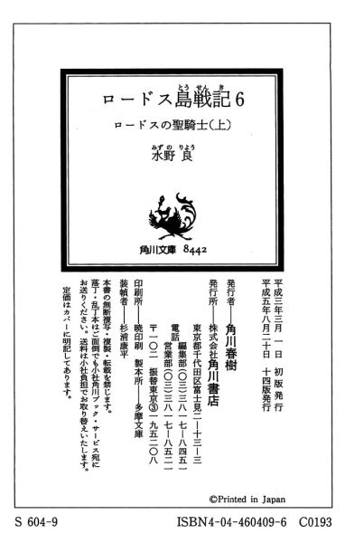

| [水野良] ロードス島戦記6 | |
| 水野良 | |
| (2015) | |
|
ロードス島戦記６ ロードスの聖騎士(上)
水野良
|
目 次
プロローグ
第Ⅰ章 邪悪の胎動
第Ⅱ章 盗まれた祭器
第Ⅲ章 黒い影を追って
第Ⅳ章 生命の杖
あとがき
プロローグ
穏やかな表情を浮かべた女神像が、静かに見下ろしていた。大地母神と呼ばれるマーファの像である。
ニースはかすむ目を、女神像に向けた。
「マーファよ、まもなく、みもとに参ります。ふたたび、この地に生を享ける日まで......」
ニースは口の中で、そうつぶやいた。
神殿内の空気が、調律されたリュー卜の弦のようにぴんと張りつめているのが感じられる。わずかに触れただけでも切れてしまいそうな緊張感が、神殿のすみずみにまで漂っているようだ。
「自然の法ではありませんか」
ニースは傍らに控えて、自分の脈を取っている高司祭のメリルに笑いかけた。
メリルは首を横に振っただけで、何も答えなかった。憔悴しきった顔をしていた。ニースを冒している病を取りのぞこうと、彼女は神聖魔法の癒しの呪文を何度も使い、気力を使いはたしたのだ。
メリルの努力が無益であることは、ニースには最初から分かっていた。人が老いて死ぬのは運命であり、自然なことでもある。激しく生きてきたがために、他人よりも早く寿命がつきただけのことだ。
しかし、いかに諭そうとも、メリルは呪文を使うのをやめたりしなかっただろう。だから、ニースは彼女のしたいようにさせた。
ニースは、今、礼拝所に置かれたベッドに横たわっている。最高司祭の礼服を着て、白い綿の毛布を胸からかけられている。そして、時がくるのを静かに待っているのだ。
女神像が祭られている礼拝所は、あわただしく出入りする人々でいっぱいだった。
ロードス島各地に散らばるマーファ神殿から集まってきた司祭や神官たちである。ニースの姿を遠くから見ては、祈りを捧げて去っていく。
高司祭たちはニースの枕もとまでやってきては、メリルと同じように癒しの呪文を無駄に唱えていく。
また、誰かが入ってきた足音がした。
聞き覚えのある足音だった。ニースは穏やかに微笑むと、上体を起こそうと身体を動かした。あわてたように、メリルが背中に手を回して支えてくれた。
「お母さま......」
息を詰まらせたような声がかけられた。
ニースはもういちど微笑んだ。そして、急ぎ足でやってくる三人に向かって両手をまっすぐに差し伸べた。
かすむ目をこらしてみる。その目に、娘のレイリアと彼女の夫スレイン、そして孫娘である小さなニースの姿が映っていた。
気を利かしたように、メリルは一礼をしてその場から去っていった。
三人がベッドの傍らに立った。すぐに、レイリアと小さなニースが、神聖魔法の癒しの呪文を唱えはじめる。ニースはわずかに首を横に振って、それをやめさせた。
「女神に祈っても、人の寿命を延ばすことはできませんよ。それは自然の法に反することですからね」
「ですが......」
ニースはスレインの言葉も制した。
「早すぎることはありません。このロードス島に生まれて、わたしは多くの人より幸せな人生を送ってきました。これ以上、生きながらえては他の人に申し訳が立たないぐらい」
スレインは六英雄のひとりと讃えられる偉大な女性の顔をじっと見つめた。穏やかな顔をしていた。自分たちを見下ろす女神像と同じ表情だと思えた。そして、女神像と同様に生気が感じられない。
「長旅で疲れたことでしょう。宿舎の方で休むといいわ。悪いけれど、スレインには残ってほしいのだけど」
ニースは今年で十二歳になる孫娘の若い黒髪に手を置いた。小さなニースはその手を取ると、静かに唇を寄せた。
「最後までおそばに居させてください」
小さなニースは涙を流しながら、懇願するように祖母の顔を見つめる。
「心配しないで。そう長くはないだろうけど、まだまだ大丈夫」
不安な表情で見つめてくる顔に、ニースは安心させようと笑顔を向ける。
「最期のときには、みんなに居てもらいますから」
そして、ニースはスレインに目で合図をした。
スレインはうなずくと、妻と娘に席をはずすように言った。
まさしく後ろ髪を引かれるような思いに違いない。ふたりは何度も振り返りながら、礼拝所から出ていった。
「......お話とは何でしょうか？」
スレインはふたりの足音が聞こえなくなってから、その場にしゃがみこんで、義母の顔に顔を近づけた。
「そんな深刻な顔をしないでいいわ。話とはレイリアのこと。あなたにだけは伝えておいたほうがよいと思ったものだから」
ニースはいつもと変わらぬ声で、たいした話ではないのだけど、と付け加えた。そして、静かに話をはじめた。
しかし、話を聞くにつれ、スレインはどこがたいした話ではないのだろう、と思わずにはいられなかった。
レイリアがニースの実の娘ではないというのだ。
ニースは生涯を大地母神への信仰に捧げたのだ。そういえば、レイリアから父親の話はついぞ聞いたことがない。おそらく、レイリアは自分がニースの実の娘ではないことに、うすうす気付いていたのだろう。しかし、血のつながりが、本当に愛しあう母娘にとってどんな意味があるだろう。
スレインが驚かされたのは、レイリアの出生だった。
レイリアはアラニア建国期に封印された邪神の最高司祭ナニールの生まれ変わりだというのである。邪神とは破壊の女神カーディスに他ならず、封印されたという最高司祭は亡者の女王の名で呼ばれた。
およそ四十年前、ある事件をきっかけとして亡者の女王は、古代の封印より解放された。しかし、亡者の女王は勇気ある六人の冒険者たちの手によって、完全復活を遂げる前に滅ぼされたのである。ところが、亡者の女王は女神カーディスから転生の魔力を与えられていたのである。亡者の女王は自らの肉体が滅びると、ひとりの赤子の肉体に転生を遂げたのだという。
事実を知った冒険者のひとり、マーファ神官はこの呪われた赤子を、ターバ神殿のニースに預けた。六英雄のひとりであるニースの手で育てられたなら、いかに邪悪な魂とはいえ浄化できるのではないかと期待したのだ。
ニースはこの神官の申し出をこころよく引き受けた。ニースは赤子にレイリアと名付けると、大切に育てた。そして、十七年の後、娘は邪悪な亡者の女王としてではなく、敬虔なマーファの司祭として成長を遂げた。
あの呪わしい事件によって、ふたたび肉体を支配されてしまうまで。そして......
今、スレインは自分が英雄と讃えられる人間ではないことを痛切に感じていた。おそらく、自分の顔色は、死の床にあるニースのそれよりも悪いに違いない。
話が終わったことを告げるように、ニースはもう一度だけ微笑んだ。
「北の賢者スレイン。あなたには、心から感謝しているわ。あなたと出会えたおかげで、レイリアがどれほど救われているか。そして、これからもあの娘を、そして小さなニースをよろしくお願い」
スレインは、無言でうなずいた。義母の話は衝撃的ではあったが、自分が動じているようでは、ニースは心残りなく、旅立つことができないだろう。
「レイリアと小さなニースには、あなたから話をしてあげて。ずるいと思うかもしれないけれど、わたしが話したことはあなたがた三人が立ち向かわねばならない問題だと思うから」
スレインは一言、分かりましたとだけ答えた。
「ありがとう。あなたもお疲れのことでしょう。レイリアたちのもとに戻ってあげて。わたしはこれから別のお客を迎えねばならないから」
「別のお客？」
「お友だちよ。わたしの古いお友だち。彼らと話が終わったなら、またあなたがたを呼ぶわ」
スレインは一礼をして立ち上がると、ニースのもとから離れようとした。
ニースの言う友だちとは誰のことなのか、察しはついていた。強い魔力の満ちる気配が感じられたからだ。
もっとも、自分の考えを確かめるつもりはなかった。その場に留まりたい衝動もあったが、今はそうすべきでないことを、スレインは理解していた。
スレインは開かれたままの礼拝所の扉から、宿舎へと続く廊下に出た。
魔力が満ちる気配は、ニースも感じていた。スレインよりも先に気がついたことだろう。だから、スレインにはずしてもらったのだ。彼がいては、姿を現わしにくい友人がひとりいるから。
魔力はどんどんと膨れあがり、それが最大になったとき、ニースの視線の先で光が爆発した。それも、二度。そして、姿を現わした者たちがいる。
「久しぶりじゃの。マーファの大司祭」
姿を現わしたのは三人。そのうちのひとり、背中を屈めた老人が杖をつきながら、声をかけてきた。
「お久しぶり。大賢者ウォート、魔神の迷宮は異常なくて......」
「静かなもんじゃ。ここ十年ほどは、誰もわしの館に近寄ろうとはせん。もっとも、それがために、あの大トンネルに魔物どもを棲まわせておるのじゃからな」
「迷惑な話よ。たとえ、滅びようとあのトンネルはわしの王国なのだぞ」
そう不満をこぼしたのは、ウォートと並んで歩いてくるもうひとりの男だった。こちらはしっかりと背筋を伸ばしているにもかかわらず、ウォートと同じくらいの背丈しかない。どっしりとした体格で、立派な白い髭をはやしていた。その手にはきらびやかなミスリル銀製の大 斧が握られている。
ドワーフであった。〝鉄の王〟フレーベというのが、彼の名前である。魔神戦争のおりに、滅ぼされた南のドワーフ族の最後の王。
ニースは意外に元気そうなフレーベの様子を、心から嬉しく思った。
「病にはかかってみるもの。元気なあなたに再会できるとは思ってもいなかった。心の傷は癒されたの？」
「癒されるものか」
過ぎ去った時間に罵声をあびせかけるように、フレーベはいまいましげにつぶやいた。
「永遠に癒されることはないだろうよ。失われたわしの王国は滅び、ふたたび栄えることがないのだからな。なのに、王たるわしは、こうして生き恥をさらしておる」
「自分を呪うのは愚かなことよ。あなたには、なさねばならないことが、まだまだあるように思えるのだけど」
ニースは額に肉厚のドワーフの手を感じた。心が落ち着くような気分になり、ニースはしばらく目を閉じた。ドワーフの手を通して感じられたのは、溢れんばかりの彼の生気と、自分自身が発している熱の高さだ。
「おまえさんの病をわしが引き受けられたらな」
ドワーフは額から手を離すと、そうつぶやいた。
「無理なことを。あなたはまだ五十年は生きられる。わたしの病を患うのは、ずいぶん先の話でしょう」
大地の妖精ドワーフは、エルフほどでばないにしても、長命な種族である。人間の数倍の寿命がある。目の前のドワーフはすでに初老の域に達してはいたが、それでも老ドワーフと呼ぶのは早すぎる。
ニースは幼少の頃よりドワーフたちとは親しかった。ここターバの村にはドワーフたちの集落がある。人間たちは「北のドワーフ族」と呼んでいる。今では、ここロードス島に残る、唯一のドワーフの集落だった。
ニースは彼ら大地の妖精族が好きだった。彼らの実直さ、素朴さ、力強さが好きだった。
ただ、困ったことに彼らは思いこんだら考えを容易に変えようとはしない。それがために、自らの命さえ省みぬことがある。
レイリアを連れもどすと言って旅立った幼なじみのドワーフは、ついに帰ってはこなかった。
そして、ニースは最後のひとりに視線を移した。初老の男だった。痩せてはいるが、背はかなり高い。自らの老いを否定するように、男は背中をまっすぐに伸ばしている。
いかなる表情も浮かべず、腕組みしたままニースを見下ろしている。その左頬には醜い傷跡があった。額には意匠を凝らされた額冠をはめている。そこには人間の双眸にも似た模様が刻まれていて、やはりニースに視線を向けていた。
ニースは男の目ではなく、サークレットの目を見つめかえして、お久しぶり、と言った。
昔、魔神と戦ったとき、この人物は頼もしい仲間であった。強力な魔法を使う戦士。
もっとも、あの魔神戦争のおりは、最後まで謎の人物であった。カーラという名前しか覚えていない。
しかし、ニースはこの人物の正体をすでに知っていた。その目的も知っていた。
「カーラとお呼びしたほうがいいのかしら。それとも、ウッド・チャックと呼びましょうか」
ニースは言葉を選ぶために、すこし間を置いてから、そう呼びかけた。そして、ベッドのすぐそばまで来るよう合図をした。
フレーベとウォートが、無言で場所を譲る。
「カーラと呼んでもらいましょう。姿がいかに変わろうと、我が魂、我が存在は不変であるから」
音さえもたてずに、カーラと名乗った男はニースの脇に立った。
「それはどうかしら」
ニースはカーラの足取りを見つめながら、独り言のようにつぶやいた。
「別れを言いにやってきました。偉大な司祭、大地の法を遵守した者よ」
カーラはそうつぶやくと、顎を引くように頭を下げた。
「よく来てくれました。あなたはどうかしれないけれど、わたしは今でもあなたの友人だと思っています。四十年前から変わらずね。大地の法を見誤った者よ」
首をかしげるような仕草をカーラは見せた。男の目が閉じられる。しかし、額冠の目は微塵も動くことはなかった。その目は片時も閉じられることはないのだ。ロードスの空から灰色の雲が晴れぬよう気を配らねばならないから。古代王国が滅びてからの五百年以上もの時を、カーラは自らにそう命じてきたのだ。
「さて、古い友人たち」
ニースは、かつて六英雄と呼ばれた頃の仲間たちを懐かしく見回した。あれから、長い時が過ぎた。ふたりの戦士、騎士ファーンと戦士ベルドの姿はなく、魔法戦士カーラの姿は変わっている。
「あなたがたと見えるのはこれが最後。変わらぬ友情を心から感謝させていただきます」
「自然の法に従い、死んでゆくか。マーファの大司祭」
ニースの言葉に答えたウォートの声には、非難するような調子が込められていた。
「おまえは知っておるのだろう。南の孤島に漂う暗雲はいまだ晴れず、それどころか、巨大で邪悪な力の胎動の気配さえある。それをロードスの民に委ねて、自らは去るか」
ニースは老魔術師に目だけでうなずいた。
「あなたの言ったとおり。たった、今、わたしはそれを娘婿に委ねたところ。ところでウォート、あなたはどうするおつもり」
「おまえも年をとって意地が悪うなったな」ウォートは白くなった眉を動かして、深く息を吐いた。
「わしが動くは、もはや我が身のためだけよ」
ニースはウォートの答に満足した。大地母神の教えによれば、自衛のための戦いは自然であり、正当なのだ。ニースもその教えを守り、かつて魔神との戦いに臨んだ。
「カーラ、あなたはどうするつもり？」
そう口に出してしまってから、ニースの口許がほんのすこし緩んだ。
「愚問だったわ。強すぎる力は、正義であれ邪悪であれ、常にあなたの敵。でもね、あなたは戦いをやめるべきだと思うの。いえ、はじめからあなたは戦うべきではなかった。呪われた使命を自らに課すことはなかったのよ」
「最後の忠告と受けとっておきましょう」
「まさしく、最後の忠告よ。本当なら、わたしがあなたを救ってあげたいのだけれど、どうやら女神マーファは、その役目を他の人に与えたようだから」
それから、わたしはすべての役目を終えたのです、とニースはつぶやくように付け加えた。
「役目を終えたは、我々とて同じかもしれぬぞ。すでに時代は変わっておるからの。のう、カーラ」
カーラに向かって皮肉っぽい声をかけてから、大賢者と呼ばれる老人は、手にした杖で石の床を小さく一度、叩いた。
「さらばだ、ニース。老いた顔を見せあったからには、お互い、思い残すこともなかろう」
ニースは小さく微笑んだ。
「さようなら、大賢者。魔術を極めた者よ」
ウォートの口から、上位古代語の詠唱が流れはじめていた。
「わしを残していく気か？」
フレーベが責めるような目でウォートを見つめた。
「おまえには、まだなすべきことが残っておろう。おまえの短い足でも、北の部族の住みかまでは歩けようぞ」
「最初からそのつもりだったな」
「いかにも、他人を欺くは人間の持つ悪徳のひとつ。ニースの最後の願いでもある。かなえてやらぬ訳にはいくまい」
「ありがとう、ウォート」
ニースは微笑んで、老魔術師に最後の別れを送った。
さらばだ、とウォートは言葉を返してきた。そして、次の瞬間には光が弾けて、大賢者はその姿を消した。
「厄介なこと」
老魔術師の消えた後を見送って、カーラは静かにつぶやいた。額冠が怪しげな光を放っていた。
「わたしも失礼するとしましょう。わたしの役目は永遠に終わらぬ。このロードスがあるかぎり」
そして、カーラも瞬間移動の呪文を唱えて、いずこへともなく去っていった。
最後に、ドワーフだけが残った。
「この年になって、居候の身分になろうとはな」
フレーベは、ニースの手を静かに握った。
「ドワーフの長は、戦士だ。ドワーフの民の血が流れぬために、戦う義務を負うておる。しかし、わしの力など及ばん相手かもしれぬのだろう」
「魔神でさえわたしたちの手には余っておりました。ですが、わたしたちは勝ったではありませんか」
残された力を精一杯こめて、ニースはフレーベの手を握りかえした。
「カーラの言葉ではないが、まったく厄介なことだ。しかも、今度はベルドもファーンも、それにおまえさんまでおらん」
「代わりに、新たな勇者が立ち上がりましょう。わたしは、ロードス島の末来を憂いてはおりません。いかなる困難、いかなる災厄が訪れようと、ロードスの民はかならず勝利します。わたしは、そのことを確信しているのです」
ニースはすべての力を使い果たしたかのように、ゆっくりと息を吐くと、フレーベに支えられ、ふたたび背中をベッドに戻した。
それから、ゆっくりと瞼を閉じた。
これが、六英雄のひとりと讃えられた偉大な女性の最後の言葉となった。
後にスレインは、ドワーフの英雄王よりこの言葉を伝えられた。
スレインたちが礼拝所に戻ったときにはすでにニースは深い眠りについており、呼べども答えず、ついにその眠りから目覚めることがなかったからだ。
スレインには義母と同じ確信を抱くことは、とうていできなかった。マーファ大司祭の言葉の意味することは分かる。しかし、戦わねばならないのは自分たちなのだ。
しかも、ロードス島創造の女神マーファの生まれ変わりとまで称せられた偉大な司祭はこの世を去ったのだ。ロードスを守護する力がすべて失われた。そんな凶兆のように、スレインには感じられてしかたなかった。
そして、スレインの不安は一年の後に現実のものとなるのである。
第Ⅰ章 邪悪の胎動
１
大きなあくびの声が、背後から聞こえてきた。
あまりのことに、怒りより驚きを感じて、兵士ケディーは同僚を振り返った。ここは国境の砦で、しかも、見張り楼の上なのである。
「隊長に見られたら、殴りとばされるところだぞ。それに、至高神は常に我々を見ておられる。それを忘れると、死んでも天界に召されないぞ」
分かっているというように、同僚はうなずいた。しかし、そのとたん、彼の口からは、ふたたびあくびが洩れ、あわてて、手で口を押さえようとする。
もはや、苦笑するしかなかった。
ここはカノンに隣接するヴァリスの国境の砦。カノンから山越えで続いている街道を警戒するために設けられている。砦には十人ばかりの聖騎士と、百名を超える兵士が派遣されている。マーモ軍の侵攻をくいとめるには、決して十分な数とはいえない。だが、近くのアダンの街にはこの数倍の兵が駐留している。
馬を飛ばせば、ほんのわずかでアダンの街にたどりつく。援軍はすぐにやってくるのだ。砦の守備隊は、それまでのあいだ守りとおせばいい。
実際のところ、数年前までは何度となくマーモが攻めよせてきたものだ。そのほとんどは妖魔たちの襲撃であり、砦の守備隊だけで簡単に撃退することができた。しかし、マーモ暗黒騎士団の精鋭に襲われ、砦が陥落寸前まで追いこまれたこともある。
そのときは、アダンに援軍を頼み、かろうじて敵を押し返した。いや、援軍がやってくるまでに、敵の方が退いたというのが正確だろう。まるで、大きな戦になるのを避けるような、マーモ軍の動きだった。
それどころか、ここ数年というものはマーモ軍の姿がまったく見られなくなった。戦が終わったかのような錯覚すら覚える毎日が続いていた。ヴァリスの重臣たちの中には、マーモにはもはや侵攻の意図がないとさえ言いきる者がいる。
国王エトは、カノン解放とマーモ打倒の聖戦を近々はじめると宣言しているが、いまだ具体的な時期は示されていない。自国さえ安定すれば......、との機運が、ヴァリスの民のあいだに流れているためかもしれない。それに、エト国王は神官王。至高神の法による厳しいけれども公平な施政で、人々からの信頼は勝ち得ているものの、戦のおりの信頼感は先王ファーンとは比べるべくもない。
アダンの街を奪還してから十年。マーモ征服下の荒廃からもようやく立ち直り、街の人々も至高神の恵みを取り戻せたとの実感を覚えている。
ロードスを冒している病が完治したわけではなく、ただの小康状態にあることは誰もが承知している。しかし、悪化の様子がない以上は、あえて苦い薬湯を飲みたくないというのが人々の偽らざる心境であろう。
国境の守備隊のあいだでも、同じような気の緩みは広がっていた。
ファリスの熱心な信者であるケディーにしてみれば、同僚たちの怠惰な雰囲気には、心中穏やかならざるものがある。しかし、同僚を叱責する資格は自分にはない。それは聖騎士たちの仕事だ。自分はただ、自らの使命を果たせばよい。
ケディーは自らの任務を思いだしたように、街道へ注意を戻した。
豊かに緑を茂らせた街路樹が左右に並ぶ美しい街道だった。街道は大地の起伏に合わせ、わずかにうねりながら、前方の山地へと続いている。初夏の若々しい緑に萌える山々が、澄みわたった青空を背景にそびえている。あの山中の峠にはマーモ軍の砦があり、そこからさらに数日でカノンの街に出る。カノンさえ落とせば、マーモ軍はロードス本島における足掛りを失い、おそらくマーモ島へと引き揚げていくだろう。一日も早く、聖戦がはじまればよい。ケディーはそう願っている。
そのとき、ケディーは気がついた。街道の遠くに黒い糸を引いたような隊列が姿を現わしたことに。見間違いかと我が目を疑ったが、隊列はまっすぐに砦へと近づいてくる。かなりの数の軍勢だ。
「マーモの騎士団だ！」
顔をこわばらせながら、ケディーは同僚に叫んだ。
「いかにも、マーモの騎士団よ」
返ってきたのは同僚の声ではなかった。共通語だったが、わずかななまりが感じられた。
驚いて、ケディーは振り返った。腰の剣に手が伸びていたのは、厳しい訓練の賜物である。しかし、すでに後ろを取られていては、間に合うはずもない。振り返ったとたん、胸に細剣が突きたてられた。
呻き声とともに、鮮血が口からあふれでた。ケディーは生温かい液体をむりやり飲みこみ、胃に流しこんだ。
「敵襲だぞーっ！」ケディーは、思いきり絶叫した。最後の力を使いはたし、意識が薄れていく。その中で、ケディーは自分を殺した相手の姿を目に焼きつけようとした。
女だった。浅黒い肌をした女。人間の女ではない。
「ダークエルフ......」
そうつぶやいて、ケディーは闇に落ちていった。自分が天界へと召されることを至高神に祈りながら......
男が発した最後の叫びで、砦中が慌ただしくなっていくのを、ピロテースはいまいましい思いで見つめていた。乱れた金髪を指でかきあげながら、小さく鼻を鳴らした。
最初の見張りを仕留めたまではよかったが、ふたり目でしくじった。たかが兵卒とみくびったのかもしれない。心臓を貫かれてなお、叫び声をあげられるなど、常識では考えられないことだった。
「定命の者のくせに、よい根性だったこと」
ピロテースは金色に輝く瞳をヴァリス兵に向けながら、レイピアを鞘に戻した。発見された以上は、一刻も早くこの場から脱出して、本隊に合流しなければならない。
奇襲が失敗したことを、黒衣の将軍に告げるためだ。
アダンからの増援がくることは避けられないだろうが、黒衣の将軍は気にもなさるまい。
ピロテースは、精霊語の呪文をつぶやいた。
「見えざる小さき精霊よ。汝が姿を我が姿とせよ」
たちまち、彼女の姿がその場から消えた。もっとも、自分の目には姿が映るのだから、確かめようはないのだが。
呪文が破れないよう、ピロテースは慎重に動いた。腰の物に気をつかいながら、見張り楼の上から、地面に飛びおりる。精神の集中が破れると、呪文は簡単に解けてしまうからだ。
縦に大きく開いた服のはざまで、エルフにしては豊かな胸が躍動的に動いた。
「アダンから兵が出てくるのは、かえって好都合」ピロテースは心の中でつぶやいた。
「砦を落とせば、次はアダンの街。遅いか早いかの違いだけ」
ピロテースは、マーモ軍の勝利を信じて疑っていない。黒衣の将軍、アシュラムが指揮をするかぎりは。
そして、その日の終わりには彼女は自分の考えが正しかったことを知ることになる。
アダンの街から〝帰らずの森〟を隔てた場所でも、戦の音が轟きわたっていた。無論、アダンのそれが、ここまで届こうはずがない。
ここでもまた別の戦が起こっていたのだ。
アラニアの王都アランとアラニア第二の都市ノービスを東西に結ぶ街道に沿って、ラスター公爵の軍とアモスン伯爵の軍が展開していた。すでに、先陣が剣を交えていて、互いの主力が開かれた戦端を目指し、殺到している。
激しい戦いだった。だが、このような戦いは先王カドモス四世が暗殺されて以来、数限りなく繰り返されてきた。両軍とも繰り出す軍勢は、総力に近い。だが、全軍がまともにぶつかりあうことはまずなかった。あっても、数刻も切りむすぶとどちらからともなく、退却の命令がくだり、戦はそこで打ち切られる。追撃が行なわれることもなかった。
今回も同じだ、と誰もが思っていたに違いない。ただひとり、アランの都でアラニア国王を僭称するラスターを除いて。
ラスター公爵は、配下の騎士たちの無気力な戦いぶりにも、いらだつそぶりさえ見せなかった。いつにないことだった。むしろ、騎士たちが存分の働きをしているかのように、満足そうに顔をほころばせている。
そんな主君の表情に気がついた側近のひとりが、怪訝な表情でラスターを盗み見ている。
いつもの彼ならば、アラニア王に向かって無礼であろうと、叱責するところだった。しかし、今日ばかりは、そんな些細なことなど気にもならなかった。
笑いを噛み殺すことができず、ラスターはついに声をあげて笑ってしまっていた。
「いかがなされました国王陛下」
先刻の側近が、薄気味悪そうに尋ねてくる。
「いや、敵の動きよ。帰らずの森が、いまだ近寄りがたいと見えて、街道の南にはまるで兵を出しておらぬわ」
側近は相槌を打っておくことにした。しかし、内心ではそれは我が軍も同じではないのか、との思いにかられていた。
帰らずの森は、古代のエルフの呪いによって閉ざされていた。その呪いが、いかなる理由によるものか、五年前に突然、解かれたのだ。人々は喜ぶよりも、むしろ幻覚にでも襲われたような気分になった。ロードス島最古の王国であるアラニアの建国よりずっと以前から、この魔の森は禁断の領域であった。森に入った者は、いかなる者も帰ってはこなかった。
それゆえに、〝帰らずの森〟と呼ばれたのだ。騎士や兵士たちにしてみれば、子供の頃からその恐ろしさを繰り返し聞かされてきた。森への恐れは、大人になっても心の奥底に染みついていて、拭いさることができないのだ。
それゆえ、森に近い街道の南側はまったく戦場とはならず、北側の平原が撃剣の場となっていた。これもまた、いつものことだ。それを今日にかぎって笑いとばすというのは、どう考えてもおかしい。
しかし、側近はラスターの気性をよく知っていた。だからこそ、この地位に留まっていられるのである。一度でも人を欺いた者は、人から欺かれることを極端に恐れる。兄王を暗殺した後のラスターは、まるで猜疑心のかたまりだった。反逆の疑いをかけられ、何人もの貴族や騎士たちが処刑されている。
側近は平静を装って、戦場へと注意を向けようとした。
そのとき、突然、新たな叫び声がまき起こった。それも、いま注意をそらしたばかりの森の方からである。あわてて視線を森に戻す。
「陛下、あれは！」
そこで起こっていることを見て、驚きのあまり、側近は馬から落ちそうになった。重い甲冑を着ているので、馬から落ちたら従卒の助けなしには、戻ることさえもできない。ともかく、そんな無様な真似だけは、しなくてすんだ。だが、馬のほうが驚いてしまい、静めることさえできない有様となった。
森の中から、幾百、いや幾千もの軍勢が突然、飛びだしてきたのだ。人間とは思えない素速い動きで、敵の本隊を目指して殺到Lていく。
ノービス勢の布陣は、森に接する南側を手薄にしていた。まさか、森を通って数千もの伏兵が姿を現わすとは考えてもいなかったのだろう。近衛の騎士たちは、抜剣さえしていなかった。
自分だって考えてはいなかった。側近は馬を静めようとやっきになっていた。だが、あいかわらず馬がいうことを聞かない。
「日頃の訓練が足らんから、そうなるのだ」
ラスターからかけられたのは、激しい罵声でも、冷たい叱責の言葉でもなく、楽しげな笑い声だった。
かえって、背筋が凍るような不気味さに側近は襲われた。
「落ち着いている場合ではございますまい。あれだけの軍勢、我が近衛隊でも防ぎきれません。すぐに主力を戻して態勢を立て直しませんと」
「それには及ばぬ」
ラスターはもはや自らの笑いを隠そうともしなかった。
「あれは味方だ」
「味方、ですか？」
側近はラスターの言葉の意味すら理解できなかったに違いない。聡明でも利発でもない男だった。ただ従順で、そして愚鈍な男なのだ。だからこそ、今までそばに仕えさせてきた。
「分からないのか」ラスターは冷笑した。
「無理もない。あれは、マーモの妖魔兵団だ。先日、わしはマーモの使者と取り引きをしたのだ。アラニアはヴァリス、フレイムが呼びかける連合には応じない。代償はアモスン伯爵の首とフレイム一国。奴さえ死ねば、アラニアは名実ともに我が支配するところとなろう。北の賢者のいないザクソンの反乱軍など、いつでもひねりつぶせる。すでにその手も打ってある」
「わたくしには何も教えては......」
側近は不満を言おうとしたらしいが、どうやら途中で恐れに変わった様子で、最後まで口にすることができなかった。
ラスターは、それが小気味よいと思った。人を背かせぬためには、恐怖をもってするのが一番なのだ。
「ザクソンヘ派遣した将軍たちには話してある。が、ここに連れてきた者には、誰ひとり話してはおらぬ。話せば戦い方がいつもと変わる。敵に知られるやもしれん」
「ごもっともでございます」
側近は頭を深くさげて礼をした。ラスターの計略に感服したというよりも、その視線から逃れたいと思ったのかもしれない。
「今こそ、この事実を全軍に知らしめるとき。すでに敵の本隊は総崩れとなっておる。おそらく、アモスンめが討ち取られたためであろう。このままノービスまで駆けて、敵の息の根を止めるぞ」
かしこまりました、と側近は叫ぶと、自ら馬首を巡らせて、前線へと駆けていった。
「十五年近くも争ってきたのが、まるで嘘のようだ」
側近が駆けていくのを見とどけながら、ラスターは誰に語るでもなく、そうつぶやいた。
「わしとしたことが、なぜ、もっと早く手を打たなかったのだろう」
理由は分かっている。マーモの人間を信じる気になれなかったからだ。気が変わったのは、マーモの指導者のひとり、黒の導師なる人物が自ら面会を求めてきたからだ。
黒の導師は、マーモの苦境を説明し、同盟の要請を行なってきた。アラニアの内乱鎮圧のためには兵も出そう。マーモ軍、勝利の後にはフレイム王国を譲ろうとの条件でだ。
アラニアが統一され、国力を回復すれぱ、間違いなくロードス島一の大国である。アラニアが反マーモの包囲網に参加すれば、マーモの運命は風前の灯である。マーモ帝国はそれをなによりも恐れたに違いない。
バグナードの申し出は不当な条件ではなく、妥当な取り引きである。だからこそ、ラスターはこれに応じるつもりになった。
それに、フレイム王カシューの動きが気に入らない。
フレイム王国がザクソンの反乱軍と深い関わりにあるのは、赤子でも知っている。先のザクソンの指導者である北の賢者がフレイムの宮廷魔術師になった事実が、それを端的に物語っていた。ライデンを併合し、大国となったフレイム王国は、ラスターにとってマーモ帝国以上に恐るべき敵であった。
「これは仕掛けられた戦よ」
ラスターは、ふたたび口に出してつぶやいた。
ロードスが動く。その中心に自分がいる。このふたつの事実に、ラスターはいたく満足していた。それでこそ、ロードス島最古の王国アラニアの国王である自分にふさわしい立場である。
ノービス勢が崩れていくさまを見つめながら、ラスターの顔から笑いが消えることはついになかった。
まもなく、ザクソンの村もビルニの街も落ちよう。ここからでは、ザクソンは遠い。その様子は見えない、音も聞こえない。それが残念でならない。しかし、アラニア北部での戦の勝利も、ラスターは疑ってはいなかった。時代の機運は自分に向きはじめている。この流れを変えることは誰にもできないだろう。
人間には、いやおそらく神にさえ！
「北の門を死守しろ。女子供はターバに逃せ！」
セシル・ファーレンスは、右手に 剣、左手に杖を持ちながら、あらんかぎりの声で叫んだ。それに応じる声があちらこちらから返ってきた。戦意は失っていないようだ。
皆、ザクソンの若者だ。彼らは剣と鎖かたびらで武装していて、襲撃してきたアランの兵士たちと五分以上の戦いをつづけている。
彼らは幼い頃から剣の鍛練を受けていた。専門の戦士たちではないが、その技量はなみの兵士の比ではなかろう。
しかし、騎士となれば話は違う。それに、敵には暗黒神の神官戦士がまざっていた。間違いなくマーモの軍勢である。しかも、アラニアが鉄網騎士団以上に誇っている最強の戦闘団である遊撃隊と魔法戦士隊も加わっていた。
特に魔法戦士たちは恐るべき相手だ。古代語魔法の力を戦闘に使うことに、彼らは熟達している。自らに対しては剣に魔力を与え、身体は楯の呪文で守る。敵に対しては眠りの雲で眠らせ、魔力の網の呪文で捕らえ、光の矢で撃つ。
そして、剣の鍛練も戦士と同様つんでいるのだ。
アラニアはもともと魔術の盛んな王国である。かつては賢者の学院があり、セシルもラーズ導師に師事し、学院で学んだことがあった。
学院を追放されマーモヘと逃れたバグナードの手により、学院は崩壊し、導師たちの多くは殺された。それでも、魔術の伝統はアラニアには強く残った。魔術師たちの私塾があちらこちらで開かれ、そこにアラニア貴族の子弟も通っていた。
セシルももともとはアラニア貴族の出身である。第五子だったので父の知人の魔術師に養子に出されたのだが、そうでなければ騎士身分を与えられ独立していたであろう。
スレイン導師などは、そちらがセシルにはふさわしい生き方で、魔術師になったのは誤りだったのだ、と冗談とも本気ともつかぬ顔でよく話していたものだ。
その通りかもしれない。セシルは自分の魔術師としての才能には、ほとんど限界を感じていた。すでに導師級の魔術を修めている。しかし、それでは足りないのだ。それでは、ザクソンの村を自分に託して去っていった、北の賢者や自由騎士パーンには及びもしないのだ。
セシルは燃え落ちようとしているザクソンの村を見つめながら、絶望的な思いにかられていた。だが、村人たちを襲い、家や畑を焼く、そんな非道を平然と働くアラニア騎士になっていたほうが正しい選択だったとは思いたくない。
「老人や女、子供はほとんど逃がしました」
額から血を流しながら、猟師の息子クロードが、荒い息で報告にやってきた。
「よくやってくれた」
セシルはクロードにうなずきかけた。
「仲間たちは？」
「もちろん、勇敢に戦っています。不意をつかれたりしなければ、こんなことにはならなかったろうに」
クロードは涙をこぼしながら、力任せに地面を靴で蹴る。
「今はそれを悔んでいるときじゃない。戦いながら、おまえたちも後退するんだ」
クロードはセシルの正気を疑うように、目を丸くした。
「まだ、戦えます。村をこんなにされて黙っていては、ザクソン自警団の名がすたる。スレインさんやパーンさんに申し訳がたたない。それなら、いっそ死んだほうがましだ」
「おまえたちに死なれては、オレのほうが申し訳がたたないんだ。悔しい気持ちは、オレだって同じだ。だが、今は退け。ターバにこもって、もう一度やりなおしだ。くわしいことは分からないが、港街ビルニも陥落したらしい。アラニア海軍とマーモの私掠船団に奇襲をかけられてな。ラスターめ、ここ数年ばかりおとなしくしていると思っていたら、マーモとひそかに同盟を結んでいたんだ」
セシルは怒りに手を震わせながら、剣を鞘に収めた。
白色のローブは、血と煤で汚れていて、もはやもとの色さえ見分けがつかないほどだった。しかし、こんなときでも白金に近い金髪だけは、すこしも乱れることがない。
まさか、ラスターがマーモと手を握るとは思いもしなかった。カノン王家と血縁のあるアラニア王家の者が下す決断とは思えなかった。義心などではない。マーモ軍が撤退した後は、カノン王国を堂々と統合できるからだ。もっとも、噂で伝わってくるレオナー帰還王とカノン自由軍の存在が、ラスターの泱意をうながしたのかもしれない。
それに、フレイム王がアモスン伯爵に脅しにちかい圧力をかけていることも承知していただろう。おかげで、ザクソン自治団とノービスのアモスン伯爵のあいだには暗黙のうちに不可侵の約束ができあがっており、セシルたちは南のラスターにのみ気を配っていればよかった。
時間こそかかったものの、自分たちはラスター公爵を確実に追いつめていたのだ。おそらく、追いつめすぎたのだろう。崖の縁に立たされたことを知った奴は、捨身の反撃に出るのだ。
悔しいが、今のところラスターの思惑は功を奏している。
セシルにしても、いきなり大軍をもって攻められるとは思ってもいなかった。
マーモとの同盟の成立により、ラスターは南の守りに兵力を割く必要がなくなったのだ。それどころか、マーモから援軍まで連れてきている。
英雄戦争以来、十余年の歳月は、ヴァリスやフレイムを復興させ、ザクソン自治団やハイランド王国に力をつけさせた。だが、マーモにしてみても、条件は同じだった。いや、繁殖力の旺盛な妖魔どもを従えている分、兵力の充実は向こうの方に分があっただろう。
ふたたび大きな戦が迫っているのはセシルも感じていた。いつ、そして、いずれが最初に動くか、それだけが問題だったのだ。最初に動いたのは、マーモであった。アラニアのラスター公という卑劣な男を同盟者に従えて、英雄戦争の再戦を今こそ開始したのだ。
「初戦はこちらの負けだ」セシルは燃えあがるザクソンの村を見つめながら、大声で叫んだ。
「しかし、最後に勝つのはオレたちだ。それを忘れるな」
燃えさかる炎は、セシルの叫びを飲みこんで、灰に変えていった。おそらく、敵兵は誰も聞いてはいないだろう。もし、聞いていたとしても、気にも止めなかったに違いない。
「その通りですよ」
クロードは、天空の神々よ照覧あれとばかり、剣を空に向けてかざした。
「燃えた家は建てなおせばいい。畑は耕せばいい。オレたちはまたザクソンに戻る。ラスターはこの手で討つ」
「その意気だ」セシルは頼もしくクロードを見た。
村の若者たちが戦士としての自覚を持っていることが強く感じられた。
ザクソンの村は自分たちの手で守ろうと、彼ら若者たちは考えている。この考えが村人たちに根差すまで、ザクソンの村はいくつもの試練を乗り越えなければならなかった。自治制度を放棄しようと談合したのも、一回や二回ではない。ある事件のときには、スレインやパーンをラスター公爵に差し出そうとした者さえいた。
しかし、今やひとりひとりが自由騎士の精神を持っている。パーンが去ってからも、心の奥に彼の姿を刻みつけている。その姿を思い浮かべることができるうちは、彼らは決してあきらめないし、戦いをやめたりもしないだろう。
「自警団の仲間もあらかた村を引き揚げました。さあ、相談役も御一緒に」
セシルは無言でうなずくと、燃え落ちようとしているザクソンの村に背を向けた。そして、振り返ることもなく、全力で駆けはじめた。
ターバヘと至る〝祝福の街道〟を。
枯れ木のようにしなびた指が滑らかに磨かれた〝物見の水晶球〟の表面をなぞっている。
上位古代語の詠唱が薄暗い室内に、流れつづけている。
ここは暗黒の島マーモ。その帝都ダークタウンの王城の一室。
水晶球は、各地の戦の様子を映しだしていた。アダンの街、アラニアの街道、そして北のザクソンの村。
戦はどんどんと凄惨さを増していくようであった。人や妖魔が血を噴きだしながら、次々と倒れていく。破壊と殺戮が、戦場を覆いつくしている。
そんな戦の様子を冷静に見つめる目があった。
漆黒のローブをまとった老魔術師である。人は黒の導師と彼を呼ぶ。〝黒の導師〟バグナードと。
バグナードは古代語を操ることに、全神経を集中させていた。ともすれば、激痛のために意識が遠くなっていく。常人であれば、間違いなく気を失っているだろう。我がことながら、よく耐えていると思う。
しかし、それも限界があろう。時の流れが自分を蝕んでいるからだ。すでに、長時間の魔法の儀式には、耐えられなくなっている。あと、十年もたたずして、自分は魔法の使えぬ無力で哀れな老人となろう。
それだけは耐えられなかった。
自分に、この呪いをかけた老魔術師の顔が浮かんでくる。
ラルカス。二百年もの歴史を誇った賢者の学院の最後の学長でありバグナードの導師でもある。あらゆる手段を試みたがバグナードはラルカスの呪いを打ち破ることはできなかった。
「生あるかぎり、我が制約は続く。汝が呪文を唱えること、叶うまい」
ラルカス導師の言葉が思いだされる。
「いかにも制約は続いておる。それは認めよう、ラルカス」バグナードはくぐもった声でつぶやいた。
「しかし、わたしは負けたわけではないぞ。また呪文を唱えることもできる。これからも......いや永遠にだ」
水晶球が、また別の映像を映しだす。少女の姿だった。黒髪の美しい清楚な雰囲気をたたえた少女である。額に三日月形をした飾り物をつけている。
あれは、六英雄のひとりがつけていた、飾り物であったか。
「もうすぐだ。もうすぐ、復活させてやるぞ」
バグナードは、かすかに笑う。かすれた息が喉を鳴らしたような笑いだった。
と、映像はもう一度変わり、巨大な女神像を映しだした。いずこかの空洞で地面に下半身を埋め、左に傾いている。表面は石と見えたが、人間が作ったようには見えなかった。
かくも巨大な神像を作ることは人間にはできない。いや、ドワーフにも作れないに違いない。
では、誰が。答は、おのずとひとつであろう。
女神像は苦悶の表情を浮かべている。邪悪な気が、全体から発せられていた。あらゆるものを歪めずにはおかない混沌の力がみなぎっている。
「もうすぐだ、カーディス。負の生命を司る破壊の女神よ......」
２
ロードスという名の島がある。アレクラスト大陸の南に浮かぶ辺境の島だ。
大陸の住人の中には、〝呪われた島〟と呼ぶ者もいる。たしかに、この島には呪われたとしか思えぬ場所が随所にある。
また、大きな戦も繰り返されている。四十数年前の魔神戦争や十五年前に戦われた英雄戦争。そして、英雄戦争以来、連綿として続くロードス島各地の争乱など。
しかし、ロードスに住む人々ならば、誰もが理解しているだろう。風と炎の砂漠、火竜山、それから帰らずの森など混沌の領域が次々と姿を消していることを。戦争の終わりが近づいていることを。
ただ、混沌の源ともいうべき暗黒の島マーモはいまだ健在であり、戦争を終わらせるためにはもうひとつ大きな戦いを経ねばならないことも理解しているに違いない。
「次の戦の勝者がロードスを支配する者になるだろう」
こんな噂が風のように流れ、ロードスに住む人々の心を小枝のように揺らしていった。そして、開戦の知らせが噂を追いかけるように流れるには、たいした時間を必要としなかったのである。後に邪神戦争と呼ばれる戦の始まりの......
フレイムの王都、ブレードの街。建国王カシューの居城であるアーク・ロードは、砂の河の流れに取り残された中洲のうえに建てられている。
もっとも、砂の河は近年、涸れることがなくなっていた。乾季には小川ぐらいの流れに細るが、雨季にはアーク・ロードの城壁を洗うぐらいの水量となる。砂の河の昔の姿を知る者は、今の有様が嘘のように思えるという。
しかし、まだ生まれてから十七年しかたたぬ若者にしてみれば、今の砂の河の姿にこそ、馴染みがあり、親しみも感じる。もっとも、アーク・ロードの中庭が水浸しになって、その後始末にかりだされるときを除けばだが。
若者はフレイムの紋章が描かれた甲冑を着て、腰に長剣を帯びていた。一見すれば、砂漠の鷹騎士団の一員のように見える。しかし、騎士団の紋章である鷹の羽根の印が、右肩に描かれていない。隊章もない。また、自らの家系を示す紋章もない。また、「騎士の楯」も与えられていないし、馬にも乗っていない。見る者が見れば、この若者が騎士見習いであることが分かるはずだ。
若者の名前は、スパークという。
砂の河にかかる長い橋を渡り、スパークはアーク・ロード城の巨大な城門をくぐった。
中庭は王城にしては殺風景だった。ここ数年というもの、大水のたびに水に浸り、庭の手入れにも力が入らなくなっているためだ。フレイム建国王カシューは、すでにブレード郊外の丘の上に、新しい王城を建てる決定を下していて、今はその工事がゆっくりと進められているところだ。
城の普請などにも豊富な知識を持つカシュー王は、現場へと頻繁に出かけている。もっとも、今日は他国より客人があり、歓迎の宴が催されるというのだから、アーク・ロードで執務にあたっているに違いない。
スパークが登城してきたのも、実は宴に招待されていたからだ。しかし、なぜ、騎士見習いごときが宴に招かれるのだろう。カシュー王の真意がつかめない。それとも、大臣のルゼナン伯爵が独断で自分を招いてくれたのだろうか。
もしも、そうならスパークはすぐに退席するつもりでいる。
ルゼナンは炎の部族出身の貴族だった。大臣の地位にあるのだから、部族内では最高位の人間だし、王国内でも最上級に属する貴族だ。
しかし、スパークに対しては、あからさまにへりくだった態度をみせる。スパークが炎の部族の前族長ナルディアの従弟にあたり、族長の家系で生き残った唯一の男子であるからだ。あの頑固な老人には、自分が炎の部族の正統な後継者であるという事実しか頭にないのだろう。
たしかにその通りである。ただ、今の身分が騎士見習いであるということも間違いのない事実なのだ。
大臣が騎士見習いに頭を下げていては、王国の階級制度が根底からくつがえされる。カシューはルゼナン老には何を言っても無駄と黙殺しているが、おかげでスパークの立場が、複雑なものになっている。フレイム王国にとっては早く忘れてしまいたいかつての部族同士の紛争を、スパークひとりがそうさせまいとがんばっているようなものなのだ。
カシュー王は、炎と風のふたつの部族間で起こるもめごとは、法に従って、できるかぎり平等に解決しているので、炎の部族の民からの評判は悪くない。このことに関しては、むしろ風の部族の者たちから悪評が出ているぐらいだ。カシュー王は自らを逆境に追いこむことを気にしない人柄なので、その悪評を押さえようともしない。
もちろん、賢明な者ならば理解しているはずだ。王国における最大の部族は、今では属領となっているライデンの民であることを。戦乱を逃れるためロードス各地から流れてきた難民たちも、かつては火竜の狩猟場と呼ばれた肥沃な平原に大きな街を作っている。緑地の増えたオアシスの街ヘヴンには、炎の部族が多数住んでいる。
ローラン、マーニーという南のふたつの都市も、都市国家時代の領主に与えられていた太守職を剥奪し、中央から派遣した太守と交替させている。この改革には、いろいろと反目もあったが、街の住人が新しい体制を歓迎してくれて、結局は王国への帰属を強める結果となった。
フレイムの建国を支えた風の部族たちは、王国の全人口の三分の一にも満たなくなっているのだ。王国の支配者階級の中にも、砂漠の民以外の者が増えてきている。王国の財政を任されているブランド伯爵は末席ながらもライデン評議会の議員だった人物だし、大きく三隊に改編された砂漠の鷹騎士団の将軍も、ふたりまでが風の部族以外から選ばれている。
ひとりはローラン侯爵ルーイェで、武人としての才能をカシューに乞われ、ローラン太守の地位の代わりに就任した。カシューが見込んだだけのことはあり、砂漠の民が不得意な市街戦や攻城戦に新しい戦法をもたらした。外交交渉にも長けており、ノービス伯にフレイムヘの協力を約束させたのは、彼の力によるものだ。
もうひとりは、ライデン傭兵団の団長ゲナール男爵。傭兵出身にもかかわらず伝統的な騎士の規範や戦術に極めて深い知識を持っている。大陸渡来の貴族との噂があり、本人もそれを否定していない。フレイムが大国となった今では、ゲナール隊の騎士のような模範的な騎士が欠かすことができなくなっているのだ。
問題なのは、風の部族の長ともいうべきシャダム公爵が、昔からあいも変わらず傭兵隊をまとめていることだ。騎士団が充実してきた今日では、傭兵隊の重要性は昔ほどではなくなっているのだが、それにもかかわらず、公爵は自らの地位に満足しているようで、宰相になれとのカシューの再三の説得にも耳を貸すつもりはない。
ようするに、風の部族だとか炎の部族だとか、そんな出身の違いを問題にすることは、フレイムにとって、害になりこそすれ、益にはならないということだ。若者たちはそのことを知っている。だが、年寄りたちはそうもいかないのだろう。
砂の河と同じだ、とスパークは思った。老人たちにしてみれば水が涸れていた昔の姿がこの河の真の姿であり、若者にとっては水を湛えた今の姿がそれなのだ。
自分は老人たちの操り人形ではない。激しい憤りを覚えながら、スパークは中庭から城の屋内に入った。十字に分かれた通路をまっすぐに進み、まっさきに謁見の間に向かうことにした。
一階のいちばん奥に設けられた謁見の間まで、広く長い廊下をスパークは歩いた。左右に鉾槍を構えた衛兵たちが並んでいる。鉄鋲の打たれた長靴が、石の床を叩いて、ときおり火花を散らす。
スパークは居並ぶ衛兵のひとりひとりに対し、形式的に挨拶しながら進んでいった。うなずくように軽く頭を下げるだけだが、そのたびに長く伸ばした黒髪が頬にかかる。面倒なので切らずにいるのだが、伸ばしているのもときにはうっとうしいものだ。
世の中はすべてこの髪と同じだ、とスパークは誰かに文句をいいたい気分になった。
謁見の間にやってくると、スパークは扉の衛兵に来訪の目的を告げた。謁見の間の入口に控えている衛兵に、用件を申請して、呼びだされる順番を待つのが慣わしである。
廊下の控え所には男たちが三人ばかり並んで順番を待っていた。ひとりは商人だが、残るふたりは正騎士である。スパークは彼らにうやうやしく礼をしてから、控え所の末席に進もうとした。
ところが、衛兵があわてたように、スパークを呼びとめた。
「すぐにお呼びだしいたします。どうか、そのまま入口でお待ちを」
「順番どおりでいい」スパークは咎めるように眉をつりあげた。この衛兵も炎の部族の人間なのだろうか。
だが、そのときには扉の向こうで自分の名前が呼びだされはじめていた。
「どういうことだ」スパークは衛兵を睨みつけた。「おまえの役目だろう。順番を守らないでどうする」
「勘弁してください、スパーク卿」衛兵は肩を竦めながら、他人には聞こえぬように弁解する。
「あなたが控え所にいるところを、ルゼナン伯に見つけられたら、叱責どころでは済まないのです」
スパークは暗い気持ちになった。やはり、自分が宴に呼ばれたのは、ルゼナン伯爵の手回しだろう。
呼びだされた以上は、やむをえない。控え所の騎士たちから送られる突き刺さるような視線を背中に感じながら、スパークは視線を下げて、謁見の間の扉の前に立った。
呼びだしが終わり、銅鑼が一回鳴らされる。そして、扉がゆっくりと左右に開かれた。
「おお、スパークか。ずいぶん早いな、宴にはまだ間があるぞ」
朗らかな声は、謁見の間のいちばん奥からかけられた。カシュー王の声だ。謁見の間には、あまたの文官、武官が並んでいて、決して静かではなかったのだが、カシュー王の声は本当によく通る。英雄の条件のひとつとして、声の大きさが挙げられることがあるが、カシューはまさしく英雄にふさわしい声量の持ち主である。
顔を伏せたまま、スパークは玉座の前まで進みでようとした。赤い絨毯が目に飛びこんでくる。自分が謁見を許されるまでは、この絨毯は装飾として敷かれているのだと思っていた。しかし、今では玉座の前まで導く役目を負っているのではないかと思っている。
頃合いを見て、スパークは跪いた。顔を正面にあげ、ふたつ並んだ玉座を見上げようとした。片方はカシュー王自身の玉座であり、もうひとつは先年に娶った王妃ナフカ妃殿下の御座である。
ナフカ妃はシャダム公爵の末の妹君で、幼い頃より美姫として評判が高かった。
今は国中の民が、王子の誕生を心待ちにしている。カシューは、いまだ剣術試合で無敗を誇っており、フレイム建国の頃と変わらぬ闊達ぶりをみせてはいるが、さすがに若いといえる年齢ではなくなっている。早く世継ぎをと望む声が多いのもやむをえないところだ。
ただ、カシュー自身はあまり世襲制にはこだわっていないようで、シャダムをはじめとする風の部族や炎の部族の族長の家系の者、さらにはライデンの評議長、ローラン、マーニーの元領主などにも王位継承権を与えていて、新しい子が成人に達するたびに、また誰かが不慮の事故や病気で亡くなるたびに、順位を新たにしている。
スパークも炎の部族の族長なのだから、騎士叙勲を受け成人と認められれば、王位継承権が与えられるはずだった。それも、かなり高位に位置されると目されている。おそらく三番、悪くても五番ということはないだろうというのが、宮廷雀たちの噂である。
もっとも、スパーク自身は王位継承権など欲しくもない。しかし、騎士にはなりたかった。ここ数年、騎士叙勲の任命があるたびに、スパークは期待に胸を膨らませてきた。しかし、十五のときも、十六のときも騎士にはなれなかった。先日も騎士叙勲の儀式があったばかりだが、このときもスパークは選ばれなかった。同期の騎士見習いたちは、どんどんと騎士資格を得ているというのにだ。
何が足りないのだろう、とスパークは内心、不満に感じていた。
剣術試合では、常に上位に顔を出す。経験の差が問われる馬上槍試合でさえ上級騎士以外には負けない自信がある。
武術だけではない、学問も積極的に修めている。スレインの私塾に通い、様々な知識を学んでいる。魔術を勉強しないかとの誘いもあったほどだが、スパークは魔術師にではなく、あくまで騎士になることが願いだったので、これを丁重に断わった。
彼の才能は他人も認めてくれるし、自分も低くは評価していない。少なくとも、同期の中ではいちばん成績がよかったはずだ。なのに、自分だけが騎士に選ばれない。公平なことで知られるカシューとは思えぬ扱いだった。
自分が炎の部族の族長であることが、問題になっているのだろうか。そうは思いたくない。カシュー王はそんなことを気にかける人物ではないはずだ。
正面の玉座に当のカシューは腰かけているはずだった。スパークはゆっくりと頭をもたげた。
そして、ようやく気付いたのだが、カシューの姿は玉座にはなかった。ナフカ王妃もいない。厳格に規則に従い、玉座を見ずにいたのが失敗だった。
「すまないな、スパーク。わたしは、ここだ」
右から声をかけられて、スパークはあわてて声の方に向きなおった。そして、深く一礼してから、非礼をわびた。
これでは、まるで道化ではないか。スパークをよからぬと思っている者から、あからさまな嘲笑が飛んだ。
「立て、スパーク。おまえの儀礼を重んじる心には、いつも感心している。本来ならば、わたしがもっと儀礼を重んじなければならないのだがな」
カシューは笑ってはいなかった。
なぜ、カシューが玉座にいなかったのか、とスパークは疑問に思った。謁見の間では、王が他の者より常に上座にいなければならないのが常識ではないか。
「ちょうどよい、スパーク。おまえに紹介したい者がいるのだ」
誰だろう、といぶかしがりながらスパークは顔をあげた。
カシュー王のそばには、三人の人物が控えていた。ひとりは、スパークもよく知っている人物だった。私塾の導師であり、フレイムの宮廷魔術師でもあるスレイン・スターシーカーである。
もうひとりは戦士だ。かなりの経験をつんでいるようにみえた。自然体なのだが、隙がまったくうかがえない。変わった形の鎧を身につけ、腰に剣を帯びている。胸に描かれている紋章は、滅びたはずのカノン王国の紋章だ。カノン王国ゆかりの貴族なのだろうか。
最後のひとりはエルフの女性であった。まるで浜辺に打ち上げられた貝殻のように、滑らかな白い肌をしている。日の光を浴びたなら、虹色に輝くのではと思えた。草色の服の上から、硬革の胸当てをつけている。腰に下げられているのは美しい装飾の施された細剣であった。
スパークを見つめてにっこりと微笑む森の妖精の姿は、噂にたがわない美しさだった。
「はじめまして。フレイムの騎士見習い、スパークにございます」
かしこまって、スパークは戦士たちに名乗る。
戦士は照れたように頭をかいた。エルフ女性の方は、悪戯っぽい笑いを浮かべると、視線をちらりと戦士に走らせる。
「こちらこそ。わたしは、カノン自由軍の騎士隊長パーンです」
戦士は、スパークに合わせるように態度をあらためながら、そう名乗った。
「あたしは、ディードリット」
エルフ女性は笑顔をたやさずに言う。
パーンに、ディードリットだって？
装っていた平静さが、とたんに崩れた。心臓が小鳥のはばたきのように忙しく脈を打ちはじめる。まるで、騎士叙勲の名簿が張り出されるときみたいに、スパークの全身が固くなっていた。
「あなたが、自由騎士パーンなのですか？ それにハイエルフのディードリット？」
スパークは自分の声が常になく震えていることを意識していた。
目の前にいるのは、伝説の勇者たちなのだ。
自由騎士パーンの伝説は十五年前の英雄戦争にはじまる。彼と彼の五人の仲間は、さらわれた王女フィアンナを救出し、ヴァリスの王都ロイドヘと姿を現わしたのだ。そして、マーモに味方していた謎の魔女の正体を探るべく、ドワーフの廃墟を抜けて大賢者の塔へと赴いた。
その後、ヴァリスの平野で決戦があり、彼らも戦いに参加した。あの激戦をも生きのび、乱れたヴァリス王国の立て直しに、彼らは全力を尽くした。そして、ルノアナ湖における魔女との戦い。彼らはこの戦いにも勝利する。しかし、ひとりは戦いの中で帰らぬ人となり、ひとりは闇の力にみいられ、いずこへともなく去ったと聞く。
その後、残った仲間はそれぞれの道を歩みはじめる。エト司祭はヴァリスに留まり、後にヴァリスの神宮王として即位をする。
自由騎士となったパーンは、ハイエルフのディードリットとともに、ロードス島各地を転戦している。風の部族と炎の部族との数百年にも及ぶ争いに終止符を打ち、和解させたこと。スレイン師とともにザクソンの独立を助け、強力な自治体制を作りあげたこと。魔竜シューティングスターを倒し、竜殺しの勇者となったこと。
ハイランド公国を悩ませていた炎の巨人を倒したときにも、現国王レドリック、王妃シーリスらとともに、パーンたちの協力があったと伝えられている。神聖王国ヴァリスのアダン奪還戦にも自由騎士パーンは力を貸している。
その後はレオナー帰還王に協力し、マーモ支配下のカノンの地で戦いつづけていると聞く。この抵抗運動は最初こそ、風の噂にすぎなかったが、最近では確実な情報としてロードス中に知れ渡っている。
国王カシューもすでに伝説の人物といえるが、なにしろ身近にいるので、普段はそれほど意識せずにすむ。しかし、パーンはあまりにも遠い存在だった。吟遊詩人たちが歌う彼の武勲詩が、ロードス島の人々の心をいかに熱くさせていることか。
自分が騎士になるのを選んだのも、自由騎士パーンという偉大な勇者に憧れたためと言ってもよい。
その自由騎士が自分の目の前にいる。
スパークは興奮を覚えつつ、同時に我が身の卑小さを恥じた。騎士見習いではなく、できれば騎士隊長、いやせめて正騎士として、自由騎士パーンとは見えたかった。二度とこないかもしれない機会なのだから。
スパークは、一度は上げた顔をふたたび床に落とし、ただただかしこまった。とても、この英雄を正視できない。自分はあまりにも小さな人物で、彼らはあまりにも偉大すぎた。
これがオレの器なのだ、と騎士見習いでしかない自分に、スパークはなかば絶望していた。
「なにか尋ねることがあってやってきたのではないのか」
平伏したまま動かなくなったスパークに気を利かしたのか、国王カシューから顔を上げろという声が飛んだ。
酷な命令だったが、従わない訳にはいかない。スパークは顔をあげ、カシューとパーンのちょうど中間に視線を向けた。これならば、竦むことなく話ができそうだった。
「はい、陛下にうかがいたいことがあって参りました」
「なんだ、言ってみろ」
「はい、今宵の宴にわたしをお呼びくださったのは、陛下御自身でしょうか？」
カシューはそんなことを尋ねてどうするのだ、との表情をあからさまに浮かベた。スパークは、自分がなんと愚かな質問をしたのだろうと後悔した。自分ひとりの個人的な感情だけで、国王の貴重な時間を取ってしまったのだ。
「宴に呼んだのは、間違いなくオレの意志だ。パーンたちに引き合わせたかったからな。だから、目的は済んだ。私用があるならば、出席せずともかまわんぞ」
カシューの答は、落ち込みかけたスパークの気分を高ぶらせた。宴の席で、自由騎士パーンと存分に話ができるのだ。カシューはそれを約東してくれたのだ。
「いえ、それならば喜んで出席させていただきます」
スパークはいつになく元気な声で答えていた。普段ならば絶対に出さない声だ。子供だと思われるのが癪だからだ。
「それから、もうひとつ。マーモ討伐の兵を挙げていただきたい旨を陳情に......」
それは、たった今、思いついた質問であった。国王に謁見し、愚かな質問しかしなかったでは、自由騎士パーンに笑われてしまうと思ったからだ。
「それは、炎の部族の総意か？」
カシュー王は鋭い声で、そうきりかえしてきた。怒りのためか、顔がこわばっているように見えた。
「い、いえ。違います」
スパークの高揚感は一瞬にしてすぎさり、代わりに後悔の念がスパークを包みこんだ。視線を床に落として、石の地膚に釘付けとなった。
「わたくし個人の意見です。部族の民とは、何の関係も......」
「ならば出過ぎた質問だな、騎士見習いスパーク。わたしが先に兵を出さなかったことが、それほど不満か」
「申し訳ありません......」
カシューが何を意味したのかは分からなかった。しかし、その機嫌を著しく損ねたことだけは間違いないようだった。
がっくりと肩を落とし、スパークはうなだれた。
「よい。下がれ」
いまいましげな声で、カシューはそう命令した。
従うしかなかった。一瞬ではあったが、己を見失ったことが、最悪の結果を招いてしまったのだ。自業自得としかいいようがない。
地の底へと叩き落とされていくような失墜感にうちひしがれながら、スパークは崇拝するふたりの英雄たちに背を向けた。
そして、謁見の間を後にした。誰かがあげた嘲笑の声が耳に届き、それがいつまでたっても消えはしなかった。
３
分厚い机と椅子が数脚あるだけの殺風景な部屋だった。周囲は灰色の壁に覆われ、窓さえもない。扉を閉ざすと息苦しささえ覚えてくるようだった。
ここはアーク・ロードの地階に設けられた沈黙の間、王国の機密に関する相談が行なわれる部屋である。
謁見の間から場所を移し、カシューはパーンとディードリット、スレインだけを伴って、この部屋にやってきた。
「聖王宮の謁見の間には、風を操る魔法の宝物があったが、ここにはそんな便利な物は置いておらん。蒸し暑いのは、我慢してくれ」
カシューはパーンたちに椅子を勧めながら、自身も椅子のひとつに無雑作に腰を下ろした。
「古代王国の時代には、魔術の耳や目がありましたからね。魔力を遮る部屋が必要だったのです。剣の時代になっても、この慣習だけが残ったようですが、いやはや無意味なことです」
スレインが自分の知識を披露するのを、パーンは懐かしく聞いた。
スレインは、昔とあまり変わっていなかった。昔から老け顔だったし、髭も伸ばしていない。髪の長さや形も一緒だ。なにより、自分の知っていることは語らずにはいられない性格など、まったく十年もの歳月を感じさせなかった。
「新しい王城には普通の会議の間だけで十分ですからね」
「宮廷魔術師殿の私室として用意したいと思っていたのだがな」
カシューとスレインは、そんな冗談を飛ばしあっている。北の賢者スレインは、今やフレイムになくてはならない人物だと噂に聞いている。
「なかなか、宮廷魔術師ぶりが板についているじゃないか」
パーンはにやりとスレインに笑いかける。
「かれこれ十年もやってますからね」スレインはとぼけたような答を返してきた。
「十年かぁ」パーンは実感を込めて言った。
「オレは毎日が忙しかったから、飛ぶように年月が過ぎていったなあ。戦ってばかりだったが、よく生きながらえてきたもんだ」
「カノンの様子はどうなのだ？」
カシューが興味にかられたように尋ねてきた。
「信頼できる仲間も二百人を超えました。噂を聞いて、ロードス各地からカノンの騎士たちが戻ってきましたから。カノンの元宮廷魔術師もね。それに、カノンの街にあるチャ・ザ教団とラーダ教団の高司祭たちも、ひそかに協力を約束してくれています」
そう、見通しは明るくなっている。しかし、ここに至るまでの道のりの何と長かったことか。パーンは感慨とともに、過去十年の戦いを振り返った。実際、自由軍の活動がうまくゆくようになったのは、ここ数年のことである。それ以前の活動は、決して楽なものではなかった。マーモの衛兵相手に派手な切り合いを演じたこともある。だが、ほとんどの場合、いかにマーモ兵の追及から逃れるか、いかに今日を生きのびるかで必死だった。食べる物もなく、水だけで暮らしたことも一日や二日のことではない。マーモの食糧庫を襲って、仲間を失ったこともある。畑の作物を盗んで、農夫から石を投げられたこともある。
自由軍とは名ばかりで、生活は山賊と同じだった。それでも、パーンたちは多くの村々をマーモの圧政から救い、村人たちをカノン国外へと脱出させた。これが、マーモを苦しめるいちばんの方法だと思ったからだ。
実際に、パーンたちの思惑どおりになった。耕す者のいない畑は荒野と同じだ。奪い去るべき富を生みださないのだから。民のいない王国など、まったく価値のないものだ。マーモの支配者たちは、そのことを思い知るはずだった。
しかし、ささやかなパーンたちの成功も、カノン太守が黒衣の将軍アシュラムに代わるまでであった。太守に就任するや、アシュラムは民に対する不当な圧政を厳しく禁じた。支配者にも民にも厳しい規律を課し、違反した者には容赦のない制裁を加えた。アシュラムは秩序ある恐怖によって、カノンの支配体制を強化しようと目論んだのだ。
アシュラムがカノン太守に就任したことによって、カノン自由軍の活動も変更を強いられた。村人たちを逃亡させるのではなく、人々の愛国心に訴え、マーモと対決しようと説いてまわったのである。しかし、支配者への恐怖のためか、それとも彼らが約束する報酬に魅入られたか、パーンたちは救おうとする民に襲われたり、裏切られたりするようになった。いったい何度、絶体絶命の窮地におちいったことだろうか。
しかし、パーンたちはその危機をなんとか切り抜けてきた。そして、マーモの支配体制を揺さぶり、カノン解放の機運を盛りあげてきた。それは、カノン太守アシュラムとの剣をまじえることのない戦いだった。
この戦いは絶望的と思われたが、ここにきてようやく勝機が見えてきた。焦れたマーモ軍が外征に打って出たからである。
「なるほど、だいたいの事情は飲みこめた」カシューはパーンに相槌を打ってから、悔しそうな表情を見せた。
「おまえがやってくるのは歓迎するが、なぜ、フレイムが危機を迎えたときばかりに姿を現わす。オレにはおまえがこっそりと影を踏みにやってくる悪鬼のようにも思えるぞ」
それを聞いて、パーンの表情はすこし沈んだ。
「わたしも、ついさっき知りました。ラスター公爵とマーモとが同盟を結んだという話ですね。それから、アダンの街がふたたびマーモに占領されたこと、アモスン伯爵が妖魔に討たれ、ノービスの街が包囲攻撃されている最中だ、と」
「そればかりではありません。ザクソンの村とビルニの街もラスターの軍勢に敗れたようです。彼らは、ターバの村にこもって抵抗を続けていますがね」
それを聞いて、パーンの顔色が紫色に近くなった。
「それは、本当なのか。セシルは大丈夫なのか」
「アラニア軍とマーモ軍の主力に奇襲されたのですよ。セシルも自警団の戦士たちもよく頑張ったようですが......。もうすこし、強力な軍隊を組織しておくべきだったと反省していますがね」
「それじゃあ、自治の意味がない」
パーンはスレインに反論する。専門の兵士を置かないことを決めたのは、村の総意であり、スレインの決定ではなかったのか。
「分かっていますよ。しかし、結果として多くの仲間を失いました。幸いにもセシルやビルニの執政官らは無事だったようですが......」
「そうか......」パーンは疲れたように、椅子の背もたれに身体を預けた。
「ターバの村は、大丈夫かな？ ほら、そのう、六英雄のニースは一年前に亡くなった、と聞いているんだが......」
「ターバは安心です。もしも、あの村を攻めるようなことがあれば、大地母神の神官たちは、自衛のために剣を取るでしょう。それに、ドワーフの戦士たち。義母は、こういった事態が起こることも予想しておられたのでしょう。南のドワーフ族の王フレーベにも、協力を頼んでいますから。もしも、ラスターたちがターバを攻めるようなことがあれば、痛い目を見るのはおそらく彼らの方でしょう」
「フレーベ、鉄の王フレーベか」意外な名前を聞いて、パーンは驚きの声をあげた。
「六英雄のひとりじゃないか。そうか、あの人がターバにいてくれるのか。それは心強いな」
「しかし、ドワーフたちもマーファ神殿も自らを守るためにしか武器を取りません。ラスターも、それは承知しているでしょうから、ターバに手出しはしないでしょうね。あの辺境の村は、昔から自治を行なっていたようなものですし......」
スレインは残念そうに、杖を握りしめた。以前のものと杖の形が変わっているのに、パーンは気がついた。もしかすると、名だたる魔法の杖なのかもしれない。いずれにせよ、フレイムの宮廷魔術師である今の彼にはふさわしい物なのだろう。
スレインは、ひとりでも多くの味方がほしいと思っているようだった。ドワーフたちやマーファ教団が正義のために立ち上がってくれたら、と願っているに違いない。
「スレイン、自分の意志で剣を取る人間だけに期待しようじゃないか」
「パーンの言うとおりだ」カシューが力強くうなずいた。
「先手を取られたのは、オレの誤算だったが、戦いはまだはじまったばかりだ。巻き返しの機会はいくらでもある。フレイムの兵士たちの士気は高いぞ。幸いにも、アモスン伯爵のひとり息子が、オアシスの街ヘヴンに身を寄せ、我が国に援助を依頼している。まだ二十歳と若いが、アラニア王家の血を引く青年だし、アモスン伯爵亡き今は、アラニアの正統な王ともいえる。大義名分をかざすのは好きではないが、他国に攻め入るときには、これがないと侵略となるからな」
「ラスターを打倒するのですか？」
パーンは思わず椅子から腰を浮かせていた。
「戦を仕掛けたのは、向こうの方だ。フレイム王国の連合要請を無視して、マーモ軍と同盟をしたのだからな」
それがどうした、と言わんばかりのカシューの反応である。
「いえ、ラスターを倒すのはかまいません。しかし、彼を倒した後のアラニアは......」
「なるほど、おまえの言いたいことが分かったぞ」カシューはにやりとして、パーンに落ち着いて椅子に座るよううながした。
「オレの器では、今のフレイムでも手にあまる。ラスター打倒の後は、アモスン伯の息子を王位に即かせるさ」
「傀儡として？」パーンはカシュー王の目をじっと見つめて、相手の言葉の真偽を確かめようとした。
「それもせん。そんなにアラニアが心配ならば、以前に勧めたとおり、おまえが王になっていればよかったろう」
「それは、その通りなのですが......」パーンは言い過ぎたことを後悔した。
「申し訳ありません。さっきの騎士見習いではありませんが、出過ぎました。しかし、わたしはカノンの地で、支配者の心と支配される民の心とが、まったく違うことを知ってしまったのです。アラニアの国民は、おそらく、フレイムに支配されることに抵抗するだろうと......」
「アモスン伯の息子には一度会ったが、若いがかなり聡明な人物と見た。父親は他の貴族たちに担がれただけという印象を受けたがな。あの若者ならば、しっかりとした後見者さえいれば、きっと立派に王国をまとめあげるだろう」
そして、カシューは後見役にもフレイムとは関係のない人物についてもらえば文句はなかろうと、言葉を足した。
「ありがとうございます。それを聞いて安心しました」
「変わってないな、パーン」
目を細めながらカシューは、壮年となり、たくましくなった戦士を見つめた。戦士として、男として、彼は今や絶頂期にあるといっていい。
「後で剣の試合でもしよう。フレイムには、オレの連勝を止められそうなのは、おらんからな」
「試合にもならないでしょうが、お願いします。どうしても、この手で倒したい男がいるのです」
「おまえに倒せない戦士など、今のロードスで幾人もおらんだろう。噂どおりならば、不死身と謳われたフレーベ、他にはオレと......」
「レオナー陛下にも、まだ遊ばれていますね。そして、黒衣の将軍アシュラム......」
ふむ、と顎に手をやりカシューはうなった。アシュラムが生きていたという噂は、カシューのもとにも届いている。火竜山で剣を交えたが、確かに恐るべき手練れであった。魔神の剣を、まだ使いこなせないみたいだったが、いずれは恐るべき敵となろう。
「それにしても、レオナー帰還王がパーンよりも優れた剣士とは心強い。マーモを倒した後で、こっそり試合を申しこむとしよう。お互い、王という立場があるから、公式の場で勝負を泱めるわけにはいかんからな」
「そのおりには、ぜひ立ち合わせてください」
パーンの顔に、ようやく笑みが浮かんだ。
「難しい話は終わったのかしら？」
すかさずディードリットが声をかけてくる。彼女は、パーンたちの会話をいかにも退屈そうに聞いていた。しかし、一日や二日ならば、ディードリットは目を閉じたまま、何もせず過ごすことができる。森の妖精であり、永遠の時間を生きるハイエルフならばこそ、である。
「もうひとつあっただろ」
パーンは申し訳なさそうに、ディードリットを見つめた。彼女の美しさは、十年前とすこしも変わらない。むしろ、人間らしい柔らかい表情を身につけて、魅力的になったようにも思う。
「知っているわよ、なかなか本題に入らないから思いださせてあげたの」
「なんだ？」カシューがパーンをうながした。
「レオナー王より、親書を預かっております。これをご覧いただければすぐに分かります」
パーンは鎧の懐から、黄色っぽい羊皮紙の封筒を取りだした。蜜蝋で封印されていて、剣と麦とを組みあわせたカノン王家の紋章が刻印されていた。
カシューは短剣で封を切ると、中の書状を取りだして、すばやく目を通した。
「レオナー王は、すぐに軍を出せというのか？」
「はい、マーモ軍の主力は、カノンの地より出払っており、あきらかに手薄になっています。この機会を逃したくはありません。カノン自由軍の戦士たちは、マーモ軍の主力が帰還する前に、各地のマーモ軍の砦を襲撃する手筈を整えています」
「カノン国外に出たマーモ軍を釘付けにしろ、ということだな」
パーンは力強くうなずいた。
「エト国王にも同様の要請を行なっております。マーモの後方は、カノン自由軍が押さえます。退路を失ったマーモ軍に対し、ヴァリス、フレイムの両軍が南北に分かれて東進すれば、かならずや勝利は我らのものになるでしょう」
「その意見に異論はないのだが......」
カシューは腕を組みながら、スレインの方をうかがった。スレインも、無言で相槌をうつ。
「何か、気になることがあるのですか？」
パーンは、彼らが別の問題を抱えていることをそれとなく悟った。
「うむ、ひとつだけだがな」
カシューは問題をパーンに話すベきかどうか、迷っている様子だった。
「困っていることがあるなら言ってください。オレにできることなら協力を......」
カシューは楽しそうな笑いを浮かべながら、パーンの方に身を乗りだしてきた。
「たしかに、おまえが協力してくれるのなら嬉しいのだが、おまえがいなくてはレオナー王が困るだろう」
「そうでした」パーンは自分の愚かさに苦笑いをした。
「本当におまえは変わっとらんな」
そう言うと、カシューは豪快に笑った。
「聞かないほうがいいでしょうね。聞いてしまうと、身体をふたつに割りたくなります。早く、カノンを解放して、自由な身分になりたいものです。そうなれば、いくらでも協力できますのに......」
「それまで、余裕があればよいのだが」
カシューは複雑な表情に戻って、ふたたび腕組みをした。
「まあ、よい。その話は、後日にしよう。事が急を要するかどうかも分からんし、ただの杞憂に終わるかもしれん。どうにも途方もない話なのでな」
それから、カシューは決意を固めたようにさっぱりとした顔になり、椅子から立ち上がった。
「よし、オレは決めたぞ。レオナー王の要請を受けよう。我がフレイム軍はいつでも出撃の準備ができている。欲を言えば、ハイランド王国がモス地方を統一するのを待ちたかったのだが、先手を打たれたとあっては、じっとしているわけにもいかんだろう。まして、ふたたびアダンを失ったヴァリスは、黙っていては面目が立たん。フレイムが動かなくても、単独で兵を出すに違いない」
「ありがとうございます、カシュー陛下」
パーンも立ち上がって、深々と頭をさげた。ディードリットもパーンに倣う。
「礼にはおよばんぞ、パーン。マーモの打倒は、オレにとって亡きファーン王への誓いでもある。次の戦こそ、オレの最後の戦いだ。戦に明け暮れたオレの人生だが、そろそろ終止符を打たねばなるまいからな」
「王妃殿下のためですか？」
すました顔でスレインがカシューをからかう。
「残念ながら違うな、我が宮廷魔術師殿。オレは王なのだ。王が戦えば巻き添えになる民がいる。それだけのことだ」
カシューは言葉少なく静かに答えた。
そう言ったときのカシューの顔に、パーンは不思議なものを見たように思った。顔は笑っていたが、目はそうではない。どこか遠くを見つめているという感じだった。
カシューが何を考えているのかは、分からなかった。しかし、傭兵王の気持ちは、パーンになぜか伝わってくるのだった。それは喪失感だった。何か大切なものを失ったような。話は打ち切りとばかり、先に立って沈黙の間を出るカシューの姿に、パーンは突然、十年という時の流れを意識した。
４
華やかな喧噪が、アーク・ロードの宴の間を満たしていた。豪勢な宴となった。当初は、フレイムにとって救国の英雄ともいえるパーンとディードリットを歓迎するために催されたものだった。
しかし、カシュー王がアラニア王国の要請により反逆者ラスター公爵を討つこと、侵略者マーモ帝国に対する戦を開始することを発表したとたんに、フレイム軍の出撃の前祝いの席ともなった。
騎士たちの豪快な笑い声があちらこちらで響いている。恋人たちは宴の席を離れ、宮殿のバルコニーや回廊の柱の陰で、しばしの別れを告げ、時間を惜しむように愛を語らっている。
パーンは鎧から、宴用の装飾の多い衣服に着替えていた。ディードリットも今回はドレスで出席していた。ともに専用の職人が急ぎで仕立てた正装である。
彼らは宴の主役であり、たくさんの人々に囲まれていた。
ふたりとも、こういった場が得意であるはずがない。ここ十年あまりというもの、カノンの山野で暮らしていて、戦いに明け暮れていたのだから。
若い騎士たちは、パーンから戦の話を聞きだそうと懸命になっている。ディードリットの方は女官たちに人気だった。ハイエルフの美しさの秘密を盗もうとでもいうように、女官らはディードリットの肌や髪にさかんに触れたがった。
パーンは戦の話をしていればいいと分かったので、今はすこし落ち着いている。若い騎士たちに向かって、自分がかつて経験した戦の様子や、強敵との戦いについて、淡々とした調子で喋っている。
派手な脚色がないだけに、若い騎士たちは戦というものを実感しはじめたようだ。自分たちが、はたして戦で通じるものかと、パーンに尋ねてくる者もでてきた。
それを聞いて、パーンはすこし驚いた。フレイムの騎士団といえば、歴戦の強者だと思っていたからだ。しかし、考えてみれば、十年以上も大きな戦を経験せずに過ごしているのである。
若い騎士たちが、実戦の経験がないのは当たり前だ。奮い立つ気持ちとともに、恐れる気持ちもある。
彼らはパーンの初陣の話も聞きたがった。
パーンの初陣は、実はこのフレイムでの戦いなのである。十六のとき、フレイムの傭兵隊に参加して、炎の部族と戦ったのだ。戦はオアシスの街ヘヴンをめぐる小競り合いだった。もっとも、少年だったパーンは、ほとんど活躍の場を与えられず、後方への連絡や街道沿いの警備をおもな任務としていた。
それでも、炎の部族が総攻撃をしかけてきたときには、パーンも戦闘に加わった。このとき、パーンは二人ほど切った記憶がある。しかし、自分も五回は切りつけられた。鎧が父譲りの甲冑でなかったなら、パーンの命はなかっただろう。
フレイム王国の現状を考え、パーンはこの初陣の話はしないことにした。騎士たちは不満の声をあげるが、パーンは適当にごまかしておいた。
「やっておるな」
そのとき、カシューがパーンたちの輪の中に割って入ってきた。
たちまち、若い騎士たちが緊張して、不動の姿勢をとる。カシューは、宴の席は無礼講だから、と彼らに緊張するなと声をかけた。
「オレもここ十年、実戦は経験しておらん。やはり、勘は鈍っているだろう。どれ、オレもひとつ戦の心得を聞くとしよう」
「陛下の前で、戦の話ができるものですか」パーンは答えて、照れた笑いを浮かべた。
「ところで、スパークはおらんのか？」
カシューは注がれたばかりの酒杯をパーンに手渡しながら、若い騎士のひとりに尋ねた。
「宴がはじまった頃には、姿を見たのですが......」記憶をたどるように、問われた騎士はゆっくりと答えた。
「そうか......」
そうつぶやくと、カシューはなにやら思案するように手を顎にかけた。
「昼間の騎士見習いですね」
パーンは、謁見の間で昼間見た若者を思いだした。
「ちょっと話がある。悪いが、席を変えてくれんか」カシューはパーンにそう言ったあと、彼を取り巻く若い騎士たちを見回した。
「おまえたちも、明日から戦支度に追われるだろう。戦話をする暇があるなら、女でも口説いてこい。でないと、オレのように嫁をもらうのが遅れてしまうぞ」
若い騎士たちはどっと笑って、互いに目配せしあいながら散っていく。
パーンはディードリットに合図を送ってから、カシューと並んで歩きはじめた。ディードリットは、まだ女官に囲まれており、パーンに非難の目を向けた。
悪いな、とパーンは口だけを動かした。
パーンとカシューは騒々しい宴の間から、比較的静かな回廊へと場所を移した。
「お話とは、何でしょうか？」
周囲に人がいないのを確かめてから、パーンは切りだした。
「うむ、話というのはな、さっき言った昼間の騎士見習いのことだ。おまえには、あの騎士はどう見えた」
「どう見えたと言われましても......」パーンはカシューの質問に当惑を覚えた。
「利発そうな少年ですね。よい騎士になるんじゃないでしょうか」
「なってもらわねば困る。あいつは、将来のフレイムにとってなくてはならん人物だと思っておるのだ」
「でしたら、昼間は言いすぎたのではありませんか」
スパークという騎士見習いに対するカシューの思い入れが伝わってきたので、パーンはカシューをからかいたい気分になっていた。
「おそらく、あの若者は、マーモとアラニアが同盟したことや彼らが攻撃に出たことを知らなかったのでしょう。カシュー陛下は、先手を取られたことを気にやんでおられたではありませんか。そこを指摘された腹立ちは理解できますが、真面目そうな若者だけに、かなり気にしていると思いますよ」
「オレも聖人君子ではないからな。機嫌が悪くなったら、声も荒くなる」カシューは言葉どおりにすこし声を荒くした。
「騎士隊長を任せるだけなら、今のあいつで十分だ。しかし、騎士隊長を務められる男は、他にいくらでもいる。あいつには、もっと大きな人間になってもらいたい。勇敢な騎士隊長とか優秀な文官のまま、終わってもらいたくないのだ」
「それで、わたしに何をしろとおっしゃられるのですか？」
「おまえにつけてカノンに派遣してやろうかとも思った。しかし、危険な場所に、今のままでほうりだすわけにもいかんしな。あいつは立派に戦うだろうが、命を落とすかもしれん。そんなことになったら、炎の部族の者たちが何というか」
補足するように、カシューはパーンに彼が炎の部族の族長の後継者であることを説明した。
「ナルディアの従弟なのですか......」
スパークは色白なので思いもよらなかったが、言われてみれば面影など似ていないこともない。ナルディアの死は、パーンの心に刻まれたままの古傷のひとつである。それはカシューにとっても同じはずだ。
彼女のように不幸に死んでゆく者が、二度とあってはならないと思っている。
「カシュー陛下が、彼を大事にしたい気持ちはよく分かります」パーンは頭の中で自分の考えをまとめながら言った。
「ですが、大事にするのも、ときには考えものです。次の戦に連れていってはいかがですか。良くも悪くも、戦は人を変えます。そのことは、陛下がいちばん御存じでしょう」
「見習いは連れていかれん。それはこの国の決まりなのだ」
「では、明日にでも剣の稽古を付けてやりましょう。それが役に立つかどうか分かりませんが、わたしにできることといえばそれぐらいですから」
「そうしてやってくれ。おまえと剣を交えれば、何か得るものがあるかもしれんから。オレはどうも人を育てるのがうまくない。なんでも、自分でやりすぎるためだと分かってはいるのだがな」
そうかもしれませんね、とパーンは笑った。才がありすぎるのも、考えものだ。おそらく、あの若者もカシューと同じ悩みを抱えていることだろう。
とりあえず、パーンはあの騎士見習いを探そうと思った。きっと、今頃、どん底の気分でいることだろう。
ちょうどそのとき、宴の間の方からドレスの裾をつまみながら、ディードリットがやってくるのが見えた。ようやく、女官たちから解放されたのだろう。
カシューもそれに気付き、自分は宴の方へと戻っていった。すれちがうときに、ふたりはかるい挨拶をかわす。
「ひどいのね。こっちはたいへんだったのに。まったく、何本、髪の毛を抜かれたか分からないわ」
やってくるなり、ディードリットは口をとがらせた。
「悪かったよ。悪いついでに、ちょっと付き合ってくれ」
「はいはい」ディードリットはうなずくと、すっとパーンの左腕をとった。
「こうしていないと怪しまれるわよ」
ディードリットは、すました顔で片目をつぶると、パーンを引っ張るように、回廊を歩きはじめた。
あたりの柱の陰は、熱い抱擁をかわす男女でいっぱいだった。ディードリットはパーンの肩にしなだれかかると、ようやく落ち着いたかのように小さく丸い息を吐いた。
遠くから、誰かの笑い声が聞こえてくる。
右手に酒杯を握りしめながら、スパークはあてもなく城内をうろついていた。銀杯だからいいようなものの、これがガラス製だったなら間違いなく砕け散っていただろう。右手には、それほど力がこもっていた。
別のところから、また誰かの笑い声が響いてくる。
今のスパークには、宴の華やかさも疎ましかった。
昼間の失言を、まだ悔みつづけているのだ。自分の尊敬する人々の前での失態だけに、情けなかった。
が、それ以上に情けないのは、ついに戦に間に合わなかったことだ。騎士見習いの身分では、戦に参加させてもらえない。スパークは、このことを恐れていた。それだけに、今年の騎士叙勲からはずれたことが悔しかったのだ。
何が足りなかったのだろう、とスパークはまたも考えていた。自分の何が気に入らなくて、カシュー陛下は自分を騎士にはしてくれなかったのだろう。
気が付けばスパークは、宴の間から遠く離れていた。このまま、先へ進めば宝物庫がある。スパークは、ほとんど何も考えずに、先ヘ進んだ。
宝物庫の入口の前には、衛兵がふたり立っていた。それから、スレイン門下の魔術師がひとり。こちらは、椅子と机を与えられていて、書類を広げて何やら書きとめている。中には金銀や宝石の類ではなく、魔法の宝物が収められている。スレインの言葉を借りれば、はかりしれない価値があるとのことだ。もっとも、現実には何の役にも立たない物ばかりで、貴重で高価なガラクタだというのが一般の評判だ。
「異常はないか。こんな日は、警備が手薄と思って盗賊がやってくるかもしれないぞ」
スパークは退屈そうにしている兵士たちに、そう声をかけた。
「頭のいい盗賊なら、宝石の入っている蔵を狙いますよ」衛兵は答えて、げらげらと大声で笑った。
隣にいた魔術師が顔をあげて、ちらりと衛兵たちに視線を送る。
「もっと頭のいい盗賊なら、こちらを狙うはずですよ」
「違いない」兵士たちは大声で笑った。
「先生ぐらいに頭がいい盗賊がいればですがね。魔法を使う盗賊がね」
「伝説やら噂では、いると聞きますがね」
魔術師はそれだけを答えてから、ふたたび書類に視線を戻し、作業を再開する。
スパークは衛兵たちのたわいのない笑い声にすこしだけだが、救われたような気分になって、邪魔をした、と来た道を戻りはじめた。
「夜半にはあがります。あまっていたなら、酒を持ってきてください」
去ろうとするスパークの背中に、衛兵からそんな声がとんだ。スパークは首だけを振り返らせ、分かったと合図を送った。
気分を切り替えて、宴を楽しもうかとも思いはじめていた。負け犬のように、こんな場所をうろついているのは、男らしくない。騎士の資格をうんぬんする以前の問題だ。
アーク・ロード城の通路は、ところどころに明かりがともっていて、歩くのには何の支障もなかった。
スパークは二階上の宴の間への道を戻っていく。宴は自然に解散するまで続く。いつまで続くかは、人々の体力しだいなのだ。そして、若い騎士たちはおそらく朝方まで騒いでいるだろう。宴は、まだはじまったばかりなのだ。
スパークは手にした酒杯に入っていた酒を一気に飲みほした。温かくなった酒が喉にからんだ。
と、そのとき。
悲鳴が、背後から聞こえてきた。それから、警告を発するような声。
今しがた後にしたばかりの宝物庫のほうだ。
「何事だ！」
思わず声にだしていた。そして、腰の剣を確かめてから、宝物庫のほうへ全力で駆けはじめた。
いつのまにか宝物庫からかなり離れていたので、時間がかかった。気ばかりが焦るが、どうしようもない。
スパークは、頭の中でいろいろな可能性を検討してみた。
盗賊かもしれない。だとすると、手柄を立てられる絶好の機会かもしれない。褒美は断わり、騎士の資格を求めれば、もしかしたらかなえられるかもしれない。
宝物庫が見える所までやってくると、スパークはいったん立ち止まり、慎重に様子をうかがった。
状況はすぐに分かった。三人の男たちが倒れている。そして、扉が開いている。
賊に間違いなかった。時間はそれほどたっていないから、まだ宝物庫の中にいるだろう。
助けを呼ぶか、ひとりで行くか。スパークは逡巡した。
相手はふたりの衛兵と魔術師を倒しているのだ。恐るべき手練か、または数が多いかだ。自分ひとりで勝てる保証はない。それだけに、みごと盗賊を捕らえれば、手柄も大きいように思えた。
「これは賭けだ。勝てば騎士、負けたらそれまでのこと」
スパークは剣を握りしめ、慎重に進んだ。
と、扉から黒い影が姿を現わした。フードをしているので、顔まではわからない。手には抜き身の剣を握っている。
間違いなく盗賊だ。スパークは確信した。
もう後戻りはできなかった。スパークは気合いの声をあげながら、賊に向かって走りこんだ。
賊もスパークに気付いたらしく、剣を握っていない方の手をスパークに向けて、突きだした。
「何をするつもり......魔法か！」
そう理解した瞬間、スパークは精神を集中させた。魔力に対抗するには、己の内にある魔力を高めなければならない。
賊の背後で、たいまつが燃えていた。そのたいまつから、炎の舌がスパークめがけて、ぱっと伸びてきた。
避けようがなかった。炎が服と、そして胸を焼いた。熱気にスパークは顔を背ける。激痛が走っているが、ここで止まれば、二発目が飛んでくるだけだ。
スパークは剣先を突きだすと、もう一度、気合いの声をあげて、賊の胸に飛びこんでいった。
肉を貫く確かな感触が伝わってきた。相手も寸前で身をかわしたらしく、長剣は相手の右肩に食いこんでいた。
異様な悲鳴をあげながら、賊は後ろに下がって逃れようとした。
スパークは剣を引き抜くと、とどめをさすべく、大きく振りあげた。
と、開いていた宝物庫の扉から、また別の盗賊が姿を現わした。相手は、ひとりではなかったのだ。
スパークは傷ついた方は無視して、この新手に目標を切り替えた。
相手は腰から新月刀を引き抜いて、スパークの剣を受け止めた。その拍子に、相手のフードが背中に落ちる。
たいまつの薄明かりではあったが、スパークははっきりと相手の姿を見た。
「ダークエルフ！」
スパークは、思わず叫び声をあげていた。
彼らの恐ろしさは、話に聞いている。姿を消されたら、手の出しようがない。
スパークは矢継ぎ早に攻撃をしかけた。相手に呪文を唱えさせる隙を与えたくなかったからだ。
敵も反撃を試みてくるが、こと剣術に関してはスパークのほうに分がありそうだった。
これが初めての実戦であることも分かっていた。しかし、刃を交えはじめたら、訓練や試合とほとんど同じだった。フレイムの訓練では、負けるたびに貴様は死んだのだぞ、と繰り返される。死にたくなければ勝て、とも。
スパークは、しかし、自分がとてつもなく愚かな選択をしたことを悟らされた。
宝物庫の中から、さらに三人の賊が飛びだしてきたからだ。そのうちのひとりが、なにか包みのような物を抱えている。
彼らは、エルフ語とおぼしき言葉で会話しあっていた。驚くべきことに、全員がダークエルフなのだ。
二人が仲間の加勢に入った。しかも、そのうちのひとりは、呪文らしきものを唱え、姿を消している。
スパークは絶対に勝てないことを知った。勝てないと分かったときに、何をするべきかも、フレイムの騎士団では教えている。
スパークは目の前の相手と剣をあわせると、力を込めて押し返した。非力なダークエルフは、なすすべもなく、後ろに飛ばされた。
一瞬の間もおかず、スパークは後ろを振り向いた。そして、剣を捨てると、全速で駆けだした。賊の侵入を大声で叫びながら。
ダークエルフが追いかけてくる気配はなかった。スパークは、咄嗟に自分が何をなすベきか気がついた。そして、素速く横にステップを切った。勢いがついていたので、斜め前に飛ぶ格好になる。
間一髪だった。スパークの判断は、間違っていなかった。肩と脇腹に激痛が走り、そして二本の短剣がスパークのすぐ脇を掠めていったのだ。
スパークは痛みを耐えながら、それでも走る速度を緩めなかった。
カシューと別れた後、パーンはスパークを探しながら、アーク・ロードの城内をいろいろと歩きまわった。ときどき、すれちがう人間に、スパークの行方を尋ねながら。そのうち一組の男女が宝物庫の方に歩いていくスパークを見たと教えてくれた。
そして、宝物庫に向かう途中で、パーンは誰かがあげた気合いの声を聞いた。
今ごろ、剣の稽古をしている者がいるとは思えない。パーンは組んだままだったディードリットの腕を振りほどくと、声の方に走りはじめた。
ディードリットも、すぐに事態を理解したらしい。パーンと並んで走りはじめた。
「撃剣の音がする。誰かが戦っているんだわ」
「急ごう。あの騎士見習いかもしれない」
悪い予感がする。
パーンは走りながら、剣を抜いた。魔法の剣が、鞘から抜かれたことを喜ぶようにきらりと光を放った。
宝物庫へと至る最後の角を曲ったとき、パーンは走りこんできた人影とあやうくぶつかりそうになった。
緊張して刃を向けるが、正装をしていることから賊ではないことが分かった。その胸の部分が黒く変色していた。
相手は止まろうとしたようだが、足がよろめいてこちらに倒れこむ。パーンは倒れこんでくる相手の肩を捕まえると、顔を確かめようとした。
「スパーク！」
長い髪と特徴のある眉から、パーンは昼間の騎士見習いに間違いないと思った。
自分の名前を呼ばれて安心したものか、スパークはぐったりとなって、前のめりに身体を預けてくる。そのため、若者の背中がパーンの目に入った。そこには、二本の短剣が突き刺さっている。血の臭いが、パーンの鼻をついた。
「賊が宝物庫を......」パーンの腕の中から、呻くような声が聞こえてきた。「ダークエルフが五人......誰かに知らせを」
「ダークエルフだって？」
パーンは顔を上げると、ディードリットと見合わせた。なぜ、あの妖魔がフレイムの王城などに侵入してきたのだ。カシューを暗殺しにきたというなら、まだ話は分かる。しかし、宝物庫を襲うなど、それではただの盗賊ではないか。
「ディード！ 誰かに知らせてくれ。城門を封鎖するように」
「パーンは？」
「こいつを、このままにしておく訳にはいかないだろう」
「わ、分かったわ。くれぐれも無茶はしないでね」
「ダークエルフ五人とやりあうような真似はしないよ」
ディードリットは、ためらうように立ち上がると、来た道を駆けもどりはじめた。
パーンは、スパークを抱えながら、背中に刺さった短剣の具合を確かめた。かなり深く突き刺さっているが、急所ははずれていた。
それから、パーンは宝物庫の方に視線をやった。すでに、人影はなかった。どこへ逃げたのだろう。神経を集中させて、気配をうかがってみたが、姿を隠して近寄ってくる様子もない。
ようやく緊張が解けて、パーンは片手でスパークに刺さった短剣を引き抜いていった。新たな血が噴きでてくる。その度に、スパークの背中がびくっと動いた。だが、声は洩れない。
すでに気を失っているのだ。
スパークの身体を静かに床に下ろすと、自分の服の袖を破って包帯がわりに使った。脈を調べたり、呼吸の具合を確かめてみたが、たいして問題があるようには思えなかった。人の死には何度も直面してきただけに、パーンは死んでいくものと助かるものとの違いが分かるようになっている。
しばらく、待っていると、ディードリットが駆けていった方から複数の人間が近づいてくる気配があった。いちおう、剣だけは構えてはみたが、まさか賊ではあるまい。
そのとおり、ディードリットを先頭に、フレイムの人間が十人ばかり姿を現わした。カシュー王と傭兵隊長シャダムの姿もあった。そして、ドワーフがひとり。
「ごめんなさい。急いでと言ったんだけど、あのドワーフが......」
足が遅いのよ、とディードリットは顔をしかめる。
「大丈夫さ、ディード。このぐらいの傷で死ぬようなやわな男は、フレイムにはいない」
「過信は禁物ですぞ。小枝を折るにも渾身の力を込めよ、と戦の神は教えたもうてますぞ」
戦の神の司祭なのか、とパーンは驚きの目でドワーフを見た。
「なんと、みごとな血止めの技。血の一滴は酒の一滴ほどに大切なものですからな」
ドワーフは、パーンが巻いた包帯を解くと、感嘆の声をあげる。
「それも、戦の神の教えなのか？」
「全能なる戦の神マイリーよ、この勇気ある若者の傷、癒したまえ」ドワーフは、癒しの呪文を唱え、最後に大きな声で気合いを込めた。それから、パーンに答えて、
「さっきのは、ドワーフの信条です」
と言った。
そのあいだに、シャダムは連れてきた完全武装の傭兵たちに付近の探索を命じている。カシューは盗まれた宝物を調べるため、魔術師に目録を持ってこさせていた。
傷ついたスパークにはちらりと視線を向けただけで、厳しい表情を浮かベながら宝物庫ヘと歩いていく。大柄の魔術師が目録をめくりながら、それに従う。
傷ついた部下に対する気遣いもみせないのは、どう考えてもカシューらしくなかった。
宝物庫に入ったかと思うと、すぐにカシューは戻ってきた。顔の厳しさがましていた。パーンは事態を把握できずに、問いかけるような視線をカシューに投げかけた。
それに気付いたカシューは、暗い顔でパーンにうなずいた。
「悪いが、すぐにスレインを呼んできてほしい。そして、伝えてくれ。盗まれたのは邪神の祭器だとな」
カシューは、他ならぬシャダムにそう命令していた。
「やはり、邪神の祭器ですか......」
カシュー以上に物事に動じない性格の傭兵隊長の顔色が蒼ざめていた。何事が起こったのか、パーンには分からなかった。しかし、とてつもない事件が起こったということは、パーンにも感じとることができた。
ロードスをゆるがすほどの大事件に違いなかった。
それでなくて、カシューたちの顔色がこれほど変わることがあるだろうか。
第Ⅱ章 盗まれた祭器
１
たけなわだった宴だが、賊の侵入の知らせで、すぐに中断された。
ほろ酔い気分の騎士たちは、あわただしく武具を身につけると、夜のブレードの街に散っていった。非番の兵士たちまでが動員され、甲高い金属音がたいまつの炎とともに街のあちらこちらを流れていく。
賊を捕らえろとの厳命が下され、ただちにブレードの街の門が封鎖された。もっとも、ブレードは城塞都市ではないので、門以外にも出口がないわけではない。縦横に走っている小路や裏通り、さらには建ちならぶ家々の塀の隙間など出ようと思えばいくらでも出るところがある。
そういった場所にもできるかぎり兵士たちが派遣され、監視の目を行きとどかせている。
街を歩いていた市民たちはことごとく呼びとめられ、怪しい者を見かけなかったか、尋ねられた。すこしでも怪しいそぶりを見せた者は、衛兵の詰所までひっぱられ、さらに厳しい追及を受けた。
あわただしいのは、王城の中も同じである。たくさんの人々が、忙しそうに廊下を駆けまわっている。
「城内、くまなく探しましたが、どこにも賊の姿は見当たりません」
「そんなはずはない。知らせがあって、すぐに跳ね橋を上げたのだ。絶対に、城内のどこかに潜んでいるはずだ」
衛兵の報告にひとりの衛士長がいらだった声をあげた。
「賊がダークエルフなち、おそらく河に飛びこんで逃れたはずです」
その会話を耳にしたディードリットが、カシューに進言した。
「精霊魔法だな」
「ええ......」
ディードリットは、自分がダークエルフの仲間みたいに思えて、元気なく言った。
「船を出せ、河も捜索させろ！」
カシューは新たに、そう命令を下した。
「いきなり、忙しくなりましたな」
そのとき、傭兵隊長シャダムが謁見の間に戻ってきた。すでに、顔色も表情もいつもの彼に戻っている。あわただしく動きまわる人々を愉快そうに見つめてはいるが、まったく無関心なそぶりである。
シャダムの後には、宮廷魔術師のスレインが続いていた。
「騎士団の将軍たちには、出撃準備を急ぐように命令した。明後日には兵を動かす。アラニアを一気に抜いて、マーモを本国まで追いつめ滅ぼすぞ」
「それでは、わたしも傭兵たちの出撃準備を急がせましょう」
難しい問題はお任せします、とでもいうように傭兵隊長は深く一礼してから、カシューの前から辞した。
「カシュー陛下......」
スレインはカシューの前に進みでると、かるく一礼をする。顔色は蒼白で、病人のそれよりなおひどかった。
「場所を変えよう。ここでは、ゆっくりと話もできん」
カシューはスレインにうなずきかけると、賊の追跡の指揮は衛士長に任せた。そして、パーンたちをうながすと、謁見の間の奥へと歩きはじめた。
「スパークの意識が戻ったら、すぐに奥まで来るように伝えろ」
謁見の間を出るとき、カシューはひとりの衛兵にそう命令しておいた。衛兵はカシューの命令を復唱すると走りさっていく。スパークのところへ向かったのだろう。
謁見の間の奥に設けられた扉から、カシューたちは廊下へと出た。通路は左へと延びていて、つきあたりに螺旋階段が見えた。
カシューは螺旋階段をひたすら登っていく。
どこへ行くのだろうとパーンが思ったとき、スレインが彼の疑問を見透かしたかのように、この先には国王の私室があるのですよ、と小声で教えてくれた。
階段を登りきったところには、鉄製の扉があり、その両側にふたりの若い騎士が控えていた。肩に近衛隊の隊章を付けている。カシューたちを見るとうやうやしく礼をし、王妃が部屋に戻っている旨を伝えた。
「後で、スパークがやってくるはずだ。かまわないから、中へ通せ」
カシューは近衛の騎士に命じ、扉を開けさせた。
完全に開くまで待てないように、カシューは奥へとさっさと入っていく。廊下はさらにまっすぐ延びており、十歩ほどで、ふたたび扉となっていた。
その扉が静かに開き、宴のときの正装を身につけたままの王妃ナフカが姿を現わした。不安そうな表情で、王妃は主人を出迎えた。
「何か飲み物を頼む。酒はいらんぞ」
「はい、陛下」
王妃は静かにうなずくと、扉をいっぱいに開けて、カシューたちを迎えいれた。
部屋はいかにも国王の居室らしく、豪勢な調度品が並んでいた。部屋の四方に扉があり、そのうちの右の扉からナフカ王妃は出ていった。
パーンたちは向かい合わせに配置されたソファーを勧められた。入口に近い方を選んで、パーンとディードリットが腰を下ろす。カシューとスレインは、パーンの向かいのソファーに並んで座った。
「恐れていたことが起こったな......」カシューが、切りだした。
「まったくです」
親指と人差し指で両目を押さえながら、スレインが相槌を打った。
「あの扉にかけていた魔法の鍵が破られるとは、己の力を過信しましたね。賊の中には、かなりの実力をもった魔術師がいるはずです」
「教えてくださいますね」静かに、パーンは申し出た。
「事態がはっきりした以上、おまえには教えておこう。だが、他言は無用だぞ。この事が兵なり民なりに知れれば、恐慌が起こるかもしれんからな」
パーンは緊張した面持ちでうなずいた。
そのとき、ナフカ王妃が戻ってきて、グラスに水を入れて運んできた。
扉が開く音に、全員の視線がナフカ王妃に注がれる。王妃はびくりとして扉のところで一旦、立ち止まった。それから、華やかな笑顔を見せて、ひとりずつにグラスを手渡していく。
水の入ったグラスを見て、パーンは自分の喉がずいぶん渇いていることを知った。一口、口をつけると、水は冷たく、酸味のきいた果汁の風味がわずかにした。
パーンは恐縮したように、ナフカ王妃に頭を下げた。
カシューが彼女を婚姻の相手に選んだのは、たぶんに政略的な思惑があるに違いない。しかし、それだけの理由でカシューが、妃を選ぶとは思えなかった。相手が誰でもよいのなら、これほど婚姻を遅らせたりはしないはずだ。
宴の席で初めて王妃を紹介され、しばらく話しているうちに、パーンはいかにもカシュー好みの女性だとの感想を抱いたものだ。砂漠の民の女性らしく、気さくで陽気、そして快活な印象を受けた。話では乗馬も剣術もなかなかの腕前らしい。傭兵隊長のシャダムが、いつものように表情を変えず、近衛の者をひとり増やすつもりで嫁がせたと言ったのが印象的だった。
ふたたび笑顔を浮かべて、皆に挨拶をすると、ナフカ王妃は部屋から出ていった。
王妃を見送ってから、全員の表情がふたたびひきしめられる。
「パーンたちには、わたしから話をいたしましょう」スレインはそう言うと、カシューの返事も待たずに、そのまま先を続けた。
「恐ろしい企みが、マーモでひそかに進められていたのです。邪神カーディスを復活させるという企みがね」
「邪神、カーディスだって」
パーンは、それがどうしたとでも言うように尋ねかえしていた。
邪神を復活させようなど、パーンにとっては、まったく現実味のない話だった。相手は破壊の女神なのである。
「カーディスを復活させてどうしようというんだ？」パーンはスレインに尋ねた。
「カーディスは破壊の女神だ。世界を破壊するために生まれた邪神だと聞いている。復活させても、いいことなんか何もない。正気の人間なら、まだ暗黒神ファラリスを復活させることを望むだろう」
「まったくです。相手が狂気に冒されていないことを祈るばかりです」
「誰が企んでいるんだ。闇の大司祭か、それともダークエルフの族長？」
「黒の導師です、黒の導師バグナード。これだけは間違いありません」
「破壊の女神を復活させてどうしようというんだ？」
パーンはふたたび尋ねた。まったく納得がいかなかった。
バグナードは恐るべき魔術師だと聞いている。邪悪な男なのは間違いないが、決して愚かではないはずだ。たとえばバグナードがロードスの、いや世界の征服を目論んでいるとしよう。ところが、破壊の女神を復活させてしまっては、征服すべき世界そのものがなくなってしまうのである。
ロードス島創世神話の伝えるところによれば、破壊の女神カーディスは、大地母神マーファとともに、ロードス島創世に携わった二柱の女神のひとりと伝えられている。
神話時代の終わり、世界創造のなかばにして、神々は光と闇の陣営に分かれ、互いを滅ぼさんと争ったという。これが神々の戦である。この戦のおり、現在のマーモ島にある闇の森に座した邪神カーディスは、アラニアの白竜山脈に立つ創造の女神マーファと激しい戦いを演じたとされる。女神たちは竜王たちを支配し、上位精霊を召喚し、妖精や妖魔たちを従僕とし、いつまでも戦いつづけた。
しかし、マーファの石化の魔力がついにカーディスを捕らえ、長きにわたった戦いは光の女神の勝利に終わるかと思われた。しかし、カーディスは自らの最期のときに、恐るべき呪いを大地にかけた。地続きの大地を残らず腐らせる呪いであったという。
マーファは大地を浄化するべく、その魔力を残らず注ぎこんだ。その隙をつくように、五匹の竜王がマーファの身体を焼きつくし、大地母神もまた滅びの運命を迎えたとされる。
最期のときを迎え、マーファもまた偉大な奇跡を行なった。大地を大陸より切り離し、カーディスの呪いが広がらないようにした。同時に、カーディスの骸を地下深くに封じこめ、マーモの地を海の底に沈めようと試みた。だが、この試みのみは成功しなかったのである。
マーモはロードスと海を隔てる孤島となったが、海底に没することはなかったからだ。
しかし、なにしろ神話の話だ。どこまでが真実で、どこまでが後世になって創作されたのか、見当もつかない。各教団には、それぞれの創世神話があり、その内容が異なっているというのが、現実なのだ。
パーンが思いだしたのは、マーファ教団に伝えられているロードス島創世の神話である。他の教団ではどんな神話が語られているか、くわしくは知らない。
「何が目的でバグナードは......」
パーンは首をかしげるばかりだった。スレインの言うとおり、相手の正気を疑いたくなってくる。
「本人に聞いてみてください」
スレインは、なげやりな調子で言いすてた。
「同じ魔術師なのでしょう。なにか心当りはないの？」
ディードリットがいらだったように尋ねた。スレインの言い方が気に障ったみたいだった。
「もっとくわしく話してくれ」
パーンの言葉に、スレインは深くうなずき、ふたたび話を続けた。
スレインの話は、一年前にさかのぼった。死の床にあった義母のニースから教えられた話である。
六英雄のひとりニース最高司祭は、死の床に着く前に、礼拝所に長くこもっていたという。そして、ある神託を得たのだ。それは、邪悪な女神の復活の兆しを告げる神託だった。このときの無理がたたったものか、それとも本人が語ったとおり、人の寿命というものか、ニースは十日ほど後に帰らぬ人となった。
彼女の死の直前、他の六英雄たちがマーファ神殿に姿を現わし、ニースに別れを告げたという。
その話を聞いて、パーンの目の色が変わった。
「ウッドも、いやカーラも来たのか？」
「ええ、姿を現わしました。もっとも、わたしは直接、会っていませんがね」
「まだ、無事だったんだ。ウッドは......」
豪華なランプのつりさがっている天井を見上げると、パーンは安堵とも失望ともとれるため息をひとつついた。
「そして、カーラからも解放されていません」
「オレが絶対に救いだしてやるさ」パーンは声を震わせながら決意を新たにした。
「そのためにも、この戦いをはやく終わらせて......」
言いかけてパーンは、もうひとつの問題に気がついた。カーラが邪神カーディスの復活の企てを、黙って見ているはずがないのだ。
あの灰色の魔女は、ロードスがひとつにまとまらないように、事あるたびに歴史に介入してきた。古代王国が滅亡したときに起こった壮絶な破壊や殺戮を、目の当たりにしたからだ。彼女の悲しみは理解できる。しかし、彼女自身がロードスにもたらした数々の悲劇は、絶対に容赦することができない。
「もしかして、カーラも動きはじめたのか？」
「たぶん。そして、大賢者ウォートもね」
パーンはちょっと複雑な顔をした。あの老魔術師はあまり信用する気になれなかったのだ。
「変わった人ですが、悪人ではありませんよ。あの人が住む塔の下には、何があると思います。わたしも、最近、知ったのですが、〝最も深き迷宮〟なのですよ。大賢者は、魔神戦争のような悲劇が二度と繰り返されぬよう、あの迷宮の入口に塔を建てて、一生をそこで暮らす決心をされたのです」
スレインによれば、ウォートは実に協力的だった。自らが保有する魔法の宝物をいくつもスレインに託し、破壊の女神とその教団の伝承を伝える書物や五つの〝太守の秘宝〟に関する研究書を譲ってもくれた。
「ふたつの鍵、ひとつの扉、かくしてカーディスは蘇らん」呪文を詠唱するかのように、スレインはそうつぶやいた。
「何かの伝説か？」パーンは尋ねかえした。
「ふたつの鍵とは、二種の祭器のことです。すなわち、ひとつは魂の水晶球、もうひとつは生命の杖」
「そのふたつなら、聞いたことがあるぞ。ともに、太守の秘宝じゃないのか？」
太守の秘宝の伝説ならば、パーンも知っていた。古代王国のロードス太守が、この島の統治のために使ったという五つの魔法の宝物のことだ。いずれも、強い魔力を秘めていたようで、そのうちのひとつ〝支配の王錫〟を巡っては、アシュラムと激しい争奪戦を行なった。
残る四つは、生命の杖、魂の水晶球、真実の鏡、知識の額冠と呼ばれる。生命の杖は、肉体の傷を完全に癒し、魂の水晶球は死者を復活させる。真実の鏡は、あらゆる問いに対し、真実の姿を映しだすとされ、知識の額冠は古代王国のすべての知識が、その中に蓄えられているとされる。
真実の鏡はカーラの手にある。知識の額冠は黒翼の邪竜ナースが守っていたから、今はおそらく黒の導師が保有しているだろう。
「わたしたち魔術師は、生命の力に関しては無知といってもよいのです。司祭たちは、神より癒しの力を与えられていますが......。それなのに、生命の杖、魂の水晶球は人の生命、魂に働きかける魔力を持っています。おかしいとは思いませんか？」
パーンは露骨に迷惑そうな顔をした。魔術に関する質問をされて答えられる訳がないのだ。
「つまり、生命の杖は古代王国の魔術師たちが作った物ではないということよ」
ディードリットが、パーンにそっと耳打ちした。
「魔術師じゃないとすると、いったい誰が作ったんだ」
パーンは咎めるように、スレインに尋ねた。
「祭器とは、高位の司祭たちが作りあげる魔法の宝物なのです。司祭たちが自らの身体に不死なる神の魂を降臨させ、神の力を借りて作りだすと聞いています。神の魂を受け入れた人間は、ほとんどの場合、命を失ってしまうそうですが......」
無限ともいえる神々の魂を受け入れるには、人間という器はあまりにも小さいということだ。パーンにも、それぐらいは分かった。
「もっとも、例外もあるのですがね。義母は魔神との戦いのおり、自らに大地母神を降臨させてなお、命を保ったと聞いていますから。それに、邪神の司祭たちは、生贄の身体に邪神を降臨させて、同じことをするそうです」
「だったら、世の中には邪神の祭器ばかり溢れかえっているはずだわ」
ディードリットが悲鳴にも似た声をあげた。パーンは彼女の膝を右手でかるく叩いて、落ち着けよと合図をした。
「邪悪な神々の教団の力は、さいわいにして大きくありません。このロードスでは、暗黒神ファラリスの教団がマーモに勢力を持っているぐらいでしょう。カーディス教団はアラニア建国王により、壌滅させられたとされています......」
そう言った後に、スレインは苦悩の表情を浮かべた。
「それに生贄といっても、誰でもというわけにはいきません。修行さえつめば、高位の司祭になれるぐらいの人物でなければ、邪神の魂が降臨したとたん、精神がくだけちってしまい、役に立たないのだそうです」
「どっちにしても、気持ちのいい話じゃないな」
「まったくです」スレインはうんざりとした声を出した。そして、説明を続ける。
「ふたつの鍵、ひとつの扉。この謎かけの答はこうです。魂の水晶球、生命の杖、このふたつの祭器が鍵。そして、ひとつの扉とは女神を降臨させるための器、すなわち生贄と考えられます。この三つがそろえば、邪神カーディスが復活を遂げる」
「信じられない話だが......」パーンは何かを打ち消すかのように、何度も首を横に振った。
「そういえば、カシュー王。宝物庫から盗まれたのは、祭器だとおっしゃっていましたね」
「いかにも言った」カシューはゆっくりと答えた。
「奪われたのは祭器のひとつ、魂の水晶球だ。あの秘宝を手に入れたのは、おまえの仲間だったではないか。忘れたか」
もちろん、パーンは覚えていた。グラスランナーのマールが、アシュラムたちの手中から奪い取ったのだ。
「そんな危険な物だったら、なぜ壊さなかったのです！」
「何度も試みましたよ」声を荒らげたパーンを諭すような調子で、スレインが答えた。
「しかし、なにしろ相手は強い力を秘めた魔法の宝物。守りの力も強くて、とても壊すことができませんでした」
「壊せないなら、いっそ自分の手元においておくほうが安心だと思ったのだ。誰かに奪われたとしても、すぐに手を打てるからな」
「話は分かりました」
高ぶっていた気持ちを落ち着けようと、パーンは大きく息を吸いこんだ。しばらく胸にためてから、ゆっくりと息を吐きだした。そして、
「つまり、残るひとつの鍵と、扉となるべき生贄を手に入れたなら、邪神はこの世に復活を遂げるということだ」
と言った。
「そんなことになれば......」
ディードリットは、恐ろしくて、それ以上、口に出すことができないように絶句した。
「そう、ロードスはおろか、世界が滅んでしまう。なんとしても、黒の導師の企みを阻止しなければな」
カシューが念を押すかのように、パーンたちひとりひとりに視線を向けていった。
ディードリットはカシューから視線を向けられると、エルフ語とおぼしき言葉をそっと口にした。
「祭器を盗んだダークエルフを捕らえなければ。それから、もうひとつの鍵を何としてでも手に入れないと」
「いずれも、難しいだろうな。ダークエルフは神出鬼没だ。いかに包囲網を厳しくしようと、姿を消すなり、それこそ水の底を進むなりして、奴らは突破するに違いない。それにもうひとつの鍵、生命の杖があるのは、他ならぬヴァリスのファリス神殿だ。まさか、奪ってくるわけにもいかないだろう」
「そんな悠長なことを言ってて、大丈夫なのですか」
パーンはいらだちを押さえきれず、拳を小さくうち鳴らした。
「落ち着け、パーン。我々がなすべきことは、一刻も早く、マーモを討つことだ。ヴァリスへは使いをたてて警告する。エト王ならば、ファリス神殿にも話をつけやすいはずだ。しかるべく、手を打ってくれるだろう」
カシュー王の言うとおりだった。捕まるかどうか分からないダークエルフを追いかけるよりも、すぐにでも軍を動かしたほうが、まだ望みがあるかもしれない。なにより、今の自分は、カノン解放のために全力を尽くさねばならない身である。
自分ひとりでできることはたかが知れている。いてもたってもいられない気分だが、魂の水晶球を追いかけるのは、誰か他の者に委ねるしかない。そして、ファリス神殿にある生命の杖を守る任務もだ。
そのとき、扉を叩く音がした。
ふたたび、全員が一斉に扉の方を向く。カシューがぶっきらぼうに、入れと、声をかけた。
扉を開けて入ってきたのは、スパークという名の騎士見習いだった。その姿を見て、パーンの頭の中に、ひとつ閃いたものがあった。
２
魔法で負った火傷と短剣による傷を癒されて、しばらくしてから、スパークは目を覚ました。目の前に戦の神の宮廷付き司祭であるグリーバスの顔があった。髭面でだんご鼻、いかにもドワーフらしい容貌をしている。
北のドワーフ族の出身で、モスのマイリー神殿で修行を積んだ後、ホッブ司祭に従って、このフレイムにやってきた。今は、フレイム宮廷付きの司祭となり、戦の神の教えを騎士たちに布教している。
そして、もうひとり、グリーバスのそばに控えていた衛兵は、カシューが呼んでいることを、目覚めたばかりのスパークに伝えた。
スパークはグリーバスに癒してくれた礼を言うと、唇を噛みながら、国王の私室までやってきた。処刑場までの道のりを歩かされる囚人の気分だった。
扉を叩くと、中からカシューの声が入れと告げてきた。スパークは、背筋を伸ばし、扉の把手に手をかけた。それから、ゆっくりと扉を押し開ける。
「騎士見習いスパーク、参りました」
カシューは鷹揚にうなずいた。
「賊に関する報告をせよ」
カシューの声は事務的だった。スパークは直立不動の姿勢で、宝物庫へと向かったところから、賊との戦いまでを簡潔にまとめて話した。
「なぜ、すぐに賊の侵入を知らせなかった？」
カシューの声が厳しさをましていた。
スパークは正直に答えることにした。
「はい、自分の手柄にしたかったからです」
「愚か者！」カシューは大声でスパークを叱った。
「たとえ、賊を成敗したとて、手柄になどなるものか。賊の侵入を知らせることが、おまえがなすべきことだったのだ。功名心にはやり、己を見失うような男に、フレイムの騎士が務まると思うか！」
「申し訳ありません......」スパークはうつむいて、拳を握りしめた。
「下がれ。そして、次の命令あるまで詰所で待機しておれ。分かったな」
スパークは、顔をあげ、わずかに口を開いた。ひとつだけ、カシューに願いがあった。賊の追跡を命じてほしかったのだ。盗まれた宝物は、なんとしても、自らの手で取り戻したかった。
しかし、喉まで出かかった言葉をスパークは飲みこんだ。自分が何を言おうと、カシューが聞きとどけてくれるとは思えなかったから。
「分かりました......」
それだけを言うと、静かに一礼をして、スパークは国王の部屋を後にした。
パーンは部屋に入ってきてからの若者の表情をずっと追いかけていた。
部屋に入ってきたとき、若い騎士見習いは、激しい後悔の念に捉らわれていた。そして、ひどく落胆してもいた。
しかし、部屋を出る直前に、一瞬だけだが、若者は己の内に秘めた決意をかいまみせた。何も口にはしなかったが、間違いなく何かを言いだそうとした。そのときの、若者の目をパーンは見逃さなかった。パーンは、先程、自分の頭の中に閃いた考えが間違ってはいないという確信を抱いた。
「陛下にお願いがあります」
パーンは姿勢を正して、あらたまった態度をとった。
「どうした？」
「あの若者にもう一度だけ機会を与えていただきたいのです。魂の水晶球の探索を、彼に命じるようお願いいたします」
カシューはいぶかしむような目で、パーンをじろりと見た。
「陛下がおっしゃったではありませんか。あの若者をただの騎士では終わらせたくないと。このままだと、彼は命令を忠実に守るだけの男になってしまいます。それは、陛下の望むところではないのでしょう」
「いかにも、その通りだ」
カシューはパーンの言葉に興味を抱いたかのようだった。眉がぴくりと動き、口許がかすかに緩む。
「自らの責任を自覚させるためにも、魂の水晶球を奪還する任務を彼に与えてやってほしいのです。成功しても、失敗しても、きっと何か得るところがあるでしょう」
「なるほど、経験から出た言葉は、説得力があるな」カシューはそう言って、にやりとした。
カシューの言葉の意味を理解して、パーンはすこし照れた表情になった。昔の自分を思いだしたからだ。
「分かった、オレはオレで別の任務を与えるつもりだったが、おまえの意見を採らせてもらおう」
「ヴァリスヘの使いに出そうと考えておられたのでしょう」
スレインがそう指摘した。
カシューは、その通りだ、とうなずいた。
「だったら、その両方を任せることができるんじゃないかしら」
ディードリットはパーンだけに囁くように言った。
「意見があるなら、かまわず言ってくれ」
カシューがディードリットの様子に気がついて、彼女をうながした。ディードリットは首をこくりとさせて、パーンに言った言葉をもう一度、今度は全員に聞こえるように、繰り返した。
「ブレードからカノンヘ向かうには東か南の街道を通らねばなりません。でも、あたしなら東へは行きません。ダークエルフたちも間違いなく森の妖精。砂漠越えは、つらいはずです。それに砂漠だと隠れる場所もありませんし、足跡を隠すこともできません。もしも南に出たとすれば、後はヴァリスまで山越えの一本道。街道で捕まえられる可能性は、かなり高いと思います」
「なるほどな」
カシューは顎髭に手をかけながら、自分の考えをまとめているようだった。それから、二度ほど大きくうなずくと、その手でいくか、とつぶやいた。
「重大な使命だ。スパークだけに、任せる訳にはいかないだろう。東にも一隊、南にはスパークを含めて二隊だそう。志願者は傭兵隊から募ろう。魔法使いを特に優先させてな」
「それが、よろしいでしょう」
そう言うと、スレインはソファーから立ち上がった。パーンもディードリットも、スレインに倣う。
カシューが最後に立ち上がる。
「そうと決まれば、すぐに行動だ。スパークの成功を手をこまねいて待っているわけにもいかん。我々にはラスター公爵を、そしてマーモを討ち、ロードスの戦乱を終結させるという使命がある。決して、容易い使命ではないぞ」
「はい」
パーンはようやくふっきれた顔になった。何をなすべきか決めたなら、もはや悩んでも仕方がないのだ。パーンの心は、すでにカノンへと飛んでいた。明日にでも立つつもりでいた。しかし、その前にひとつだけ、やっておきたいことがあった。
騎士たちの詰所には、何人もの騎士たちが、物々しい格好で待機していた。あちらこちらから、武具が打ち鳴らされる金属音が聞こえてくる。それから、仲間同士で呼び合う声。
カシュー王の私室から戻ってきたスパークは、部屋の一番奥に据えられていた長椅子に腰を下ろし、身じろぎひとつしなかった。心の中では、今すぐにでも飛びだして、ダークエルフを追いかけたい衝動と闘っていた。
ひとりで勝てる相手とは思っていない。しかし、これ以上、生き恥をさらすぐらいなら、死んだほうがましだという気持ちになっていた。
周囲の騎士からは、冷ややかな視線が向けられている。それは、部屋に入ったときから、ずっと感じていた。
いつもならば、その視線を堂々と受け止めることができた。しかし、今はとてもそんな気になれなかった。本当なら、頭を抱えてうずくまりたいのだが、それだけはかろうじて我慢している。それほどに、心が脆くなっていた。まるで、陶器で作られた人形のように、わずかな衝撃でも、粉微塵になってしまいそうだった。
スパークは、腰の鞘にそっと手を触れた。そこには 剣はなかった。ダークエルフから逃げるときに、彼はそれを投げ捨てていたからだ。重い剣を持っていては、逃げきれるものではない。とっさのことだったが、そう判断したのだ。
おかげで、スパークは命を失わずにすんだ。もしも、剣を捨てていなければ、ダークエルフの短剣は、背中から心臓をえぐっていたことだろう。その代わりに、臆病者との烙印を押されてしまった。
「何もかもが、最悪の結果になる」
幸運の神に見放されたのか、とスパークは思った。とにかく、今日は昼間から、まったくついていなかった。しかし、自分の判断が間違っていたことも事実だ。そうでなければ、これほどの苦境に立たされはしなかったろう。
炎の部族の民に申し訳ないとも思う。
と、大きな音を立てて扉が開いた。あまりの大きさに、意気消沈していたスパークですら、顔をあげてしまった。
板金鎧に身を包んだ男が、部屋に入ってきた。髪を短く刈りこみ、頬に刀傷がある。 戦 斧と円形楯を無雑作に背中にくくりつけている。あきらかに傭兵ふうの男だった。
「ここに、スパークっていう間抜け野郎はいるかい？」
傭兵は、ぐるりと騎士たちを見回すと、大声でそう言った。
「オレがその間抜け野郎だ」
いきなり無礼な言葉を吐かれては、さすがのスパークも腹立ちを押さえきれなかった。傭兵は、騎士見習いより身分は低いのだ。傭兵ごときに、間抜け呼ばわりされるいわれはない。
「隊長からの命令で、やってきた。今日からあんたがオレの隊長だ。よろしくな」
傭兵は悪びれた様子もなく、スパークに手を差し伸べてきた。そして、憮然とした顔のスパークの手を強引に取って握手をした。
「オレの名前は、ギャラック。蒼く流れる星っていう恥かしいふたつ名で呼ぶ奴もいるが、できれば、名前で呼んでほしいな」
それから、ギャラックと名乗った傭兵は、尋ねもしないのに、自分の頬の刀傷を見せながら、ふたつ名の由来を説明しはじめた。
傭兵は浅黒い肌をしていたが、頬の傷跡のところだけが青白かった。本人によれば、形が流星に似ているとの説明だが、スパークには地虫が這った跡のようだと思った。先程の無礼に対する怒りも手伝って、蒼く這いずる地虫と呼べばよかったのだ、とスパークはひそかに思った。
「それよりも、シャダム公からの命令とはどういうことなんだ？」
スパークは尋ねた。騎士はお払い箱で、傭兵隊にでも編入されたのだろうか？
「何だって、まだ隊長に命令がいってないのか。こりゃあ、参ったな」
ギャラックは短く刈った頭をかきむしりながら、スパークが腰を下ろしていた長椅子に座りこんだ。
「オレは、あんたを手伝えって命令しか受けてないんだ。そのあんたが、何の命令も受けていないなら、オレにできることはひとつだけだ」
「ひとつだけ？」
「待つんだよ。決まっているじゃないか」
そして、ギャラックは隣に座るように、とスパークを誘った。
「命令があるまでは、体力を温存しておくってのが、傭兵というもんさ」
そう言うと、ギャラックは腕も足も組んで、後ろの壁に背中をもたせかけた。そして、目をつぶった。
「隊長さんも落ち込んでいる暇があったら、寝ていたほうがいいぜ」
ギャラックはそうつぶやくと、規則正しい息をしはじめた。スパークが茫然と見守るうちに、それは寝息に変わっていた。
「なんて男だ」
スパークはあきれていた。傭兵には変わり者が多い。しかし、この男は飛び抜けているに違いない。
「あ、ここだ、ここ」
ギャラックが開け放したままの扉の方から、独り言をつぶやく声が、スパークの耳に届いた。
ずいぶんと高い声だなと思ったが、部屋に入ってきたのは、ひとりの少女だった。
硬 革の鎧を身につけて、短槍で武装している。驚くべきことに、彼女も傭兵みたいだった。そして、もっと驚くべきことに、少女にはエルフの血がまじっていた。半妖精、ハーフエルフなのである。
「ここは、女、子供の来るところじゃないぞ」
ひとりの騎士がハーフエルフの少女を追いかえそうと立ち上がった。
「命令できたんだから、しょうがないわ。文句があるなら、シャダム隊長に言ってよね」
ハーフエルフの少女は、騎士を睨みかえすと、まっすぐに部屋の奥まで入ってきた。
隣で眠っていたはずのギャラックが、片手をあげて、少女を招きよせていたのだ。
「ギャラック、あなたも一緒なの。こりゃあ、まともな任務じゃないな」
少女はそれでなくても大きな目をいっぱいに開いて、伸ばしたギャラックの足を蹴飛ばした。ギャラックは身を起こすと、無邪気な笑い声をあげるハーフエルフを睨みかえした。
「怒らないの。それより、新しい隊長を紹介してよ」
少女はスパークを指差しながら言った。
「スパークだ」
憮然とした声でスパークは答えた。指をさされたのが癇に障ったのだ。
「あたしはリーフ、見てのとおりのハーフエルフよ。年齢は絶対に聞かないで」
「半妖精の年齢なんて知りたくもない」
スパークは不機嫌な声で言った。
「あら、そう。聞けば面白かったのに......」
少女は残念そうにつぶやいている。
今のスパークには、少女の陽気さが疎ましかった。
自分はカシューに叱責されて、騎士の詰所で待機するよう命じられた。新たな命令を待つためだったが、良い知らせだとは思えなかった。見習いの資格も剥奪されて、槍持ちの従卒に降格させられるだろうと覚悟していた。わずかな望みがあるとすれば、従卒となって戦に参加できることだ。しかし、仕える騎士も泱まっていないのでは、その望みもうすい。
そんな絶望的な気持ちで、スパークは待機していたのだ。
それなのにやってきたのは、カシュー王からの命令ではなく、奇妙なふたりの傭兵だった。これはいったいどういう訳なのだろうか？
小鬼に化かされたような思いで、スパークはギャラックとリーフのふたりを見比べた。彼らに下された命令とはどんなものだったのだろうか。
その疑問はすぐに解けた。
カシュー王その人が、姿を現わしたからだった。そばには、パーンとディードリット、宮廷魔術師スレインの姿もあった。そして、もうひとりグリーバス司祭も一緒だった。
国王の突然の来訪に、詰所にいた騎士たち全員が直立し、不動の姿勢をとった。もちろん、スパークも例外ではなかった。
礼儀知らずの傭兵たちもさすがに、畏まっている。
「騎士見習いスパークに命じる」カシューはいきなりそう切り出した。
「ひとつは、ヴァリス国王に親書を届けること。もうひとつは、南の街道に逃れたと思われる賊を追跡し、奪われた宝物を奪還のこと」
スパークは信じられない言葉を聞いた。降格を覚悟していたぐらいなのである、まさか懲罰も課せられずに、国王からの任務を与えられるとは思ってもみなかった。それも、まさに自分が願っていたことだ。
身体に震えが走っていた。
「喜ぶな、スパーク。騎士たちの多くが戦に出るゆえに、仕方なくおまえに命令するのだ。任務を達成するまで、この王城の門をくぐれるとは思うなよ」
カシューは厳しい声をだした。
任務の達成など期待してもいないということか、とスパークは思った。ヴァリス王への親書は、二通以上したためられているはずだ。そして、ひとつは早馬でヴァリスヘと向かっているに違いない。重要な連絡は複数の者に託すというのが、カシューのいつものやり方だった。
しかし、期待されていないことは、それほどの衝撃ではなかった。自分の望みがかなえられたとの興奮のほうが大きかった。
「一命に代えましても」
スパークはカシュー王から親書を受け取りながら、そう誓った。
カシューは不機嫌な顔でスパークを一瞥する。それから、奥の方で様子をうかがっている傭兵たちを振り返った。
「貴様たちの任務も、今、聞いたとおりだ。後はこの騎士見習いの命令に従ってくれ」
「命に代えましても」
忍び笑いを洩らしながら、リーフがスパークの真似をする。
「部下はオレとリーフのふたりだけですかい」
ギャラックが、カシューに質問をした。
「傭兵隊からの人選は、シャダムに任せたからな。もうひとり、魔術師のアルド・ノーバが加わるはずだ」
アルド・ノーバの名は、スパークも知っていた。
風の部族の民から選ばれ、フレイムの宮廷魔術師になるべく、十数年も修行を続けてきた人物だった。スレインがカシューの招聘に応じたので、宮廷魔術師の役目はこの北の賢者に譲っているが、導師級の魔術を修得していることは間違いがない。
魔術師とは思えないような大男なのだが、性格はきわめて穏やかで、一介の文官にすぎない自分の立場にも何の不満も洩らさない。たしか、宝物管理の責任者だったはずで、宝物庫を襲われた責任から、協力を申し出たのだろう。
精霊魔術を使うダークエルフを追いかけるには、心強い味方だ。それで、気がついたのだが、ハーフエルフの少女も、精霊魔法を使えるに違いない。
カシューはダークエルフと戦うために、心強い仲間をスパークに預けてくれている。それは間違いがない。これで任務を果たせなければ、自分は無能だとの烙印を押されるに違いない。カシューの言うとおり、任務を果たすまで自分は絶対にフレイムには帰れない。
「他に質問はないか？」
カシューがスパークたちに尋ねてきた。
スパークには、なかった。しかし、意外なところから、声があがった。
「わしも加わってよいかの」
グリーバス司祭であった。ドワーフなまりの強い共通語でそう申し出る。
突然の申し出に、さすがのカシューも戸惑った様子だった。
「かまわんが、なぜだ？」
「ドワーフには、蝿の舌なら腐り物も美味、との諺があります。この騎士が気に入った、では理由になりませんかな」
そして、グリーバスは抜き身の剣を取りだした。それを持って、スパークのところにやってくる。剣はスパークの物だった。彼が預かってくれていたのだ。
「敵から逃れるため、剣さえも捨てる。これはひとつの勇気ではないかと思ったのでな」そう言って、グリーバスはスパークに剣を手渡した。
「剣を頼りとする者は剣が道具であることを、時として忘れるもの。命よりも剣のほうが大事だなどとぬかす連中もいるが、戦の神の教えにはそんなものありゃせん」
スパークはグリーバスの言葉に狼狽していたが、とにもかくにも剣は鞘に収めた。
「よろしいのですか？」スパークはそう尋ねた。
「かまわんよ。戦の神の司祭は人に教えを説くのが、仕事ではないからの」
いともあっさりとグリーバスは言った。
それでは、いったい何が仕事なのだろう、とスパークは疑問に思った。間違いないのは、グリーバスは宮廷付きの司祭ではあるが、国から報酬をもらっているわけではないということだ。
「せっかくの司祭の好意だ、ありがたく受けておけ」
カシュー王はそうスパークに言うと、部屋を後にした。スレインとディードリットも国王に従う。しかし、自由騎士パーンだけは、部屋に残った。
パーンはゆっくりとスパークのところにやってくると、彼の肩をひとつ叩いた。
「悪いが、すこし付き合ってくれないか」
自由騎士は、スパークにそう言った。
「かまいませんが、用件は何でしょう。わたしは、いちはやく任務に就きたいのですが......」
そう答える自分が、スパークは悲しかった。任務さえなければ、このままずっと付いてゆきたいというのが本音なのだ。自由騎士パーンは、スパークにとって憧れの勇者なのである。
「来れば分かる。これも任務のうちだと思ってくれ」
パーンはにこりとすると、スパークの返事も待たず、部屋から出ていった。
任務という言葉で、スパークはパーンに従う決心がついた。
薄暗い王城の廊下を、スパークはパーンに五歩ほど遅れて歩いた。今は、それ以上近づくのが恐れ多いように思えたのだ。
この距離を縮められるほどに、自分を誇れる日がくるのだろうか、とスパークは自らに問いかけずにはいられなかった。
３
パーンがスパークを連れてきたのは、鍛えの間であった。円形の部屋で、剣術の訓練や試合をするときに、もっぱら使われる。もっとも、この部屋を使うのは上級騎士のみで、一介の騎士や騎士見習いは、中庭などで訓練をする。
パーンは部屋に入ると、何の説明もなしに、壁にかかっている訓練用の 剣を一本つかみ、スパークに投げてよこした。
「どういうことですか？」
スパークは空中で剣をつかむと、いぶかしむように、刀身を見つめた。訓練用なので、刃は削られて丸くなっている。それでも、鉄製なので本気で打ち込まれたら、怪我ぐらいではすまない。実際のところ、毎年、数人以上の騎士や騎士見習いが訓練中の事故で、命を落としている。
「鍛えの間にきて、話し合いもないだろう。ちょっと手合わせしたいと思ったんだ。カシュー王に聞いたが、けっこうな腕前だそうじゃないか」
パーンは自分用に、もう一本剣を取り、その具合を確かめるように、手の平で刀身を叩いている。
「稽古を付けていただけるのですか」
スパークはからかわれているのではないかと、つい疑ってしまった。自由騎士と剣の稽古ができる光栄を自分が受けていいものだろうか。
「オレじゃあ不足かな」
「そんなこと！ 過分なぐらいです、自由騎士パーン。本当に稽古をつけていただけるんですね」
パーンは強くうなずくと、構えの姿勢になった。
スパークはあわただしく腰の剣をはずした。ちょっとでも時間を置けば、パーンが気を変えてしまいそうに思えたからだ。
そして、大きく深呼吸をして、スパークも構えの姿勢を取った。
パーンは礼儀に従って、一回だけ軽く剣を合わせると、すばやく間合いを取った。
スパークはどう戦えばいいか、いろいろと頭の中で巡らせはじめた。
と、パーンはいきなり動いた。スパークは一瞬のうちに間合いを詰められて、あっと思ったときには、剣先が喉元に突き立てられていた。
ここまであっさりと負けるとは思いもしなかった。稽古にさえならないではないか。情けないというより、悔しかった。もちろん、負けたことではなく、一瞬で貴重な稽古が終わってしまったからだ。
「剣を合わせたら、油断をするな。戦場じゃあ、敵はいきなり襲ってくるんだぞ」
パーンはそう注意すると、ふたたび、元の位置に戻った。
稽古は、終わりではなかったのだ。スパークは新たな興奮を覚えながら、いつもの稽古と同じ気持ちでいいんだ、と自分に言い聞かせた。
二度目は自分から動いた。フェイントなどは使わずに、一気に切りこんでいった。この攻撃はいとも簡単に止められ、返りの太刀で手首をかるく打たれた。手首に痺れが走って、スパークは剣を落としてしまった。
「踏みこみがあまい！」
パーンから叱咤の声が飛ぶ。
スパークはうなずくと、あわてて剣を拾い上げ、ふたたび構えの姿勢に戻った。パーンは、まだまだ稽古を続けてくれる様子だったからだ。
その通り、稽古はそれからかなりの時間、続けられた。
申し合わせの一切ない、まるで実戦さながらの稽古だった。スパークは自分の知っているかぎりの戦法を使って、パーンに切り込んだ。
だが、まるで歯が立たなかった。打ちこみは受け止められ、突きはかわされ、フェイントは完全に読まれてしまった。いかに素速く動こうとも、パーンはそれ以上に早く動いた。それならばと力任せに押し込んでも、今度はかるく押し返された。
勝負が決まるごとに、パーンはスパークの未熟さを細かく指摘してくれた。
それでも、何度も挑んでいくうちに、だんだんと剣を合わせていられる時間が長くなった。すると、パーンはスパークの欠点ではなく、優れた剣士たちの長所を教えてくれるようになった。
「カシュー王の強さは、相手の動きを読む確かさにある。それから、一撃ごとに相手を追いつめていく攻撃の組み立ての巧みさだ。だからこそ、一騎打ちで無敗を誇っていられるんだ」
「レオナー王は技の人だ。何があろうとも、自ら隙を作らない。まず守り、相手の隙を見て攻める。隙のない相手には隙ができるまで、戦いつづける」
「マーモの黒衣の将軍の剣捌きは、誰よりも鋭い。必殺の一撃を相手の急所に叩きこむ。はずれれば、二撃目がくる。彼の三撃目までをかわせたなら、もはや一流の戦士だ」
言葉どおりに、パーンはそれら剣匠たちの戦い方を実演してみせた。
そして、最後に、パーンは自分の得意とする突きを披露してくれた。一度見ただけでは、何が起こったのか理解できないほどの鋭さだった。
構えの姿勢から、一瞬の後には、剣を突きおわって静止する姿勢に移っていたのだ。
「今の突きは、強敵相手にしか使わないことにしている」
パーンは照れた笑いを浮かべながら、稽古は終わりとばかり、剣を壁に戻した。
「突いた後、体勢が乱れて、次の太刀を打てないから。かわされたら終わりなんて危険をいつもおかす必要はないからな」
「ありがとう、こざいました」
全身から噴きだす汗を心地好く感じながら、スパークは深く、長く礼をした。
「必ずや任務を果たしてみせます。ダークエルフを討ち、奪われた宝物を取り返します」
「もちろんだ。大切な任務なのだから、なんとしても果たしてもらわないと」
パーンはスパークに激励の言葉をかけると、用意していた手拭いで、流れる汗を拭いはじめた。
「一命に代えましても」
スパークは声に力をこめた。強い決意を全身にみなぎらせていた。
パーンは、カシュー王がその言葉を嫌っていることを知っているから、つい苦笑してしまった。
「昨晩のような失敗は二度と繰り返しません。己がなすべき任務を忘れ放棄するような真似は、絶対に......」
スパークの言葉はパーンに対してではなく、自身に向けられているようだった。まるで生涯の誓いを立てているような趣だった。
汗を拭っていたパーンの手の動きがぴたりと止まった。
「それも、困るな」
「困る......。なぜでしょうか？」
スパークはパーンの意味するところが理解できず、そう尋ねかえした。
「自分を捨てるなということさ。与えられた任務をただ果たすだけの男にはなるなよ」
パーンの言葉はするどく、スパークの心に切りこんでくる感があった。スパークは戸惑い、うろたえた。
「しかし、わたしは自分の手柄に心を奪われ、なすべきことを見誤ったのですが」
「そんな自分は捨てたっていい。オレが言いたいのは......」
パーンは、石の床に座りこむと両手を後ろについて、天井を見上げる姿勢になった。
「オレの父親は、村人を救うために任務を、騎士の名誉を捨てた。オレが聖騎士を辞めたのは、仲間を救ってやりたかったからだ。もっとも、回り道ばかりしているけどな......」
テシウスの伝説も自由騎士の伝説も、スパークは知っている。しかし、パーンの言葉の真意をつかむことはできなかった。
「かえって迷わせてしまったかな」
スパークの戸惑いを知ると、パーンは困ったような笑いを浮かべた。それから、スパークの戸惑いを拭いさるように、口調を変え声に力を込めた。
「今は、任務のことを考えろ。相手はダークエルフだ、やさしい任務じゃない。オレたちにできることは、全力を尽くすことと、あきらめないことだけだからな」
その言葉ではっとしたように、スパークは姿勢を正した。
視線が合うと、パーンは白い歯を見せた。
「オレは明日にでも、カノンヘ発つ。次の再会を楽しみにしている。そのときには、稽古ではなく、ちゃんとした試合をやろう」
パーンはそう言うと立ち上がって、スパークに別れを告げた。
「はい、お願いします」
スパークは国王に対するときのように、直立して答えた。
パーンは鍛えの間の扉をくぐると、謁見の間の方に向かっていった。廊下を曲がり、その姿が見えなくなるまで、スパークはパーンの背中を見送りつづけた。
「お帰りなさい。用事は無事に済んだ？」
ディードリットは戦を終えて帰ってきたパーンを出迎えるように、静かにパーンに抱きついて、たくましい胸に頬を寄せた。汗の臭いが、ディードリットの鼻をついた。身体の火照りが頬を通して伝わってくる。
「うまく伝わったかどうかは分からない。オレは話がうまくないからな」
パーンはディードリットの背に手を回すと、金色の髪に優しく唇を寄せた。
「剣を合わせてきたんでしょ。なら、何かをつかんでもらえたはずよ」
「そう思いたいな」
パーンはつぶやくと、謁見の間を見渡した。
人はまだ忙しく出入りしているが、カシューもスレインの姿もなかった。ふたりは沈黙の間に移動し、ラスター公爵を攻める手立てを練っているとディードリットが教えてくれた。
「軍議か。だと、長くなりそうだな。今のうちに挨拶しておこうかと思ったんだが......」
パーンは独り言のようにつぶやいた。
「挨拶なら、あたしがしておいたわ。カシュー陛下から、二月後にカノンの街で会おうとの伝言よ」
「二月か、かなりきついな」
おそらく、カシューは犠牲もいとわず、攻撃を続けるつもりだろう。ラスターを討ち、マーモの軍勢を破って、カノンにやってくるときには、兵も馬もくたびれはてているに違いない。
もしも、そのときにカノン自由軍がマーモのカノン残留の軍に鎮圧されていたなら、最後の決戦の行方はどうなるか知れたものではない。
パーンはしばらく考えて、ひとつの決心をした。
「すぐに発つのね」
ディードリットは、そっと声をかけてきた。
「どうしてわかった？」
パーンは驚いて、ディードリットを見つめた。
ディードリットは風に舞う木の葉のように、ふわりと身体を躍らせると、パーンの背中の方へと動く。
「さあ、なぜかしら」
きっと、あなたのことばかり考えているからよ、ディードリットは小さくつぶやいた。そして、今度は背中からパーンに抱きついていった。
「オレもだよ、ディード」
意外なパーンの言葉だった。ディードリットはパーンの背中に寄せていた顔を上げると一回、二回と目をしばたたかせた。
「よし、カノンヘ出発するぞ」
期待をしながら見つめていると、パーンは宣言するように、ディードリットに話しかけてきた。それから、そっとディードリットを押しやると、荷物が置かれている客間の方へとさっさと歩きはじめた。
パーンの背中が、遠ざかっていく。あわてて、ディードリットはパーンを追いかけた。
「なによ、もう終わり」
ディードリットはすこしふくれた顔をした。
「今はね」パーンは振り返りもせず、答えた。
「でも、もう少しだ、ディード。この戦いが終わったら、今度はゆっくりとロードスをまわろう。忙しく駆け抜けてきた街を、時間をかけて巡っていこう。オレたちが出会い、生きてきたこの島のすべてを、オレはこの目に焼きつけておきたい」
そのときには、邪神の呪いは大地からなくなり、空を覆う灰色の雲も晴れていることだろう。
「そうね、パーン」
ディードリットは目を細めながら、強くうなずいた。
パーンに出会ってからというもの、ディードリットの毎日は気まぐれな風に飛ばされた綿毛のように過ぎていった。それはそれで楽しい日々だったが、やはりディードリットは森の妖精である。心の中では、もっと静かな暮らしを営みたいと願っている。寄り添うように立つ二本の樹木のように、太陽と風だけをいっぱいに浴びていたい。
心配なのは、パーンがそんな暮らしに耐えられるかどうかだった。退屈すぎて、また何かに向かって駆けだすんじゃないかと、不安に思う。そのときには、やどりぎのようにパーンに付いていくのだ、とディードリットは心に決めていた。
スパークが詰所に戻ってきたときには、すでにアルド・ノーバがやってきていた。
アルド・ノーバは爵位こそないがフレイム王国のれっきとした文官であり、正騎士と同等の身分である。スパークのほうが身分が低いのだ。
アルド・ノーバがひとり増えただけで、騎士の詰所が狭くなったように感じられた。背が高いうえに、筋肉質の身体をしている。砂漠の部族の人間だけに、武術の心得もあるのだろう。ゆったりとした象牙色の衣服を着て、魔術師の杖を持っている。魔術師の杖は普通の人なら背丈ほどもあるのだが、アルド・ノーバが先を床につけて持っていると、首のところまでしかこない。そんなアルド・ノーバの姿は、ひどく不釣り合いで、不格好にも見えた。すでに旅支度を整えていて、大きな背負い袋をくくりつけ、腰には護身用に小 剣をつりさげている。
戦の神の司祭グリーバスも、旅の準備を終えていた。自分の背丈の倍以上もある鉾槍を肩にかけ、石突きで床をトントンと叩いている。鎖かたびらを身につけて、その上からマイリー神の紋章を刺繍した神官衣を着込んでいた。
ギャラックとリーフは、傭兵の鉄則とやらを守って、長椅子と床とで横になり、寝息を立てていた。リーフは裾の短い服を着ているので、細い足が太もものあたりまで見えていた。近くの若い騎士たちが迷惑そうな顔で、リーフから視線をはずしている。
こんな少女がよく荒くれの傭兵隊にいるものだ、とスパークは驚かずにはおれなかった。
「よろしく頼みます、スパーク卿」
アルド・ノーバが静かに頭を下げたので、スパークはあわててこちらこそと挨拶を返した。
「ただのスパークと呼んでください。卿と呼ばれる身分じゃありませんから」
「分かりました、そう呼びましょう。では、スパーク、そろそろ出発いたしませんか。わたしも、この傭兵たちも準備は整っています」
スパークは仲間たちを頼もしく思った。もう夜半を回っているというのに、これからすぐに出発することを当然のように受け止めてくれている。
支度が終わっていないのが、自分だけだということを、スパークは恥かしく思った。
スパークとアルド・ノーバの会話に、ぐっすりと寝ていた傭兵たちが、大きな伸びをしながら、起きあがってきた。
「石床の上だと、さすがに身体が痛いな」ギャラックはそう言って、両腕をぐるりと回した。それから、身体を捻って、硬直した筋肉をほぐそうとする。
「どうしたい、隊長。ずいぶんいい顔になってるが、ようやくやる気になったのかい」
スパークは無言でうなずいた。
「用意を整えたら、すぐに出発するぞ。今夜はブレードの街を抜けて、最初の村まで休まず行く。朝になったら情報を集めて、それから休憩だ。賊は人目を避けるために夜に動くはずだ。こちらも夜を徹して歩く。街道をまっすぐに行けば、ヴァリスヘ着くまでに賊に追いつけると思う」
スパークはそう言うと、いちばん遅れている自分の身支度を整えるべく、騎士の宿舎の方へと向かった。
「オレたちは城門で待っていますぜ」
ギャラックがそう声をかけてきた。
「そうしてくれ。オレもすぐに行くから」
スパークはこれ以上、遅れまいと廊下を走りだした。パーンとの稽古で疲れているはずなのだが、ずいぶんと身体が軽く動いた。後悔や悩みなどの否定的な思いが、汗と一緒に全部流れだしたみたいだった。
「今は、任務のことを考えろ」走りながら、スパークはパーンの言葉を自分に言い聞かせた。この任務を果たしたら、きっと何かが見えるに違いない。パーンが本当に言いたかったことも、理解できるに違いない。
４
ブレードの街の郊外に、小高い丘がある。背の低い雑草が一面に生えて、地面はすっかり隠れている。雑草たちは、これからますます強くなる夏の陽光を浴びて、精一杯に背伸びしていくことだろう。
そのとき、気持ちのよい夜風が吹き、周囲の雑草とその雑草を踏みしめて立つライナの髪を小刻みに揺らして、通りすぎていった。
細い腕を組みながら、ライナはブレードの街の様子を楽しそうに見下ろしていた。この丘からは、ブレードの街を一目で見渡すことができるのだ。
見晴しのよい場所なのに、とライナは不満の表情をあらわにした。この丘には、もうすぐ新しい王城が建ち近寄れなくなるのだ。草を背に昼寝をすることもできなくなる。あちらこちらに、城の土台となる巨石が運ばれていて、地面が掘りかえされている場所もある。
王城などに、うかつに近づいて衛兵にでも捕まろうものなら、ギルド中の笑い者になってしまう。女盛りの身体を暗い牢屋で朽ちさせるつもりはライナにはない。
たとえ、自分が盗みをなりわいとしているギルドの一員でもだ。
ここ十年でブレードの街は大きく変わった。そのうちのひとつに、ライデン盗賊ギルドの支部ができたことを挙げる者も少なくないだろう。ギルドの長はスィスニア、ライナより十ばかり年上の女性だった。ブレードに支部が作られたのは、ライデン盗賊ギルドの長フォースが女嫌いだからだとライナは思っている。その証拠に、ブレード盗賊ギルドには、女盗賊がずいぶん多い。反対に、ライデン盗賊ギルドには皆無といっていいのだ。
フォースは男にしておくのはもったいないくらいに端麗な容姿の持ち主である。命令されたから、やむをえず移ってきたものの、できればフォースのそばにはべっていたかった。ギルドの長のお気に入りにでもなれば、ギルド内での地位がいっぺんにあがる。毎日、神経をすりへらすような商売をしなくても、いくらでも金が入ってくるのだ。
ライナは自分の肉体がどれだけ男を惹きつけるか十分に知っている。身体の線がはっきりと分かる革服を愛用しているのも、自分の魅力をたっぷりと見せつけるためだ。胸のところは広く開けているし、裾もできるかぎり短くしている。
自慢の金髪は、仕事の邪魔にならないように短くしているが、長く伸ばせば、貴族の令嬢にだって化ける自信がある。
ライデンにいるあいだ、ライナはさかんにフォースを誘惑したものだが、ギルドの長は一度も乗ってはこなかった。自信があっただけに、ショックが大きかった。どんな女嫌いだって、自分の魅力になびかない男はいないと思っていたのだ。
追い打ちをかけられるとはこのことで、そのうちにライナはブレードの街の支部に移るよう命令された。はっきり言ってしまえば、厄介払いされたのである。これが二年前の話だ。
それならば、傭兵王カシューでも誘惑するか、とブレード盗賊ギルドの女長スィスニアと冗談を言ってたのだが、そのフレイム国王も昨年、若い妃を娶ったので、今は新しい男を物色しているところである。
もっとも、今は男ではなく、街の様子を追いかけていた。
いつもなら、この時間には街は静まりかえり、灯りさえほとんど見られないはずだ。しかし、今夜ばかりは様子が違った。
街の通りのあちらこちらを赤い光が流れている。たいまつの炎が動いているのだ。城の衛兵たちが呼び合う声が風に乗って、丘の上まで届いてくるみたいだった。遠望できるブレードの海や砂の河の河面にまで、小舟が出されているみたいだ。
「何があったのか知らないけど、今日は商売もできそうにないわね」
今日は寝ぐらに帰ってしまおう、とライナは心に決めた。夜風のように、ライナは丘の斜面を駆けおりていった。下には街道があり、街の南門へとつながっているのだ。
街道に出ると、ライナは盗賊らしく足音もたてずに歩きはじめた。仕事のとき以外は普通に歩けと、盗賊ギルドの役付きたちはうるさく言うのだが、使い分けるほどには、まだ忍び歩きに慣れているわけではないのだ。
ライナは忍び歩きのままで、街に向かって歩いていった。周囲は暗く、西の空に沈みかけている半月の明かりとライデンの街から届く明かりだけが、ライナの足元を淡く照らしていた。商売がら夜目はきく。しかし、踏み固められた街道の感触が足になければ、自分がどこを歩いているのか分からなくなるところだ。
左手から川のせせらぎと生臭い臭いが流れてくる。羽虫が、ときどきライナの髪にまとわリついてくる。月の光を反射させる金色の髪をライナは、すこし疎ましく思った。
そのとき、正面から歩いてくる人影に気付いた。
足音を忍ばせているので、姿が見えるまで気付かなかったのだ。それで、かえって安心して、ライナはそのまま街道を進んでいった。
思ったとおり、街からやってきたのは、盗賊仲間のランディーだった。ランディーはにやけた笑いを浮かべてライナに近づいてくると、いきなり腰に手を回し、耳に息を吹きかけてきた。
「どうだい、河原でちょっと休んでいかないか？」
「おあいにく、今はそんな気分じゃないの。それより、街で何があったの、教えてよ」
ライナは腰にかかっているランディーの手を引きはがすと、するりとこの盗賊仲間から距離を取った。
「情報は金だぜ。ただで教えられるもんかい」
「わたしの身体だって、お金よ。触った以上は、何かもらわないと」
ランディーは、おまえ客を取って稼いでいるのか、と下品な笑い声をあげた。
「そんな安売りはしないわよ。価値が下がったら、商売にならないでしょ」
「高い間に売りつけるこったな」
ランディーはそれから、街で何が起こったかを教えてくれた。
「王城に賊が、本当なの？」
「金にならない嘘はつかんよ」
盗賊なら、嘘にもつき時があることをよく知っている。確かに、自分を騙しても、ランディーの懐は暖かくはならないだろう。
「仲間がやったの？」
「まさか、ライデンの長とカシュー王は、昔からの付き合いだ。城への盗みも禁止されている。それに、あんな場所に押し入ろうってな、馬鹿な奴がいるわけがない」
「じゃあ、他所者」ライナの目が鋭くなった。ならば、重大な掟破りである。何が何でも探しだして、首を切らねばブレード盗賊ギルドの面目が立たない。
「そういうこった。おまえも暇なら、手伝えよ。おまえの鞭から逃げられる奴はざらにはいないからよ」
ライナはうなずくと、五重に巻いて腰に下げている革製の鞭を取りだした。
「ところで、オレにはもうひとつ取っておきの情報があるんだが、聞きたくないか？」
「聞きたくないわけがない。でも、代金は？」
「銀貨なら五十。おまえの身体でもいいけどよ」
「五十ぽっちで、冗談！」ライナは抗議の声をあげると、腰の革袋から宝石を一個取りだした。
「昨日の稼ぎだから、ギルドには報告しておいてよ。五十なら、これでおつりが出るはずよ」
「この明るさで鑑定しろってか」
ランディーは抗議の声を上げながら、西の空に向かって宝石をかざした。月明かりで何とか宝石の価値を調べはじめる。河面に渡された帯のように、月明かりが水面に反射して、波のためにたえず揺らいでいた。
「疑り深いのねぇ」ライナは軽蔑したように言った。
「疑うことだって、金になるときがあるからな」
話すあいだも、ランディーは宝石の鑑定をやめようとはしなかった。
あきれたライナは両手を頭の上に回すと、何気なく砂の河に視線を向けた。すると、ライナの視線の先で、河の流れが妙に乱れたかと思うと、ばしゃりと魚が跳ねるような音がした。
「ちょっと、ランディー。あれっ！」
ライナは反射的に腰を屈めると、ランディーのズボンの裾を引っ張って、注意を向けさせた。
「なんだい、オレは忙しいんだ......」
「鑑定なんか後回しだっていいわよ。それより、河原を見て。水から大きな魚が這いあがってきたわよ」
ライナは盗賊たちにしか通じない秘密の言葉を使って、ランディーに身を低くするように警告を与えた。
盗賊言葉だったので、ランディーはほとんど反射的にライナに従った。そして、言われたとおり、河原の方に視線を向ける。
ライナの言うとおり、河の中から河原に姿を現わした怪しい人影がいた。もちろんずぶ濡れで、乾いた河原を、身体からしたたる水で濡らしている。
「宝石は返すぜ......」ランディーはつぶやくと、ライナに宝石を手渡した。
「あんた目があるの、その宝石七十は下らないわよ」
ライナは目をむきながら抗議の声をあげる。もちろん、小声でだ。
「いや、オレの情報の方が、価値がなくなった」
「じゃあ、あれが賊なの？」
「そういうこった」
水の中から河原に上がってきた人影は全部で五つ。そのうちのひとつは手負いのようで、仲間の肩を借りていた。
あの男は助からないな、とライナは一目で見てとった。水に濡れたからではなく、身体に痙攣にも似た震えが走っているのが、ライナのところからでも目に見えるようだった。
「どうする？ 相手は四人だけど。仕留める」
「仕留めればずいぶんな褒美を貰えるだろうが、やめたほうがいいな。王城に忍びこんで無事、帰ってきたような連中だ。オレたちふたりじゃ、手に余るだろう」
ふふん、とライナは鼻を鳴らした。
「ならば、あんたはこの場で見張っていて。わたしは、ギルドに戻って仲間を呼んでくるから」
「分け前は、オレが六でおまえが四だぞ。残っているほうが危険なんだから」
了解よ、とライナは盗賊言葉で返事をした。こんな場所で、分け前を争っている暇はない。
しかし、立ち上がるときライナは大きな失敗をした。手にしていた鞭が地面を軽く叩いてしまい、ピシッという乾いた音が、意外に大きく、あたりに響いたのだった。
「しまった！」ライナは思わず舌打ちをした。
「ドジ！」ランディーがライナを罵倒する。
普通の者ならば聞こえるはずがないほどのわずかな音だ。しかし、河原の五人組も盗賊である。聞き逃すはずがなかった。
思ったとおり、ライナたちは見つけられてしまった。甲高い声で、彼らは声をかけあっている。聞いたこともない言葉だった。どこの盗賊ギルドの人間だろう。ずいぶん変わった盗賊言葉だった。
「戦う？」
「馬鹿、逃げるぞ」
ライナはうなずくと、ランディーと並んで駆けはじめた。
しかし、ランディーは何かに蹴つまずいたみたいで、前のめりに地面に倒れた。
「ランディー、遊びたいなら、置いていくよ」
「違うんだ、ライナ。オレの足に何かが......」
ランディーの声は恐怖のためか、ひきつっていた。
ライナはランディーの足元を確かめようと膝を落とした。と、ライナの足首にも触れてくるものがあった。ライナは、転がるようにその場から飛びのくと、自分がいた場所を目で追いかけた。不気味な触手のようなものが、地面から三本伸びていて、いなくなった獲物を探し求めるかのようにのたうっていた。
「なぜ、こんな化物が街道にいるのよ！」
ライナは悲鳴をあげてしまった。河原の方を振り返れば、四人の賊が土手を駆けあがってくるところで、すぐにでも追い付かれてしまいそうだった。
「ライナ！ おまえは逃げろ」
「だめなの」
「だめだ。この化物が足を離してくれねぇんだ。早く、おまえは逃げるんだ。逃げて、スィスニア様に報告を。オレの仇は討ってくれよ」
「ごめんよ、ランディー。あたしがドジったばっかりに」
ライナはランディーのもとに駆け寄ると、素速く唇を重ねた。
そして、立ち上がると、ブレードの街の明かりに向かって全力で駆けた。地面が暗くて見えにくいだけに、いつあの化物に足を食いつかれるかと恐ろしかった。
ライナは街の明かりに救いを求めるように、ただひたすら走った。そのとき、背後からランディーのあげた悲鳴が聞こえてきた。
５
ライナが街にたどりついたとき、街の門は非情にも締めきられていた。
ここまで全力で走ってきただけに、ライナの息は完全に上がって、倒れてしまいそうだった。しかし、後ろからは四人の賊が追ってきているような、そして足元にはあの化物が潜んでいるような気がして、ライナは後先を考えずに、街の門を叩いた。
「この門を開けてよ！ わたしは、ブレードの住人よ。中に入れてよ、お願い！」
二十年の人生で、ここまで取り乱したことはなかった。街の門の上から、衛兵がふたり姿を現わした。
「名前を言え、どこに住んでいる、職業は何だ」
「そんなこと、どうでもいいだろ。わたしは賊を見つけたんだ。仲間は殺され、わたしは命からがら逃げてきたんだ。早く開けておくれよ。でないと、化物に足を食いちぎられてしまう」
衛兵たちは顔を見合わせると、どうしたものかと思案顔になった。
「今、門を開ける。待っていろ」
近くに伏兵がいないかを確かめてから、衛兵は門の上から姿を消した。そして、梯子を降りる気配があって、ゆっくりと門が左右に開かれた。
門に生じたわずかな隙間に、ライナは自分の身体を捩じこむように、中に入った。すぐに、衛兵に鉾槍を突きつけられ、ライナはその場にぺたりと座りこんだ。
ようやく、自分が助かったとの実感が湧いてくる。それとともに、この場をいったいどう切り抜ければいいのかという現実的な問題が頭をもたげてきた。盗賊ギルドで一番の鞭の使い手の自分が、まるで小娘のように怯えてしまったというのが情けなかった。
しかし、あんな不気味なものを見せつけられて、そして、仲間のランディーも殺されて、平気でいられるほど度胸は据わっていなかった。人が死んでも平気でいられるような、そんな度胸などいらないとも思う。
ライナはフォースの作ったギルドの掟を忠実に守っている。だから、盗みに入っても人を傷つけたことはない。鞭を武器にしているのだって、相手の動きを封じたり、得物を叩き落とすためなのだ。
しかし、その鞭が今は不利な材料になっていることをライナは強く意識した。盗賊以外にこんな武器を使う変わり者はいないからだ。それに、着ている服も仕事用のものだし、七つ道具だって腰の革袋に入れているのだ。調べられれば、すぐにあしがつく。
盗賊だとばれれば、絶対に捕まえられるだろう。まして、今は事情が事情だ。牢屋に放りこまれ、裁きにかけられるだろう。運が悪ければ投獄されるだろうし、運が良くても追放処分は免れない。
ライナは何とかこの苦境を逃れる術はないか、と考えを巡らせはじめた。
そのとき、街の中心からフレイムの傭兵隊らしい一団がやってくるのが目に止まった。それを見て、ライナの考えがまとまった。
「ブレードの住人と言ったのは嘘。本当は、フレイムの傭兵隊に志願しようとやってきた旅人なの」
ライナは乱れた服を直そうともせずに、衛兵のひとりに泣きついていった。
王城を出発してから、ずいぶん歩いたようにスパークは思った。しかし、ブレードの街から外に出てもいない。変化のない夜の街だから、ふだん以上に広く感じられるのかもしれない。しかし、急速に増えた人口のために、ここ十年で街の規模も格段に大きくなっている。
最初からあった街の門の外にも商店が軒を並べ、商店や職人たちが仕事をはじめるようになった。そこで、三年前に新しい門が作られた。ところが、その外にもまた家々が建ち、人々が住むようになった。今は、昨年作られた三番目の門が、その役目を果たしている。
その門がようやく見えて、スパークはようやく街も終わりだ、とほっとする気分を味わった。いつになったら街を出られるのかともどかしかっためだ。
ところが、閉鎖されているはずの門が、開け放たれているという事実に出くわし、スパークは驚きを隠せなかった。
賊が突破したのかと緊張したが、衛兵がいることはすぐに分かった。
開いたままの門の内側で、ふたりの衛兵が女性に鉾槍を突きつけていた。尋問しているような感じである。
何事かとスパークは、門へと急いだ。もっとも、他の四人はペースを変えなかったので、スパークだけが先行する形になった。
「門を開けたままにして、いったい何をやってるんだ！」
スパークは厳しい口調で、衛兵のひとりに詰問した。
もうひとりの衛兵は、尋問していたはずの女性にしなだれかかられ、鼻の下を伸ばしているようにしか見えない。その女性は肌を露わにした服を身につけていた。娼婦ではないか、と一瞬、スパークは疑ってしまった。
だとすれば、職務怠慢ではすまされない。
スパークは衛兵に事情を説明するように求めた。
「はい、あのう、この女が助けを求めてきたのであります。本人が賊を見たと申しておりますので、門の中に入れたのです」
衛兵はしどろもどろになりながら、そう答えた。
「なんだって、賊を......」
スパークは、思わず自分の耳を疑った。もし本当なら、これほどの幸運はない。衛兵たちなど無視して、両手で顔を覆ったままの女性に歩みよった。
「今の話、本当か。いったい、どこで賊を見た？」
騎士の口調は厳しく、まるで罪人を尋問するみたいだった。
ライナは、やってきたのが傭兵ではなく、フレイムの騎士だと知って、しまったと思った。
騎士たちは兵士と違い、融通もきかないし、色仕掛けも通じない。
仕方なく、ライナは自分が見たことを正直に話した。ただ、自分と殺された仲間が盗賊ではなく、傭兵志願の旅人だというところだけ、話をすりかえておいた。
そのとき、騎士の仲間らしい四人の傭兵が追い付いてきた。ライナは五人に取り巻かれる格好になり、激しい焦りを覚えはじめた。
「わたしの話が信じられないというの」
「足に絡みついてきた化物というのが......」
スパークはスレインの私塾に通っているから、ロードスに生息する怪物たちの知識もかなり豊富だ。しかし、この女性が言うところの、地面の中から触手を伸ばし足を食いちぎる怪物にはまったく見当がつかなかった。
「あたしは、その化物の正体、知っているわよ」
楽しくてしかたがないといった顔で、リーフがもったいぶった足取りで進みでてきた。
「どういうことなんだ、リーフ」
「つまりね、隊長。こういうことよ」
そして、リーフは精霊魔法の呪文を唱えはじめた。
「大地の小人よ、戒めの手を」
リーフの精霊語の呪文に応じて、スパークの足もとが突然、動いた。地面が不自然な盛り上がりをみせたかと思うと、土の塊が螺旋状に伸びて、それがスパークの足に絡みついた。
傭兵志願の女性は、それを見ると悲鳴をあげてギャラックに飛びついた。
「精霊魔法の呪文か」
スパークは自分の足に絡みついた土の手を見つめ、なるほどなとうなずいた。
「そういうこと」
「このままだとオレは身動きがとれないぞ。早く、呪文を解け！」
はっと我に返って、スパークはリーフを睨みつけた。
「大丈夫、時間がたてば、ノームの力は消えるわ」
リーフの言葉どおり、しばらく待つとスパークを捕らえていた大地の手が、元の踏み固められた地面に戻った。
人を魔法の実演に使う非常識さに、スパークは憤りを覚えていた。
「この人の言葉どおり、ダークエルフたちに間違いない。精霊魔法を使って、逃がすまいとしたんだ」
「全部、信用するのはどうかと思いますがね」
ギャラックは飛びついてきた女性の背中を役得とばかり抱えこんでいた。鎧を着ているので、柔らかな胸の感触は楽しめなかったが、それでも女性特有の甘い香りがギャラックの鼻をくすぐった。
ギャラックの言葉に、抱えられていた女性がびくりとして、あわててギャラックを突き放した。ギャラックの手には、革製の鞭が握られている。
「これは、わたしの武器なの。傭兵志願だもの、これぐらい持っていても許してよ。絶対に、街中では使わないから......」
女性は、ギャラックの顔をうかがいながら、さかんに言葉を並べていた。
「それよりも、騎士様。わたしが、賊の現われた場所まで案内いたしますわ。フレイムに仕えるのは、もともとわたしの願いですから。これもガ......いえ、マイリー神のお導き」
スパークは自分で決心がつきかねて、意見を求めるようにアルド・ノーバの顔を見た。
「今は、時間が貴重でしょう」
アルド・ノーバは一言で答えた。
「そうだな。じゃあ、決まりだ。この人に案内を頼もう。とにかく、賊が南へ向かったことがはっきりしたんだ。それだけでも、貴重な情報だ。感謝しますよ」
スパークは宮廷婦人に対するように、その手をとると唇を触れた。
「わたしは、ライナよ」
魅入られてしまったように、盗賊仲間で使う自分の通り名を名乗ってしまっていた。
今まで気にも止めなかったのだが、近くで見るとその騎士は凛々しい顔をしていた。残念なのは、自分よりも二つ、三つは若そうなことだ。
「隊長がそう言うなら、反対はしませんがね」
ギャラックは意味ありげに、ライナに目配せをした。しかし、スパークはすでに衛兵と話しはじめていたので、ギャラックの表情には気がつきもしなかった。
「賊が南へと向かったと、王城に知らせてくれ。それから、スパーク隊はただちに賊を追いかけますとな」
分かりました、と衛兵は畏まって答えた。それから、門をいっぱいに広げて、スパークたちを送りだす。
スパークは形式的な挨拶を返すと、闇の中へと足を踏みだした。すでに、月は姿を隠し、南へと向かう街道を照らすのは、全体にこぼれそうなほどに輝く星々と、背後のブレードの街の明かりだけだ。
衛兵たちはスパークたちの姿が見えなくなるまで、見送りつづけた。
しばらくすると、七つの人影が黒い壁のごとき闇の向こう側に消えていった。いちばん最後まで見えたのは、一行の後ろを少し離れて歩く小柄な白いローブの人影だった。
第Ⅲ章 黒い影を追って
１
ライナという傭兵志願の女性が加わって、旅の仲間は六人になっていた。
スパークはふと不思議な思いにかられ、街道をひとかたまりになって歩く仲間たちを見た。ふたりの傭兵、ギャラックにリーフ。戦の神の司祭グリーバス、フレイムの文官であり魔術師のアルド・ノーバ。傭兵志願の女性ライナは、ついさっき知り合ったばかりだ。
昨日の晩までは、まったく知らないか、知っていても親しいとはとても言えない者たちばかりだ。それが、夜も明けないうちにこうして歩みを共にしている。
月も沈んで、アルド・ノーバの杖の先に灯された魔法の明かりだけが、一行の足元を照らしている。先頭を歩いているのは、ライナだ。彼女は身体を前に傾け、一心に歩いている。その歩みとともに、彼女の形の良い腰が揺れるのが、スパークの目に入る。規律を重んじるべき騎士見習いとはいえ、スパークとて健康な若者である。意識するなというほうが無理だった。
しかも、ライナは太股もあらわな短いスカートを穿いている。それは傭兵のリーフも同じなのだが、彼女の体形は女性を意識させるにはあまりに幼すぎた。しかし、ライナの肢体は、成熟した女性のそれだった。
炎の部族の女性は慎み深く、肌をあらわにすることを好まない。それを当たり前のものとして育ったスパークの目には、彼女たちの服装は淫らにさえ映る。しかし、炎の部族の女性ではない彼女らに、自分の価値観を押しつけるわけにはいかない。
目のやり場に困って、スパークはライナの隣を歩くことにした。こうすれば、彼女の腰が視界に入らなくていい。
「賊が河から上がってきたのは、この先なんですね？」
スパークはライナにそう尋ねた。隣に来たことの言い訳だと、言ってしまってから気がついた。
スパークの声にはっとして、彼女は驚いたように顔を上げた。自分の考えに閉じこもっていた様子だった。
仲間のことを気遣っているのだろう、とスパークは思った。傭兵たちは仲間を大切にする。自らの身を守ってくれるのが、自分の剣とともに傭兵仲間だけであることをよく知っているから。
「ええ、もう少し先。新しい王城が建つ丘の近くよ」
ライナの答に、スパークはかるくうなずいた。そして、歩調を落とすよう、みんなに言った。
自らは 剣を抜いて、賊の襲撃に備える。相手はダークエルフなのだ。姿を隠して、待ち伏せしていないともかぎらない。
「隊長、そんなに用心することはない。奴ら、もうどこかへ逃げたに決まってますぜ」
スパークの用心深さをからかうように、ギャラックが言った。
「それぐらい分かっている。しかし、万が一ということもある。用心していて命を落とした奴はいないが、その逆ならいくらでもいるんだぞ」
ギャラックは白い歯をにっと見せただけで、何も答えなかった。彼の隣で、リーフも喉を鳴らすように笑っている。
侮辱されたようで、スパークは憮然とした顔になった。
「賊って、王城に入ったんでしょ」
ライナの顔が穏やかに微笑んでいた。今のやりとりで、気持ちがほぐれたらしい。スパークの怒りをなだめるように、彼女は優しく声をかけてきた。
「どうして、それを？」
スパークは驚いた。ライナには、まだ事件の詳細を話していなかったのである。自分自身の恥をさらすのはともかく、王国にとっても不名誉なことだからだ。いずれ噂となって広まろうが、無関係な人にわざわざ話すことではない。
「どうしてって......、ふつうの賊を騎士様が追いかけたりはしないもんよ。だから、そう思ったの。正解だったでしょ」
スパークはふてくされたような顔でうなずいた。スパークは騎士見習いなので、衛兵たちを指揮して、ふつうの賊を追いかけたりもするのだ。しかし、正騎士たちの仕事でないのは、ライナの指摘どおりである。
「でも、王城に忍びこんだ賊にしてはずいぶん間抜けね。ふつうなら......」
ライナは思案顔でつぶやくように言った。
「間抜け？」スパークは意外な言葉を聞いたように思った。
「王城に侵入して脱出した連中なんですよ。間抜けなはずはないでしょう」
スパークは思わずきつく言ってしまった。その間抜けを相手に、自分は失態をさらしてしまったのである。
「そ、そうね。そうかもしれないわね」
スパークに詰めよられ、ライナは言葉を濁した。
「なぜ、連中が間抜けなのか、理由があるなら聞かせてもらいたいもんだな」
ギャラックがにやついた顔で、ライナのそばに寄っていく。ライナは露骨に嫌がって、助けを求めるように、スパークにしがみついた。
「御婦人が怖がっているじゃないか」スパークは、ギャラックをたしなめた。
「ですが、ギャラックの言うとおり、意見があるなら遠慮なく言ってください。今はどんな手がかりでも貴重ですから」
「本当に何でもないの。怪我人を連れて河を泳いで逃げるなんて、滑稽じゃない。それで、間抜けだな、と思っただけ」
ライナはもう勘弁してよ、といわんばかりだ。女性が嫌がっていることを強要するわけにはいかない。スパークはそれ以上、彼女を追及しないことにした。
スパークたちは、ふたたび歩きはじめた。静かな夜の街道に、スパークたちの足音だけが響いている。ときおり、涼しい夜風が街道を横切るように吹きぬけ、スパークたちの身体の火照りを優しく奪いさっていく。道端に生えた雑草がさざ波のように揺れていて、街道がふたつの小川に挟まれたようにも見えた。めったに歩くことのない夜の街道は、どことなく神秘的な雰囲気を湛えていて、夢を見ているかのような気分にさせた。
そのとき、ライナが小さな叫び声をあげると、突然、駆けはじめた。
「どうしました！」
スパークは出遅れて、ライナに呼びかけた。答はなかった。
「ひとりで行かせていいんですかい？」
ギャラックが思わせぶりに言った。
ギャラックには何も答えず、スパークはライナを追いかけはじめた。剣を持ったまま走ったので、抜いたままの刃が闇の中で白く揺れる。
一行の中では、アルド・ノーバとグリーバスのふたりがスパークに続いて走りはじめた。残るふたりの傭兵は、のんびりと行くことに決めたようだ。
ライナは街道からすこし外れた、土手の方へ走っていった。土手には、膝ぐらいまでの高さの雑草が生えている。その雑草のあいだに、彼女は何かを見つけたようだった。彼女は長めの革靴で雑草を踏みながら、土手の斜面を降りていった。
その足の動きが止まったとき、彼女の視線はしばらく足元に落ちていた。それから、夜空を仰ぎ、片手で目を覆った。口からは、鳴咽にも似た声が洩れている。
スパークが、ようやくライナに追いついたときである。
アルド・ノーバが遅れていたので、足元は暗かった。スパークはライナが見つけだしたものに、まだ気づかないでいた。しかし、もう一歩踏みだしたとき、足の先に何かが当たる鈍い感触があった。
スパークは目を凝らして地面を見て、ようやくそれに気がついた。
人が倒れていたのだ。スパークは屈みこんで、抱き起こそうとした。
嫌な臭いが鼻をついた。血の臭いだった。臭いにむせ、スパークは一瞬、顔を背けた。息を止めながら相手の背中に手を回し、上体だけを起こした。ぬるりとした感触が、背中に回した手に伝わってくる。
そのとき、背後から明かりが投げかけられた。アルド・ノーバが追いついてきたのだ。青白い魔法の光に照らしだされて、スパークは腕に抱えたものを確かめることができた。
三十前後の男だった。息をしていないのは一目で分かった。致命傷は胸から背中に抜けている傷。鋭利な刃物で胸を貫かれたに違いない。
血は冷たくなっていたが、まだ完全に固まってほいない。
「あなたの仲間なんですね」
ライナはこっくりとうなずいて、力を失ったように、その場に膝をついた。
「そう、仲間のランディー......」
茫然とした声だった。
仲間を失った心痛は、いかばかりだろう。スパークはライナを哀れに思った。もしかすると、彼女の恋人だったのかもしれない。
「みんな、手伝ってくれ。この男、弔ってやらないと」
スパークは男の手を胸のところで組ませると、開いたままの瞼を閉じてやった。その目は自分の命を絶った相手を、いまだ睨みつけてでもいるかのようだった。
地面を掘る道具もないので、スパークたちは男の骸を河原に移し、その上に近くの石を積みあげて、墓標代わりにした。慎重に積みあげたのだが、石の重みで死体がつぶれていくのは、どうしようもなかった。地面に埋めたとしても、いつかは地虫に食べられ、白骨となるだけなのだ。
その陰鬱な作業が終わってから、グリーバスが簡単な弔いの言葉を述ベた。グリーバスが祈りをあげているあいだ、残る五人は手を組んで黙祷を捧げる。
「賊はもうすこし先の河原に姿を現わしたの......」
弔いが終わると、ライナがぽつりと言った。
そのまま河原を歩いて、ライナの言った場所に移った。すでに、河原の石も乾いていたし、賊の姿も近くになかった。賊が土手を駆けあがった痕跡だけは見つかったが、それからどちらへ向かったかを示すような手がかりは、まったく残されていなかった。
「少し遅れたが、急げばまだ追いつくはずだ。向こうは怪我人も抱えているしな」
ダークエルフに関する悪い噂はいろいろと聞いているが、傷ついた仲間を見捨てないのは立派だと思えた。スパークはその点に関してのみ、邪悪な妖魔である彼らを見直すことにした。
ダークエルフたちが街道を逃げるかぎり、スパークはかならず探しだせると信じている。心配なのは、街道を離れ、砂漠越えで東へ抜けられることだが、その心配もないように思える。荒野を旅する危険はダークエルフにとっても変わりはないし、時間的にも大きな遅れとなる。マーモの闇の森を本拠とする彼らが、この辺りの土地に慣れているはずはないのだ。
「ライナさん、協力ありがとうございました」
スパークは出会ったときと同じように、彼女の手を取り、かるく口づけした。それから、彼女にブレードの街に戻るように言った。腰の短剣を抜いて、彼女にそっと手渡す。その短剣の柄の部分には、炎の部族の族長家の紋章が刻まれている。
「これを見せて、スパークが許したといえば、街に入れます。どうしても傭兵になりたいのなら、スパークからの推挙だと採用官のナグルに言ってください」
スパークの短剣を両手で握りしめたまま、ライナはしばらく何も答えなかった。潤んだような瞳でスパークを見つめながら、自らの考えをまとめている様子だった。
スパークは、彼女から出てくる言葉をじっと待った。
「.........って」ライナは心を決めたのか、ひとつうなずくと、小さくつぶやいた。
「わたしも連れていって」
自分の言葉に勇気づけられたように、二度目ははっきりとそう言った。
「あなたを......ですか？」
スパークはライナの意外な言葉に、戸惑いを覚えた。助けを求めて、アルド・ノーバに視線を向ける。しかし、彼は自分は関係ないとばかり、あわてて視線をはずした。
「仇を討ちたいの。仲間の仇を......お願い」
ライナはスパークの鎧にしがみつくと、そう懇願した。目には涙さえ浮かんでいる。
スパークは顔を真っ赤にしながら、やや乱暴にライナを突き放した。
「わたしは王命で動いているのです。まことに申し訳ないですが......」
「あなたの邪魔は絶対にしない」短い髪を振り乱し、ライナは叫ぶように言った。
「わたしは仲間を......、ランディーを殺した奴らに復讐できればいいんだから」
「別に連れていってやってもよいのではないか。いかなる理由であれ、戦う勇気を持つのは良いことだ。どうせ目的は同じなのだし、協力してやっても問題ないと思うぞ」
そう言ったのはグリーバスだった。いかにも、戦の神の司祭らしい言葉だ。フレイムに仕えているわけではないから、気軽に言えるのだろうが。
スパークは他に意見はないかと、仲間たちを振り返った。しかし、皆、関心なさそうな顔だった。決定は、スパークに委ねるつもりなのだろう。
スパークは迷った。大切な任務である、無関係な者を連れていってよいものだろうか。しかし、心情的には彼女に協力してやりたいとも思う。
どうするか、スパークは自らに問いかけた。
「わたしは勝手についていくだけ。それではだめ？」ライナはスパークが迷っているのを見て、もう一押しとばかり言った。
「それは、ただの理屈です」
スパークは毅然とした声で言い返した。連れていくなら、自分の責任においてそうするつもりだった。小賢しい理屈は、カシューが何よりも嫌うところだ。
「いいでしょう。あなたはフレイムの傭兵志願者だ。わたしの責任において、あなたをフレイム傭兵隊の一員と認めましょう。もちろん、正式な決定ではありませんが」
「それこそ、理屈だと思うな」
リーフが忍び笑いをする。
「オレが責任を取る」
スパークに怒鳴られ、ハーフエルフの少女は、舌を出しながらこそこそとギャラックの背中に隠れた。
「傭兵隊の規律は、ギャラックに聞いてください。決して緩くはありませんよ」
「安心しな。守っている奴なんて、誰もいないからよ」
ギャラックがライナに握手を求めながら、小声で耳打ちするように言った。ライナが怯えたように、身を固くしている。
「規律違反は斬首なんだぞ」
ギャラックの言葉を聞きとがめ、スパークは怒鳴った。それから、傭兵隊の規律を教えるように、とあらためてギャラックに命令した。
「分かりました、隊長」
ギャラックは首をすくめて、おどけた言い方をした。
スパークは不機嫌に思った。リーフといい、このギャラックといい、どうして傭兵たちは人を食ったような態度ばかりとるのだろう。
「これで、いいですね」
それから、スパークは念を押すようにアルド・ノーバに言った。彼に異論はないようだった。ただ、急ぎましょうと提案した。
スパークはうなずくと、土手を上がって街道へと戻った。
急がねば、夜明け前に次の村にたどりつけない。スパークは東の空をうかがった。まだ、明るくはなっていない。
それから、街道を南に向かって、歩きはじめた。
前方に立ちはだかる闇に目を凝らし、そこにダークエルフたちの黒い影が見つからぬかと、片時も注意を怠ることはなかった。しかし、どこまでいっても闇の壁が続くばかりで、朝日を浴びてその壁が消えていっても、目指す黒い影は見つからなかった。
結局、最初の村に到着したのは、朝日が昇ってからだった。
この村で、スパークは休息をとることにした。もちろん、その前に村詰めの兵士から賊に関する情報を聞くことを忘れはしなかった。だが、目ぼしい情報は入らなかった。
スパークたちが休んでいるあいだにも、兵士たちは、街道ぞいに馬を走らせてくれた。それでも、賊の姿は見つからなかった。
やはり、昼間はどこかに身を潜めているのだ、とスパークたちは確信した。この辺りは砂地が多いから、身を隠す場所がそんなにあるとは思えない。村人たちの手を借りれば、賊を見つけられるかもしれない。しかし、村人たちを危険に晒すわけにはいかなかった。
街道沿いの村々に詰めている兵士たちや、南のヒルトの街の兵士たちが見つけてくれることに期待するしかない。
スパークたちは、夕刻に村を出発した。日没までに動けば、ダークエルフたちとの距離を少しでも縮めることができる。
しばらく歩くと、日が沈み、夜の帳がスパークたちを包みこんだ。アルド・ノーバが光の呪文を唱えようとする。しかし、スパークはそれをやめさせた。夜、明かりを持って動いていたら、間違いなく賊に気づかれてしまう。
そこで、グリーバスに先頭に立ってもらい、誘導と周囲の警戒を頼むことにした。彼はドワーフなので暗視の能力があるのだ。
リーフによれば、精霊使いも夜目がきくとのことだった。普通の人には見えない光を、見ることができるらしい。厄介なことに、ダークエルフたちは精霊使いなのだ。だが、試してみると見える範囲は、ドワーフに比ベればずいぶん落ちることが分かった。つまり、ダークエルフよりも先に、彼らを発見できる可能性は高いわけだ。
それに賭けるしかなかった。
グリーバスは鉾槍を杖代わりに使いながら、スパークの前を急ぎ足で歩いている。彼らドワーフたちの身長は低い。大人でも、スパークの胸ぐらいまでしかないのだ。当然、足も短く、歩みは遅い。彼にしてみれば、昨日から早足で歩きづめなのだろう。それでも、文句ひとつ言わないのは、頑健なドワーフなればこそである。
月が沈めば夜空に浮かぶ星々の明かり以外に、スパークたちを照らすものはない。明かりになれた暮らしをしているスパークたちにとっては、心細いものだし、恐ろしくもある。一歩先が崖なのではないかとの不安がつきまとうからだ。
いちばん露骨に怖がっているのは、アルド・ノーバだった。彼は不安そうにグリーバスの服の袖をつかんで、片時も離そうとしない。大男の彼が、小柄なグリーバスにつかまっている姿は滑稽ですらある。
軽口を叩いてごまかしているが、ギャラックも内心では不安なのだろう。傭兵仲間のリーフのそばを離れず、彼女を目印にしながら、恐る恐る足を踏みだしている。それでも、石に蹴躓ずいて、ときどき、バランスを崩していた。暗闇で完全に平衡感覚を失っているみたいだ。
意外にも、ライナは平気な様子だった。スパークの隣を寄りそうように歩いているのだが、しっかりした足取りである。むしろ、闇の中でおぼろげに見える彼女の金髪が、スパークには頼もしかった。
ブレードを旅立って二日目の晩は、何事もなく過ぎていった。夜明け前に辿りついた村で休息を取り、三日目は昼すぎから動きはじめた。途中、何度か休憩をはさみながら、夜を徹して歩いた。そして、翌早朝、スパークたちはヒルトの街に到着した。
ヒルトは城塞都市である。街の周囲を堅固な城壁が取り巻いていて、敵に対する備えとしていた。風の部族と炎の部族が争っていたときには、この街は重要な戦略拠点であり、この街を巡って激しい攻防戦が繰り返されたものだ。
しかし、ふたつの砂漠の民が和解してからは、この街が戦場になったことはない。国境からも遠く、フレイムの王都ブレードとともに、現在ではもっとも安全な街といえる。城壁はもはや、無用の長物と化していた。
城壁ばかりではない。この街を中心として、南北に広がっている穀倉地帯も、〝火竜の狩猟場〟が開墾され広大な田園地帯となってからは、少し寂れた感がある。街自身もかつては、フレイム第二の都市であったのだが、自由都市ライデンがフレイムの属領となって、その地位を失っている。ヒルトの街の住人の中には、そのことを嘆く者もいるが、それが時の流れというものなのだろう。
スパークたちは、この二日、村の詰所でしか休息を取っていない。詰所には粗末な寝具しかないので、旅慣れていない者は、ゆっくりと休めなかったはずだ。せっかく街に着いたのだからと、スパークは宿に泊まって疲れを取ろうと決めた。
大通りに面した〝黄金の砂丘亭〟という名の宿屋に、スパークたちは部屋をとった。かなり大きな宿屋で、部屋数も二十は下らなかった。幸い空きが多かったので、スパークは大部屋をひとつと、女性たちのために小部屋をもうひとつ頼んだ。
「みんなはすぐに休んでくれ。オレは太守の館に行ってくるから」
スパークはみんなにそう伝えてから、宿屋を出て太守の館へと向かった。情報を交換するためだった。スパークたちがブレードを発ってから、早馬が何度かブレードとヒルトの間を行き来している。ヒルト太守に聞けば、新しい情報が入るのではないかと思ったのだ。
スパークは太守の館へまっすぐに向かった。スパークは公用で、二度ほど訪れたことがあり、館まで迷わずに行けた。館とは言っても、小さな城といって差し支えのないものだ。堀も巡らせているし、館を取り巻く壁も両手をいっぱいに広げたぐらいの厚さがある。
門番に用向きを告げて、スパークは中へ入った。
まだ朝も早かったが、すでにヒルト太守は執務中だった。ほんの少し待っただけで、スパークは執務室へと通された。
ヒルト太守ランデルは痩身、隻眼の初老の男で、砂漠の民らしく精悍な感じの人物である。風の部族出身の侯爵で、英雄戦争のおりの武勇は、スパークも噂で聞いている。カシューの側近として、最後までカシューと共に戦い、あの激戦を生き残った。炎の部族との戦のおりに右目を失い、以後、陣頭から退いた。ヒルト太守として赴任したのは、確か三年前だ。
ランデルは、わざわざ椅子から立って、スパークを出迎えた。
「騎士見習いスパークです」
スパークは頭を下げて、敬意を表わした。
「おまえの話は聞いている。ヒルトとしても、できるかぎりの協力をするつもりだ。とりあえずは兵士たちに街の周辺を警戒させている。今のところ、網にはかかっていないがな」
「ありがとうございます」スパークは恐縮して、頭を下げた。
「礼には及ばん。すべては、フレイムのためだ」
ランデルは身体を屈め、机の下を探ると土汚れのついた黒い布を取りだしてきた。それを持って、スパークのそばにやってくる。
「それは！」
スパークは驚いて、ランデルの方に近づいていった。その布に、見覚えがあったからだ。
「そう、賊が着ていた服だ」
スパークはランデルの手から布を受け取ると、広げて調べてみる。肩口のところが切り裂かれており、乾いた血が胸のあたりまで染みになっていた。
「どこでそれを」
スパークは勢いこんで尋ねる。
「あわてるな」ランデルはもったいぶるように、咳払いをひとつする。
「賊の死体が見つかったのだ。おそらく、おまえが切りつけたという奴だろう」
賊を切ったとき、スパークは相手に致命傷を与えたという感触を得ていた。もっとも、人を切ったのは初めてなので、自信はなかったのだが。
「死体はブレードとヒルトのちょうど中間ぐらい、街道から少し離れた畑のそばに浅く埋められていた。仕事に出てきた農夫が、掘り返された地面の跡を見つけて、掘りだしたというわけだ」
「それは、いつの話なのですか？」
「昨日の夜に、知らせがあった。この服もそのとき、もたらされたものだ。農夫が見つけたのは、おそらく朝だろう。死体が埋められたのは、その前日の夕方から晩にかけてだと推測しておる」
そんなところだろうとスパークも思った。二日前の晩といえば、スパークたちもその近くを通っているころだ。すると、賊はまだヒルトの近辺にいるに違いない。
「賊とは言っても、たかがダークエルフが数人。このヒルトを抜けさせはせんよ。もっとも、騎士たちの多くが出陣したので、人手不足は否めんがな」
ランデルの話では、ヒルトからも百名あまりの騎士と、五百ほどの兵士が、ブレードヘと向かったらしい。しかも、カシュー自らが指揮をする第一陣は、すでにアラニアヘ出発したとのことだ。さすがに、カシューの動きは迅速だった。
「戦に行けぬと知ってたら、太守など絶対に引き受けなかったぞ」
ランデルは、そう言って悔しがりもした。
「それから、もうひとつ面白い情報がある。もっとも、こちらは賊に関係あるかどうか分からんがな」
スパークは姿勢を正して、ヒルト太守の次の言葉を待った。
「今朝、早く、ヒルトの北門にひとりの少女が姿を現わしてな。門番が誰何したところ、その娘はブレードの街から来たと言った。どこといっておかしな点もなかったので、北門の門番は街に入ることを許したのだ」
「少女ひとりだったのですか？」
スパークは話の異常さにすぐに気がついた。
「な、怪しいだろう」
ランデルに同意を求められ、スパークは強くうなずいた。
「フレイムの治安の良さは他国に誇ってもよい。しかし、幼い娘がひとりだけで、しかも、わざわざ夜道を旅するものだろうか」
「よほどの事情がないかぎりは、しないでしょう」スパークは頭の中でいろいろな可能性を検討してみた。
「娘の姿や格好から、何か分からなかったのですか？」
「どうやら、巡礼の神官らしい。そして、南門の門番の話だと、娘はこの街を素通りしてすぐに南へと向かったとのことだ。そのときの娘の言葉を不審に思って、南門の門番はわしに報告に来たというわけだ」
「どんな言葉なのです？」
「神に導かれるまま、黒い悪夢を追って......。門番に旅の理由を尋ねられて、娘はそう答えたらしい」
スパークは、娘が言ったという言葉を、口の中で何度か繰り返してみた。
巡礼の神官ならば、神の啓示を受けて旅をしていてもおかしいことはない。むしろ、当然だろう。気になるのは、黒い悪夢という言葉だ。ダークエルフと関係があるかもしれない。
南門の門番も、それで太守に報告する気になったのだろう。もっとも、娘を足留めしなかったのは、あきらかに手落ちである。
「その娘の人相や服装を教えてください。もしも、道中出会いましたら、問いただしてみましょう」
「そうしてくれ。カシュー陛下から、賊を捕らえよとの厳命がくだされている。怪しい者は徹底的に調べなければな」
そして、ランデルはスパークに娘の特徴を告げると、今はゆっくりと休むように言った。
「賊発見の報が入ったなら、すぐに知らせよう」
スパークは、自分の泊まっている宿の名を告げてから、ランデルの執務室を後にした。
２
扉を叩く音がした。荷物を整理していたライナは、とっさに護身用の短剣を握りしめた。
「そんなに緊張することないって」
リーフがライナに陽気に笑って、跳ねるように扉へと歩いていった。
「入ってもいいか」
声がした。男の声だ。おそらく、ギャラックという傭兵だろう。悪い予感がした。ライナは緊張して、扉を見つめる。
リーフは何も言わないで、いきなり扉を開けた。
「驚かすない」ギャラックが胸を押さえながら言った。
「扉を開けるなら、ちゃんと返事をしてからやってくれ。こっちにだって、心の準備ってものがあるんだからよ」
「やりなおそうか？」
リーフが無邪気に笑って、ギャラックを部屋に入れる。
「いったい何の御用」
ライナは辛辣な声を出していた。
この傭兵が、自分の正体に気付いていることは間違いない。
わたしを脅す気なのか。
ライナの警戒心が呼び起こされていた。脅すとなれば、目当ては金か身体かのいずれかに決まっている。
ギャラックは、平気な顔をして部屋の中に入ってきた。
「こっちのほうが、ずいぶん快適そうだな」
「当たり前よ、スパークは騎士だもの。女性にはちゃんと敬意を払ってくれるのよ」
ギャラックは意味ありげな笑いを浮かべた。
「リーフ、おまえは部屋を出ろ。オレはこちらの女性に、傭兵の規則ってやつを教えなければならないからな」
リーフは驚いたようだった。目を丸くして、ギャラックを見つめる。
「傭兵の規則を話すのに、なんでわたしが部屋を出ないといけないの」
「ま、それはそれ。いろいろとあるからな」
ギャラックは後ろからリーフの両肩をつかんで、文字どおり部屋から追いだした。リーフは抵抗しようとしたが、なにしろ体重がない。軽々と、外に運ばれてしまった。
「ち、ちょっと。あたしはどこで寝ればいいのよ」
「もう少し頑張れるだろ。用事が終わったら、すぐに呼んでやるさ」
ギャラックは、リーフに手を振ると、ばたんと扉を閉めた。
リーフは扉の外で、抗議の声を上げる。しかし、その声もすぐに聞こえなくなった。
ギャラックはリーフが去るまで、扉の前にじっと立っていた。それから、ライナの方に振り返ると、上唇をつりあげるような笑い方をした。
ライナはベッドの端に腰を下ろし、手と足を組んで待っていた。この場を逃れても、問題の解決にはならないのである。この傭兵がスパークに、自分の正体を知らせたなら、それまでなのだ。
「用件は分かっているな？」
そう言いながら、ギャラックは床の上にあぐらをかいて座った。
「傭兵の規則を教えてくれるんでしょ」
ライナは冷笑を浮かべ、同時に見下すような目でギャラックを見る。
ギャラックの表情は動かなかった。
「面倒なのは嫌いだ。単刀直入に言おう。おまえの目的はなんだ？」
「それはこっちが聞きたいわ。あなた、わたしが盗賊だと知ってるんでしょ」
「当たり前だ。オレは傭兵暮らしが長いんだ。昔、優男ってふたつ名の傭兵がいてよ。そいつとも知り合いなんだぜ」
「知っているわ、ライデンの長のことね」
ライデン盗賊ギルドの長フォースが〝優男〟シュードという名で、フレイムの傭兵隊に身を隠していたという話は、盗賊仲間では有名である。国王カシューとのつながりは深く、ライデンの併合のときにも一役買ったというし、盗賊の何人かをロードス各地に派遣し、カシューのために情報集めをしている。
フォースは盗賊ではなく、義賊のギルドを作るのだと言った。そうでもしなければ、いつかギルドはつぶされてしまう、と。ちょうどライデンの評議会による自治も、行き詰まっていたところだから、フォースはライデンがカシューによって支配される未来を見越していたのかもしれない。おかげで、ライデンがフレイム領となってからも、盗賊ギルドは生き残ることができた。
カシューは組織としての盗賊ギルドを黙認することに決めたからだ。
もっとも、法を破って捕まった盗賊は、手心を加えられない。数年前に明文化されたフレイムの法によって厳しく罰せられる。盗賊は割に合わない商売だ、ライナはそのことをよく知っている。
ライナには両親はなく、物心ついた頃からライデンの盗賊ギルドで育てられてきた。前のギルドの長は、ライナを娼館に売るつもりだったようだ。おかげで大切に育てられ、不自由な暮らしをしないですんだ。しかも、ライナがまだ商品にならないあいだに、盗賊ギルドの長が、フォースに交替した。
フォースは、ライナたちに自由を約束してくれた。しかし、どこにも行くあてがなかった。仕方なくフォースはライナや似たような境遇の子供たちを育てることにした。ちゃんとした行儀作法や教養も身につけさせ、子供のいない名家に養子として売ろうと考えたのだ。売られることには変わりはないが、奴隷や娼婦に売られるのとは訳が違う。
ライナにも養女の話はあった。数さえ忘れたほどにあった。ライナはギルドで育てられた子供の中でも出来のいいほうだった。容姿の美しさは、誰もが褒めてくれた。そのためだろう、ライナを養女にして政略結婚させようと考えている下級貴族ばかりが引き取り手として名乗りをあげた。
ライナはその申し出をすべて断わった。自分が品物みたいに扱われるのはまっぴらだった。そのうち、ライナは養女にゆくつもりがなくなった。だから、盗賊ギルドに残ったのである。貴族たちの社会が嫌いになったためではない。養女にもらわれ政略結婚を強要されるぐらいなら、自分で結婚相手を探したほうが得のように思えたからだ。
だから、いちばん身近にいたフォースを誘惑したりもしたし、カシューに見初められてなどと、身勝手なことも考えていたのだ。今のところはうまくいってないが、絶対に幸せになってやると心に決めている。
もっとも、盗賊という商売も面白いと思っている。神経がすり減る仕事なのは間違いないが、まだ若い彼女にとってはそれが刺激的でもあった。十四の頃から盗賊の仕事をはじめて、今では仲間たちも一人前と認めてくれている。同業者には伸間意識を感じてもいる。
だから、ランディーを殺した奴らに復讐したいのだ。
どうやら、ギャラックは自分を脅すためにきたのではないみたいだった。目を見ていれば、だいたい察しがつくのだが、どうやら自分を怪しんでいる様子だった。
「おかしいじゃないか。盗賊がなぜオレたちに付いてこなけりゃならない？あんたに、どんな得がある」
ライナが黙っていると、ギャラックは思ったとおりの言葉を口にした。
「わたしを疑っているわけね」
「言ってしまえば、そうだ」
ギャラックの顔は笑っていた。抜け目のなさそうな笑いである。いったいどちらが怪しいのやら、とライナは心の中でため息をついた。
「盗賊だからってんで、疑っているわけじゃない。スパークが持っている金が目当てなら、盗む機会はいくらでもあったからな。もっとも、そんなことをしてたら、あんたの命はなかったかもしれんがな」
「脅しのつもり？ それなら、きかないわよ。あんたに勝てるとは思ってないけど、逃げ足なら負けないもの。もっとも、逃げる気もないけどね」
ライナは正直に言うことに決めた。芝居を打っても相手の警戒心を強めるだけだろう。
「わたしのいちばんの目的は、仲間の復讐よ」
「盗賊仲間のか」
「そうよ、あなたがた傭兵と同じ。わたしたちだってはみだし者、仲間意識は強いのよ」
「それはそうかも知れないな」
ギャラックは、つぶやくようにそう言うと、考えこむように腕を組んだ。反対に、ライナはギャラックを見下すような態度をやめようと、ベッドから立ち上がり、壁の隅に置かれていた丸椅子を持ってきて、そこに腰を下ろしなおした。
「それに、盗賊ギルドの掟を守るためでもあるの。ブレードの街で、他所者に盗みを働かれたら、わたしたちとしては面目が立たないわけよ。それも分かってくれるでしょ」
ギャラックはふむふむとうなずく。
「それに、お金のためでもあるわ。掟を破った者を始末したなら、ギルドの長は報酬をくれるもの」
お金という言葉が出て、ギャラックはようやくライナを信じる気になったようだった。盗賊のことを知りすぎていて、かえって偏見を持っているのだろう。もしかしたら、昔、盗賊にひどい目に遭わされたのかもしれない。
「納得してくれた」
「まあな」ギャラックは曖味な返事をした。
「とにかく、疑って悪かった。ただし、もしも今の言葉が嘘で、他に何か企んでいるつもりなら、あきらめて今のうちに逃げたほうがいいぜ。命が惜しいのならよ」
ギャラックの目は、自分の言葉がただの脅しではないことを示すように、殺気を帯びてするどくなった。ライナは背中に冷たい汗が流れるのを感じた。
「心に留めておくわ」
ライナは平静を装い、すました笑みを口許に浮かべた。
「ところで、あんた。この前、気になることを言ってたな。賊が間抜けだってよ」
「まだ、覚えてたの」
ライナは驚いた。スパークたちとはじめて出会った晩のことを、ギャラックは言っているのだ。あの晩、街道を歩いているとき、ライナはうかつなことを口にして、あやうく自分の正体をばらしてしまいそうになった。女性に対して寛容なスパークの性格を利用して、なんとか逃れたものの、どじを踏んだと思っている。
「言ったわよ。だって、わたしたちが組織で仕事をするときは、盗む奴、運ぶ奴、売る奴はみんな別々。盗んだ奴は追いかけられる。もし、運悪く捕まって盗品を持ってたら、しらもきれないでしょ。だから、すぐに運び屋に渡すわけよ。売るのは、もちろん故買屋の仕事。だから、足がつきにくいのよ」
しかし、ライナは賊がマーモの手先であることをすでに教えてもらっている。仲間になると決まってから、スパークが全部、事情を話してくれたのだ。ダークエルフと聞いて、ライナはちょっと怯えたが、ギルドの掟と仲間のためである。それに、相手が大物であればあるほど、褒美だって大きい。
「さすがのダークエルフも盗みにかけちゃ、素人ということか」
ギャラックは腹を抱えて笑った。
「そりゃあね、わたしたちはそれが商売だもの。ところで、ギャラック、あなた、わたしの質問に答えていないわよ。あなた傭兵でしょ、それにしてはずいぶん細かいことまで気にするのね。たとえば、わたしが盗賊で、スパークの持っている金が目当てだったとしても、あなたが損をするわけじゃないでしょう。それに雇われた人間とは思えないぐらい仕事熱心。あなたにも、何か目的があるんじゃない？」
「そんなことはないさ」
ギャラックは豪快に笑って、床から立ち上がった。
「ごまかしはなしよ。わたしも正直に話したんだから、あなたも正直に話してくれないとね。でないと、自分の服を破って、あなたに乱暴されたとスパークに泣きつくわよ。あの子、真面目そうだからわたしの言葉を疑わないと思うわ」
「もしも、本気ならあらかじめ言ってくれよ。どうせなら、本当に乱暴しておきたいからよ」
「おあいにく、わたしは筋肉質の男は趣味じゃないの。どちらかといえば、線の細い男のほうがいいな。たとえば、ライデンの長みたいな......」
そこまで言って、ライナは話をすりかえられたことに気づき、ギャラックを覘みつけた。
「あなた、盗賊にならない。きっとそのほうが成功するわよ」
そして、ライナは改めて、ギャラックにさっきの疑問を投げかけた。
ギャラックは困ったように頭をかいて、しばらく唸り声をあげつづけた。
「この話、絶対に他言無用だぞ」
「分かったわ、約束する」
ライナは期待しながら、ギャラックの言葉を待った。何事であれ秘密の話はわくわくするものだ。たとえ、他人に話せなくとも、金にならなくとも、秘密はできるかぎり握っておくにかぎる。
「オレは傭兵隊にいるが、実はフレイムの貴族でもあるんだ。ま、ただの男爵だけどよ」
ライナは驚いた。
「驚くのは無理はない。この顔で、この性格だ。まっとうな貴族でないのは、間違いがない」
ギャラックは傭兵隊の中にいて、傭兵たちの監視を役目としているのだそうだ。といっても、規律を守らない人間を報告するわけではない。規律を守る傭兵など皆無といってよいぐらいだ。そのくせ、目にあまる違反者は誰かが注意してやめさせる。
その注意を聞かない者は、不思議なことに、次に戦場に出ると、かならずといっていいほど帰ってこないらしい。傭兵たちは雇い主が決めた規則ではなく、傭兵仲間で暗黙に認められている不文律に従っているのだ。
ギャラックは傭兵たちの中に敵国に内通している者がいないか監視しているのである。そして、戦のときには、傭兵隊長シャダムの信頼できる配下として、荒くれどもを率いて先頭に立つ。フレイムの傭兵隊にはギャラックのような人物が、四人ほどいるという。
「もっとも今回のオレの仕事は、あの若い騎士のお守り役さ。見ていて分かると思うが、育ちのいい奴でな。もしかすると、次代のフレイム国王かもしれない。それにあいつが死んだら、せっかくひとつにまとまった砂漠の民が、昔みたいに風と炎に分かれての戦いになるかもしれない。無理はさせたくないというのが本音なのさ。ま、それでオレが出向くことになったってわけさ」
ライナは、いつの間にか身を乗り出すようにしてギャラックの話を聞いていた。
「なるほど、わたしが暗殺者かもしれないと思ったんだ」
「その可能性も考えた」
そして、ギャラックは悪戯をした子供のような目をしながら、ライナに謝った。
「訳ありはお互いさまだもの。謝ってもらわなくてもいいわ。それより仲よくしましょう。あなたが貴族なら、わたしの趣味にかなり近くなってきたわ」
「そいつは楽しみだな」
またひとしきり笑ってから、ギャラックは部屋を去ろうとした。
「待ってよ」
ライナはそれを引き止めた。振り返ったギャラックは何だという顔をしていた。
「もう仕事はすんだぜ」
「まだ大事な仕事が残っているじゃない」ライナはそう言って、ギャラックに片目をつぶってみせた。
「傭兵の規則ってやつを教えてくれるんじゃなかったの？」
太守の館を出て、強くなりはじめた日差しの中をスパークは宿屋ヘと歩いて戻った。
入口の扉を開けると、アルド・ノーバが階下の酒場のところで待ってくれていた。というより、ゆっくりと朝食を食べていたのかもしれない。食事のときはいつもそうなのだが、アルド・ノーバは一口食べるたびに、口の中で何回も噛む。ちょうど牛が反芻しているような感じだ。入ってきたスパークに気づくと、彼は食べるのを中断して、わざわざ扉のところまで出迎えてくれた。
「いかがでした？」
アルド・ノーバに問われるまま、スパークは太守の館で得た話を語って聞かせた。
賊の死体が見つかったという情報には、アルド・ノーバはあまり関心を示さなかった。相手が身軽になるのは歓迎できませんね、と言っただけだ。
むしろ、巡礼の少女の話にアルド・ノーバは興味をそそられたようだ。というより、驚いた感じだった。一瞬顔色が変わって、浅黒い肌が灰色になったようにも見えた。
「何か、心当たりでも？」
「い、いえ。そんなことは......。ただ、少女のひとり旅とは興味をそそられますね。い、いや、決して変な意味ではないのですが......」
アルド・ノーバは巨体を縮こまらせるように、しどろもどろに答える。
スパークは怪訝に思ったが、深くは追及しないことにした。一緒に旅をして分かってきたのだが、この巨漢の魔術師はあまり気の強いほうではないらしい。身体は大きいが、心臓は食人鬼の脳みそのように小さいのだ。
アルド・ノーバはテーブルに戻ると、手拭いで汗を拭ってから食事を再開した。あまり爽快な食べっぷりではないのだが、スパークも何だか腹が減ってきて、かるく食事をすることにした。食後に剣の鍛練でもすれば、腹がもたれることもないし、よく眠れるに違いない。
スパークには、今晩が勝負になるのではとの予感がある。だから、ゆっくりと休養を取りたかった。
スパークが二階の大部屋に戻ったとき、部屋にはグリーバスとリーフのふたりがいた。グリーバスは部屋の隅に座って、瞑想していた。リーフは床の上に腰を下ろし、背中をベッドに預けてうつらうつらしていた。
アルド・ノーバは、まだ階下で食事を続けている。
「なんで、おまえがここにいるんだ」
スパークはリーフに向かって怒鳴るように言った。
半分以上、眠っていたリーフは、その声にびくりとして、飛びあがるように立ちあがった。
「ライナに傭兵の規則を教えるからと言って、ギャラックがあたしを追いだしたのよ。この部屋も追われたら、あたしはいったいどこに行けばいいの」
眠りを妨げられたことと、意味もなく怒鳴られたことに腹を立てて、リーフはスパークを睨みつけた。
「一緒に教えてやったらいいじゃないか。おまえもいちおう傭兵なんだろ」
「追いだされたんだもの。ギャラックってば強引なのよ。きっと、今ごろふたりはベッドの中だわ。嘘だと思うなら、部屋に入って自分の目で見てみたら？興味あるから、あたしもついていくわよ」
そして、リーフはスパークの袖をひっぱって、部屋の外に連れだそうとした。
「ち、ちょっと待てよ」
スパークはよく事情が呑みこめず、リーフの腕をつかんで引き止める。驚くほど、しなやかな感触が手のひらに伝わってきた。スパークは、リーフが女性であることを今更ながらに意識した。
リーフの目が、スパークの手にそそがれている。
「す、すまない」
スパークはあわててリーフの腕を離した。
「隊長も、強引なのね」
スパークにつかまれていたところを、反対の手でさすりながらリーフが照れたような、恨めしいような言い方をした。
「いつから、ふたりはそんな仲になったんだ？」
スパークは、自分でもうろたえているのが分かった。実のところ、スパークにはまだ女性経験がない。騎士見習いの仲間には経験した者もいるが、スパークは炎の部族の後継者という立場もあり、女性に対しては慎重であることを求められてきた。それに砂漠の民の女性は、慎み深いのが美徳とされているから、男も遊びで女を抱くわけにはいかない。フレイムでは、遊びのつもりで娘を抱いて、娘の父親に切り殺されたという男の話はいくらでも転がっている。
「大人の恋には時間がいらないものなのよ」
訳知り顔で、リーフは威張って言う。生意気な言い方だが、動揺していたスパークは何も言い返せなかった。
「邪魔をするわけにもいかないだろう。リーフには悪いが、ギャラックのベッドを使ってくれ」
リーフは素直にうなずいて、革 鎧を脱ぎはじめた。鎧の下の薄衣だけになると、さっきまで自分がもたれていたベッドにさっさと潜りこんだ。
「昼と夜とが完全に逆さになったわね。まるで妖魔か死霊みたい」
シーツから顔だけをのぞかせて、リーフは楽しそうに言った。
「今日、明日には決着をつけるさ」
リーフに答えながら、スパークは自分も鎧をはずしはじめた。着ているのは板金鎧で、騎士の甲冑に比べると断然、軽い。その分、丈夫さでは劣るが徒歩の旅をするには向いているのだ。
と、背後で扉の開く音がした。スパークは鎧を脱ぐために、足元に置いていた 剣に手を伸ばす。
入ってきたのは、ギャラックだった。
「おや、隊長」ギャラックはちょっと驚いたみたいだった。
「もう終わったのかの」
瞑想を終わったグリーバスが、自分も寝る支度を始めながら言った。
「ああ、終わった、終わった。隊長、すませておきましたよ」
ギャラックはリーフが寝ているベッドに向かって、まっすぐに歩くと思い切りシーツを引っ張った。シーツに包まるように寝ていたリーフは、たまらず床に転げて、背中を強く打った。
「そこはオレの寝る場所だぜ。おまえは部屋に帰って寝ろ」
「ひどいじゃない」リーフはしばらく息もできなかった様子で、目に涙をためていた。
「隊長が、ここで寝てもいいって言ったのよ。あなたはライナさんと一緒に寝てたらいいじゃないの」
「何の話をしてるんだ」
ギャラックはリーフに向かって彼女の革鎧を手渡した。
「いくらなんでも、今のはひどいぞ」スパークもさすがに怒りを覚えて、ギャラックに文句を言った。
「部屋からリーフを追いだして、ライナさんと楽しんでいたんだろう。リーフだって、疲れているんだ。同じ女性だ。ライナさんとリーフをそこまで区別するのはどうかと思うぞ」
「隊長も、何か誤解してませんか。オレは隊長に言われたとおり、傭兵の規則を教えただけですぜ。嘘だと思うなら、ライナに聞いてみてくださいや。ま、どうせリーフが作り話でもしたんでしょうがね」
ギャラックはリーフの尻をかるく叩くと、早く服を着て部屋を出ろ、とわざとらしく優しい声をだした。
「作り話とは何よ、男と女がひとつの部屋にいて、やることといえばひとつじゃないの」
自分を子供扱いしたギャラックの態度に、リーフは完全に怒ったみたいで、ギャラックに渡された自分の革鎧を床の上に叩きつけている。
「男も知らないくせに、そんな話をするんじゃない」
「ふたりとも子供みたいな真似はやめろ！」スパークはたまらず、ふたりの間に割って入った。
「いや、心ゆくまでさせるがよかろう。中途半端にやめると、禍根を後に残すからの」
「グリーバス司祭、お願いですから喧嘩を煽らないでください」
スパークは疲れで頭が痛くなってきた。騎士として一人前になるかどうかはともかく、この仲間と旅をしていると、間違いなく忍耐強くなれると思った。
やっとのことでふたりを諌め、スパークが自分のベッドで眠りに就いたのは、昼も過ぎようかという時刻であった。
３
よほど熟睡したに違いない。夕方と呼ぶにはまだ早すぎる時間に、スパークは起こされたのだが、意外に頭はすっきりしていた。
スパークを起こしてくれたのは、ギャラックである。かなり身体を揺すられてようやく目を覚ました。
「出発の時間か」
ベッドで上体を起こし、スパークはギャラックに尋ねた。ギャラックは首を横に振って、館から使いがきたことを告げた。
「扉の前に、待たせてます」
スパークはあわてて、身ずくろいをはじめた。同時に、他の仲間にも出発の支度をするように命じる。ギャラックが女たちに知らせてくると言って部屋を出た。
支度にはすこし手間取った。スパークがいちばん重武装なのだから、仕方がないのだ。しかし、全員が準備を終えても、まだ鎧を着けているというのは情けない。気が焦って、籠手をつけるのにも、余計な時間がかかった。
リーフが床にしゃがみこんで、彼が着替えるのをじっと見つめている。スパークの焦りを煽ろうとしているみたいだ。
ようやく、鎧を着けおわって、スパークは使いの兵士に声をかけた。荷物は、ライナがまとめておいてくれた。
兵士に連れられて、スパークたちは太守の館へと移動した。
ヒルトの街は大きな戦の前でもあり、さすがに慌ただしい雰囲気だった。不穏な空気が漂っているのが肌で感じられる。こんなときには、街の治安が乱れがちになる。そのためか、いつもより街の衛兵の数が目だった。戦に出兵している兵士も多いから、彼らは休暇も返上して警備に当たっているに違いない。彼らもまた戦が終わるまで、忙しい日々が続くのだろう。
館に入ると、すぐに太守の執務室に通された。
太守は戦支度をしていた。
ダークエルフが見つかったに違いない、スパークは激しい興奮を覚えた。
「遅いぞ、スパーク」
ランデルは、待ちくたびれたという様子だった。
「申し訳ありません」
スパークは恐縮して、頭を下げた。
「すぐに出発する。ダークエルフが見つかった。というより、ダークエルフがどこに潜んでいるか分かったというべきだがな」
「どういうことです」
「周囲の捜索を命じた兵士のうち、ひとりが戻ってこない。おそらくは、ダークエルフに殺されたのだろう」
ランデルはどの道を通り、いつ戻ってくるかをあらかじめ決めて、兵士たちを捜索の任につかせたのだ。もちろん、賊を見つけたら戻るよう命じていたが、万が一のときには帰ってこないことが賊発見の報となるよう配慮したのだ。
戻ってこない兵士には気の毒だが、ランデルのその配慮が役に立った。
「南東に少し行った林の中だ。おそらく、場所を変えているだろうが、そう遠くへは行ってないはずだ。急げば、追いつくぞ」
どうやら、ランデルは自分も出るつもりのようだ。武人である彼は、戦に行けぬ悔しさをダークエルフ相手に晴らそうと考えているみたいだった。ありがたいような、寂しいような複雑な気分を、スパークは味わった。
「心配するな、手柄はおまえに立てさせてやる。オレはこれ以上、出世しようとは考えておらん。その代わり、騎士になったら礼の手紙くらいはよこせ」
スパークは、考えがすぐに顔に出る自分を恥かしく思った。これが若さというものなら、そんなものいらないとも思う。
兵士たちは、十人ずつ五隊に分けられて、それぞれに正騎士が隊長としてついていた。みな、年配の騎士たちだった。彼らもまた戦に行けずに内心では不満を感じていたのだろう。相手がダークエルフと聞いて、勇みたっている感じだった。
「ダークエルフが姿を隠したなら、とにかく動きまわれ。その場で留まっていたら、敵に殺されるのを待つようなものだ。姿を消していては相手は早く動けんらしい。それから、何も見えなくとも、たえず周囲に切りつけろ。運よく当たれば幸い、当たらんでも敵の呪文を破れるかもしれん」
出発に当たって、ランデルはダークエルフと戦う注意を与えた。
英雄戦争以来、彼らに苦しめられてきた騎士たちが考えだした戦法である。無様だが、姿を消されていては手だしもできない。カシューほどの腕の持ち主であれば、気配だけでも切ってしまえるらしいが、そんな離れ技は常人にはとても真似できない。
姿の見えているダークエルフは、その魔法にさえ気をつけていれば、それほど恐ろしい相手ではない。スパークは、彼らと剣を交えていたから、そのことを知っていた。
リーフはランデルの注意を感心しながら聞いていた。
「よく考えついたものね。確かにそんな動き方をされたら、姿隠しも役に立たないわ」
「使えるのか」
スパークは驚いたように尋ねた。
「当たり前よ。姿隠しって、そんなに難しい呪文じゃないもの。小精霊は下級の精霊だし、精神を司る精霊だから、自分の心の中からでも、彼らを紡ぎだせるもの」
何なら実演して見せようか、とリーフは言った。
「頼むから、やめてくれ」リーフの魔法の実演にはひどい目に遭っていたから、あわてて拒んだ。
「戦いの前にわざわざ疲れることはないだろう」
呪文をかけると激しく消耗するということを、スパークは知っている。呪文の無駄使いは、まったく意味のないことだ。
そのとき、ランデルが号令を下し、スパークたちも出発した。
ランデルの特別の計らいで、スパークは馬を与えられていた。ダークエルフを発見した場合に、誰かが足留めしないと逃げられてしまうからだ。賊発見の報を仲間に告げるにも馬があれば、時間が短くてすむ。
出発してすぐに各隊は散開した。お互いが十分に距離を取って、街道に対し平行に進むのだ。スパークは街道からいちばん近い場所を通ることを選んだ。ダークエルフたちは南の街道を抜けるしかないのだ。おそらくは街道を目印に進むと考えたからだ。
もっとも、街道は砂の河に沿って続いている。だから、彼らが河の底や対岸を通ることも考えられる。しかし、用意周到なランデルは、河にも船を出しているし、対岸にも一隊を派遣することを忘れなかった。
「さすがはヒルト侯、わたしたちの出番がなくなるかもしれないの」
グリーバスが感心したように言った。
ギャラックが楽でいいと豪快に笑う。
「任務が果たされればそれでいいさ」
スパークは馬の手綱を操りながら言った。なかなか良い馬だ。ランデルはさすがに武人だけあって、馬を見る目も確かなようだ。
「でも、できれば自分の手で仲間の仇は討ちたいわ」
ライナが馬の首筋を撫でながら、寂しそうに言う。
スパークは、馬上でそっとうなずいていた。
同感だった。手柄はいらないが、賊は自分の手で討ちたい。それがスパークの偽らざる心境だった。もっとも、そのふたつは一組になっているから、片方だけを望むことはできないのだが......
とにかく、手柄などは忘れて、任務に専念していればいいということだ。スパークは自分にそう言い聞かせた。先日の失態を繰り返すような真似だけは絶対にできない。
そのとき、自由騎士パーンのもうひとつの言葉がふと思いだされた。
「任務を果たすだけの男にはなるなよ、か」
スパークは声に出して、小さくつぶやいた。
あのとき、パーンは彼の父テシウス、そして自らのことを例として話してくれたから、何を言いたかったのか、漠然とではあるが理解できた。ただ、実感はできない。旅に出てからというもの、ときおり思いだしては、自由騎士の言葉の意味を考えている。だが、いまだ答を見出すことができずにいた。
スパークたちは、田園地帯を慎重に進んだ。物々しいスパークたちの様子に、近くの畑で働いている農夫たちが仕事の手を休め見物する。中には戦が始まるのかと尋ねてくる者もいた。誰もが大戦の予感に神経をとがらせているのだ。
「日が落ちるまでに、ダークエルフを見つけたいものですね」
太陽が傾きかけているのを確かめてから、スパークはアルド・ノーバに言った。すると、アルド・ノーバは怯えたような顔で首を横に振った。
「本心を言えば、他の隊が見つけてくれたらと願っています」
アルド・ノーバは魔術師とはいえ、文官である。実戦を経験しているわけではないのだ。剣の稽古をつんでいたとしても、スパークたちのように激しいものではないだろう。
しかし、スパークはこの仲間がダークエルフと戦うために選ばれた者たちだ、とあらためて思い起こしていた。ひとりの魔法使いもいない他の隊が戦ったのでは、いかにも苦しいだろう。騎士たちはともかく、一般の兵士たちが、姿の見えない敵に戦いを挑んで、平静を保っていられるかも疑問だった。
やはり、自分たちが彼らと戦うべきだ、スパークはそう思った。それが、もっとも犠牲が少なくてすむだろう。
神々もスパークの考えに賛同されたに違いない。
それからしばらくして、スパークたちが進む畑の畔道の前方で、何者かがちらりと動くのが見えたのだ。よく分からないが黒い服を着ていたように思う。その後ろに、もうひとつの人影もあったが、おそらくは近くの農夫だろう。
「ダークエルフか！」
スパークは緊張して目を凝らした。しかし、丘の向こうに消えたものか、もはや何も見えなかった。
「オレは先に行く。みんなもできるかぎり急いできてくれ」
スパークは迷わなかった。馬に拍車をかけると、全力で駆けさせた。仲間たちも走りはじめる。
スパークは馬と一緒に借りていた馬上槍を構えた。とにかく、一度、突撃して駆けぬけ、敵を足留めすることがかんじんなのだ。
細い畔道で馬を駆るのは神経を使う作業だった。しかも、ランスを構えているから、片手で手綱を操らねばならない。だが、馬は自ら選んで道を走ってくれているみたいだった。賢い馬だ、とスパークはあらためて感心した。
畔道はいったん登って、すぐになだらかな下りになっていた。下り道にさしかかると、すぐに畔道の向こうに黒い衣服の集団が目に飛びこんできた。その姿をスパークは片時も忘れたことはなかった。
「間違いない！」
スパークは歓喜の声をあげた。そして、体勢を低くして、ランスを前に突きだした。
だが、気になることがあった。黒い一団から離れて、白っぽい服を着た人が彼らを追跡するように歩いているのだ。さっきは農夫だと思ったのだが、近づいてみると、そうは見えなかった。しかし、賊の仲間とも思えない。このままだと、馬でひっかけてしまうかもしれない。
スパークは白服の人だけが自分に気付いてくれるよう願ったが、前を行く一団に気を取られているらしく、いっこうにその気配がなかった。スパークは焦りを覚えた。このままでは、罪もない人を傷つけてしまう。
「どいてくれ！」
スパークは、やむなく声をあげた。先を行くダークエルフたちも、まだ自分に気づいていなかっただけに、悔しかった。
当然のように、双方がスパークに気づいた。白服の人はちらりと後ろを振り返ると、動じた様子もなくゆっくりと畑に降り立ち、スパークに道を譲った。そのとき、一瞬、顔が見えたが、驚いたことに少女だった。スパークは、ランデルが話してくれた巡礼の少女の話を思いだした。今の白服の娘に間違いない。彼女もダークエルフの仲間なのだろうか。だが、少女は可憐な顔をしていて、とてもそうとは信じられなかった。
黒い一団は散開して武器を抜いた。目深にかぶったフードをはねのける。ダークエルフたちの浅黒い顔があらわになった。
数も間違いなく四人だ。
スパークは、そのうちのひとりを目標にした。最初の突撃で、ひとりでも仕留めれば後が楽だ。
四人のダークエルフは、スパークの捨身とも思える突撃に、あわてたようだ。逃げるか戦うか迷っている。お互いに、何かを叫びあっているが、あきらかに行動は遅れていた。
その間に、スパークは彼らとの距離をずいぶん縮めていた。
結局、ダークエルフたちは戦うことに決めたようだ。四人が四人とも呪文を唱える姿勢に入る。しかし、スパークは速度を緩めなかった。
呪文の完成よりもスパークの突撃のほうが一瞬、早かった。
スパークのランスは、狙ったダークエルフの胸を貫いた。
まともに当たりすぎて、ランスが背中まで抜けてしまう。スパークはランスを持つ手を離した。
そのとき、魔法の攻撃がきた。
頭に異常な感覚が湧きあがり、同時に馬ががくっとなった。スパークは落馬しまいと手綱を絞ろうとした。しかし、頭がぼうっとしていて、手がまったく動かなかった。
気がついたときには、馬から投げだされていた。
落馬の痛みで我に返った。スパークは腰に剣があるのを確かめ、それを引き抜いた。激痛が全身に走っているが、身体は動いてくれた。それだけで十分だとスパークは思った。
三人のダークエルフたちは、武器を振りかざし近づいてきていた。幸いにも姿隠しの呪文は、使っていない。
スパークは後ろに下がった。仲間がくるまで逃げきるしかない。
その動きを見て、ダークエルフたちはふたたび魔法攻撃に移ろうとした。スパークは神経を集中させて、魔法に備えようとする。
そのとき、スパークの視界に白い影が飛びこんできた。先程の巡礼の少女である。
手には、抜き身の小 剣を握っている。しかし、戦う意志はないみたいだった。ただ、スパークとダークエルフの間に入って、彼らの動きを妨害しようとしていた。
「おやめなさい！」
凜とした声だった。少女は両手を広げ、まるでスパークを庇うように見えた。
いったい何のつもりだと、スパークは自分の目を疑った。
突然のことに、呪文を唱えようとしていたダークエルフたちの動きが止まった。それは、スパークにしても同様だった。戦う気を削がれて、少女の背中をただ見つめていた。
ダークエルフがエルフ語らしき言葉で何か叫んだ。
少女は、両手を広げたまま、じりじりとダークエルフたちの方に近づいていく。驚いたことに、ダークエルフたちは下がっていった。まるで、少女の迫力に圧倒されているみたいだった。邪悪な妖魔とはとても思えないような腑甲斐なさである。
だが、それも長くは続かなかった。我に返ったダークエルフのひとりが、鋭い気合いの声とともに、少女に切りかかっていったのだ。振りかざした新月刀が、少女の細い肩を狙っていた。
「よけろ！」
スパークは叫んで、少女を助けようと走った。間に合うとは思えない。少女は、スパークよりもダークエルフに近い場所に立っていたから。自分の目の前で起こるであろう惨劇にスパークの胸は痛んだ。
しかし、起こったのは、惨劇ではなかった。
少女はダークエルフの攻撃をショートソードでやすやすと受け止めたのだ。
茫然とするダークエルフの胸もとに、少女の左手がするすると伸びた。
鋭く短く、少女は気合いの声をあげた。ダークエルフが見えない力に弾かれたように、後ろに飛ばされる。
胸を抱えて、ダークエルフはその場で転げた。
それを見ていた残るふたりが、怒りの声をあげた。
思いだしたように呪文の詠唱を再開する。
それを見ても、少女はまったく動かない。
「下がれ！」
スパークは少女に向かってもう一度、叫んだ。少女を追いぬいて、呪文を唱えるダークエルフに向かって走る。
だが、ダークエルフの呪文の完成のほうが早かった。
少女の足元から、無数の石つぶてが吹きあがった。さすがにたまらず、少女は両手で顔を覆う。
スパークには、もう一度、さっきの呪文が襲ってきた。頭に不快感があって、目の前が一瞬、真っ白になった。が、今度は呪文に対して十分に備えていたので、それ以上は何も起こらなかった。呪文に耐えたのだ。
行けるぞ、スパークは剣を上段に構えた。相手はシミターでそれを防ごうとする。
迷わず、剣を振り下ろした。攻撃は防がれた。しかし、渾身の力を込めた攻撃で、相手はその場に片膝を落とした。
その胸に向かって蹴りを入れる。ダークエルフは、すばやく身をひるがえすと、シミターで切りつけてきた。革の靴が裂け、焼けるような痛みがむこうずねに走った。
たいした傷ではない。スパークはそう思うことにした。ここで怯んでは敵に隙を与える。痛む足で地面を踏みしめ、気合いの声とともに剣を突きだした。この攻撃も、ダークエルフにかわされてしまった。ダークエルフは動きが早く、なかなか捕まえることができない。
焦るなよ、スパークは自分に言い聞かせた。だが後ろで戦っているはずの少女のことも気になった。いつもなら、何をおいても彼女を庇おうとしただろう。しかし、ダークエルフ相手ではとてもそんな余裕はなかった。それに、彼女には自分の助けなど無用だと思える。
一瞬の逡巡ののち、スパークは次の攻撃を仕掛けた。だが、これも受け流されてしまった。
スパークは思いきって相手の懐に飛びこんでいった。シミターが頭めがけて、振り下ろされてくる。首だけをわずかにそらして、スパークはその攻撃を肩当てで受け止めた。
耳の横で激しい金属音が鳴る。肩に鈍い痛みが走ったが、それは打たれた衝撃によるもので、傷を受けたわけではない。板金鎧を切り裂くには、シミターは貧弱な武器だし、ダークエルフは非力すぎた。
スパークの期待どおりである。
スパークは相手に組みつくと、勢いにまかせそのまま地面に押し倒した。ダークエルフは倒れた拍子に、足を蹴りあげ、スパークを後ろに弾きとばそうとする。が、重い鎧のおかげで、スパークは何とか耐えることができた。
空いている左手でダークエルフの顔を思いきり殴った。もう一発、殴ると相手の鼻から血があふれでた。黒っぽい嫌な色の血だった。
スパークは止めとばかり、右手に持った剣の柄を、ダークエルフの鼻柱に叩きこんだ。それで、ダークエルフはぐったりとなった。
「スパーク！」
自分を呼ぶ声がしたのは、そのときである。ようやく、ギャラックたちが追いついてきたのだ。
「ダークエルフを逃すな！」
スパークは仲間を振り返りもせず、そう叫びながら立ち上がった。
とにかく、周囲の状況を確かめるのが先決だ。
戦う少女の姿は、すぐに目に入った。彼女は、ひとりだけ健在なダークエルフと、たわむれるように戦っていた。自分からは仕掛けず、相手の攻撃をただ受け流していた。
もうひとりのダークエルフは胸を押さえて地面に倒れたままである。胸を相当強く打ったみたいだ。肋骨が折れでもしたのだろうか。スパークは司祭たちが使う神聖魔法に、気弾の呪文と呼ばれる魔法があることを思いだしていた。少女がいずれかの神に仕える司祭なのは間違いない。
驚くべきは、たった一発の気弾で、ダークエルフを倒してしまったことだ。よほど高位の司祭でもなければ、できない芸当である。
スパークは少女に下がるように言った。しかし、これは失敗だった。
スパークが近づいてくるのを見て、ダークエルフは自分の不利を悟ったようだ。少女のちょっとした隙をついて、妖魔は全力で逃げはじめた。
早い、まるで飛ぶように走る。とにかく、追いかけはじめたスパークだが、とても間に合うとは思えなかった。少女は最初から追いかける気はないように、自分が魔法で倒したダークエルフの方にゆっくりと歩いていった。
「逃がしはしないわ」
勇ましい声がしたかと思うと、逃げるダークエルフと追いかけるスパークとのあいだに、ライナが駆けこんできた。
距離が開いていないのと、それから身軽な分だけ、まだライナの方が追いつくことができそうだった。
しかも、ライナは早かった。白い足を後ろに高く跳ねあげて走る。スパークは森を駆ける鹿を連想した。ライナとダークエルフとの差は、わずかずつだが縮まっていた。
残る仲間の動きを、スパークは確かめようとした。
リーフとアルド・ノーバは、それぞれ呪文を唱える姿勢に入っている。
「奴の足を止めろ！」
スパークはふたりの魔法使いに叫んだ。
ふたりの呪文はすぐに完成した。アルド・ノーバは、光の矢の呪文を飛ばしていた。呪文はまっすぐに走り、狙いたがわず、ダークエルフの背中を撃った。しかし、ダークエルフの逃げ足は緩まることはなかった。
リーフも何か呪文をかけたのは間違いないが、効果がなかったようだ。ダークエルフは、まだ逃げつづけているし、彼女は悔しそうなそぶりをしている。
ギャラックはと見れば、スパークがさきほど投げだされた馬に向かっている。もうひとりのグリーバスだが、彼はまだ追いついてもいなかった。
「ライナ、深追いはするなよ！」
スパークは自分も懸命になって走りながら、そう声をかけた。しかし、ライナとの差は開くいっぽうだった。
ダークエルフは逃げきれないと見たか、立ち止まって振り返った。そして、すぐに呪文を唱える動作に入る。それを見たライナは、腰の鞭に手を伸ばした。
ダークエルフが呪文を完成させたのと、ライナが鞭を飛ばしたのはほとんど同時だった。
ふたりの動きが、ぴたりと止まっていた。
ライナはダークエルフの呪文で足の動きを封じられたみたいだ。リーフが、スパークに実演してみせた例の呪文である。大地の精霊の力を借りて、足の動きを封じる束縛の呪文だ。
しかし、ダークエルフもライナの鞭で、左手と胴を絡めとられていた。
見事な鞭の腕前だった。熟練した拷問吏でも、ライナほどには鞭を操れないだろう。
「逃がしはしないわ」
ライナは腕に思いきり力を込めて、ダークエルフを地面にひきずり倒した。
スパークは全力で走っていたが、まだライナには追いつけないでいた。息苦しく、心臓が張り裂けてしまいそうだった。ダークエルフに切られた足も痛む。
汗が目に流れこもうとし、スパークはその度に、額を手で拭わねばならなかった。
こうなると、重い鎧が恨めしい。自分の一歩、一歩が亀の歩みのように遅く思える。しかし、走っているかぎり、確実にライナとの距離は縮まっていく。それが救いだった。だから、スパークは走りつづけた。
スパークが追いついてくる気配を察知して、ライナは微笑を浮かべて振り返った。そのため、鞭を操る腕が一瞬、止まった。
危ないぞ、スパークはそう叫ぼうとした。
しかし、ダークエルフの動きはそれよりも早かった。まだ自由だった右手で、短剣を投げつけたのだ。傾きかけた夕日にきらめいて、短剣の刃が一瞬、血の色に染まった。そして、短剣はライナの胸に吸いこまれるように飛んだ。
ライナの目が驚いたように丸くなった。それから、自分の胸に突き刺さっている短剣に視線を落とす。まるで、自分の死を確かめるかのように。
ライナの口が小さく動いた。最後の言葉を吐きだそうとしているのだろうか。だが、その口から声は洩れなかった。
ゆっくりと、本当にゆっくりと、ライナは仰向けに倒れていった。足首はまだ呪文の束縛を受けていたから、膝だけが立ったまま残った。
「ライナ！」
スパークは怒りに燃えて、獣のように吠えた。彼女とは会ったばかりだ。何も知らないといっていい。だが、たとえ数日とはいえ、一緒に旅をした仲間である。怒りと悲しみが、嵐のようにスパークの心を吹き荒れた。
スパークは疲れも忘れて、ダークエルフに向かって一気に駆けた。走っているあいだ、スパークは自分でも気づかなかったのだが、怒りの叫びをあげつづけていた。傷の痛みも全身の疲れも忘れて。
ダークエルフは必死になって、絡みついた鞭をはずそうとしている。だが、右手一本だけではなかなかうまくいかない。ダークエルフはあきらめて、立ち上がると逃げはじめた。
鞭を巻きつかせたままの、いかにも不自由な走り方だった。たとえ、鎧を着ていてさえ、スパークの方が早かった。
すぐに、スパークは追いついた。
「死ねぇ！」
スパークは叫んだ。
そのときばかりは、自分がフレイムの騎士であることも、自らの任務も忘れていた。自分に背中を見せるダークエルフを殺すことしか頭になかった。
逃げるダークエルフを殺すのは、あまりに簡単だった。剣を振り上げ、振り下ろす。ただ、それだけで、すべてが終わった。
肩から背中までをざっくりと切り裂かれ、ダークエルフはどす黒い血を噴きあげながら、地面に落ちていった。
断末魔の短い絶叫の声が、のどかな田園地帯に流れて消えていった。
かくも、あっけなく死は訪れるものなのか。スパークは荒い息を吐きだしながら、ダークエルフの骸を見下ろした。人間であろうと、邪悪な妖魔であろうと、死は一瞬で訪れる。
「ライナ......」
スパークは思いだしたように振り返り、倒れているライナのもとによろよろと歩いていった。一歩、足を踏みだすたびに、いろいろな思いがあふれでてきた。自分の戦い方の無様さや、ライナを仲間に迎えたことなど、悔んでも悔みきれるものではない。
ダークエルフがかけた呪文の効果は、すでに消えてしまっていた。不自然に立っていたライナの膝は、地面に投げだされるように落ちていた。
スパークは動かぬライナを、そっと抱えあげた。
「ライナ！」
はっとなって、ライナの胸を見た。かすかではあるが、豊かに盛り上がった胸が、上下しているのが見えた。ライナの命の炎は消えかかってはいたが、まだ完全に消えてはいなかったのだ。手にも、ライナの薄い革服を通し、わずかな温りが伝わってきた。それは、同時にわずかな期待をスパークに抱かせた。
「グリーバス！」
スパークは絶叫するように、戦の神の司祭の名を呼んだ。
４
最初に、スパークのところへやってきたのは、馬に跨がったギャラックだった。彼は一目で事情を悟り、すぐに取って返した。
「頼む」
その背に向かって、スパークは呼びかけた。
ギャラックは、いちばん遠くを必死に走っているグリーバスを迎えにいったのだ。
それから、リーフ、少し遅れてアルド・ノーバがやってきた。ふたりはライナの胸に刺さったままの短剣を見ると、息を飲んでその場に立ち竦んだ。
スパークはそっとライナを地面に下ろした。短剣には、絶対に触れないように気をつけた。短剣は左の乳房に刺さっている。だが、正面から刺さったのでは、よほど深く刺さらないと心臓には届かないものだ。
「どいてください」
そう声をかけられ、スパークは気がついた。グリーバスの他にもうひとり司祭がいたことに。振り向くと、例の少女が息を乱しながら立っていた。神秘的な黒い瞳が、スパークを見つめている。
「お願いします」
スパークは頭を下げ、少女に場所を譲るため立ち上がった。
少女は無言でうなずき、スパークが空けた場所に片膝を落として座った。小さな白い手が地面に横たえられたライナの身体に伸ばされていく。その手は、まるでライナの生気を確かめるかのように額から胸もとまでゆっくりと動いた。
少女はスパークを仰ぐように振り返った。
「お願いします」
スパークは繰り返した。
「できるかぎりのことはやってみます。わたしが祈りをはじめたら、刺さっている短剣を引き抜いてください......」
「分かりました」
スパークは、すべてを彼女に任せるつもりになった。グリーバスには悪いが、どう見てもこの少女のほうが高位の司祭に見えた。
「慈愛の女神マーファよ......」
少女は大地母神マーファの名を唱え、静かに祈りをあげはじめた。
大地母神の司祭ならば、安心できる。スパークは心を落ち着けると、ライナの胸の短剣に慎重に手を置いた。
少女の呪文の詠唱は、次第に高くなっていった。ライナの胸へと差し伸べられた手から、強い魔力が輝きとなって溢れだしてきた。
スパークは、一気に短剣を引き抜いた。真っ赤な血が噴きでてきて、スパークと少女の顔に飛び散った。少女は血を噴きあげる傷口に手を置くと、さらに力強く呪文を唱えた。
スパークはライナの胸に刺さっていた短剣を、いまいましそうに地面に投げ捨てた。後は、少女の力を信じる以外にはない。
そのとき、グリーバスを後ろに乗せて、ギャラックが戻ってきた。
降りるというより、落ちるといったほうが近かったが、とにかくグリーバスは地面に立った。
「その娘さんは？」
ギャラックが怪訝そうに、スパークに尋ねてきた。大地母神に仕える少女のことを言っているのだ。
スパークはリーフとアルド・ノーバも呼んで、馬を走らせてからの出来事をかいつまんで話した。そして、一心に癒しの呪文を唱える少女のことも説明する。
グリーバスは、すぐに少女の手伝いをはじめる。
「ライナのことは、彼女とグリーバスに任せよう」
この場にいても、自分は何の役にも立たないのである。そして、スパークは任務のことを思いだした。
賊は討った。いちおう任務は果たされたと考えていいだろう。後は彼らが盗みだした水晶球を取り戻せばいいだけだ。もっとも、スパークは盗まれた水晶球に、どんな価値があるのか知らされていない。人の命と宝物の、いったいどちらが大切なのだろう。
スパークたちは、さっき倒した三人のダークエルフがいる場所に戻った。
三人のダークエルフたちは全員、倒れたままだった。スパークが殴って気絶させたダークエルフだけは、息を吹きかえしていたが、動く元気はまったくないらしい。仰向けに寝転んだまま、荒い息を吐いている。残るふたりのうち、ひとりはランスで胸を貫かれており絶命していた。もうひとりも、口から血の泡を吐いて、やはり息絶えている。少女の魔法は、どうやらダークエルフの肋骨を折ったようだ。それが肺に突き刺さるか何かしたのだろう。
「全員の懐を調べてくれ。盗まれた水晶球が見つかるはずだ」
スパークはギャラックたちに命令して、自分はまだ息のあるダークエルフに近寄っていった。
自分でしたことなのだが、そのダークエルフは哀れな姿だった。鼻はつぶれ、歯もほとんどが折れてしまっていた。顔中が不揃いの葡萄の粒のように腫れあがっている。
スパークは半ば本気で、ダークエルフに同情した。少数の仲間だけで、敵対する国の王城へと忍びこんだのだ。その勇気を認めないわけにはいかない。同時にこんな苛酷な命令を下したマーモの支配者に腹を立てもした。
ダークエルフは折れた歯を剥きだしにして、不敵な笑いを浮かべた。息の抜けたような声で、スパークに何やら呼びかける。スパークが何を言っているのか聞こうと顔を近づけると、ダークエルフは血の混じった唾を吐きかけた。
スパークの頬に不快な感触が張りつく。腕でそれを拭いとると、乾いた地面になすりつけた。
「水晶球なんて、誰も持っていませんぜ」
そのとき、ギャラックがそう報告してきた。
「そんなはずはない。賊の誰かが持っているはずだ。向こうで死んでいる奴かな」
「いや、あいつも持ってません。こっちにくる前に、調べたんですがね」
そんなはずは、とスパークはもう一度、繰り返した。
そのとき、はっと気付いて、スパークはダークエルフを見下ろした。
ダークエルフの顔に浮かぶ笑いは、今や嘲笑となっていた。
「どういうことだ？」
スパークはダークエルフの衿首をつかむと、その身体を激しく揺すった。
「教える必要はないな」
しゃがれた声で、ダークエルフは言った。
「こいつら、きっと囮ですぜ。盗んだ宝物は他の奴に渡していたんだ。なんでも、盗賊たちは盗む奴と運ぶ奴は別に行動するらしいんです。これはラ......、いえ、ある盗賊から聞いたんですがね」
「なぜ、それを早く言わない」
スパークは愕然となった。
「すいやせん。まさか、ダークエルフが盗賊と同じ真似をするとは思わなかったんで......」
ダークエルフは何も言わなかったが、歪んだような笑みがギャラックの言葉を肯定しているように思えた。
「言え！ 誰に水晶球を渡した。そいつはどこに向かっている」
ダークエルフは甲高く笑うだけで、何も答えようとしなかった。
「隊長、オレに任せてくださいや」
ギャラックが指を鳴らしながら、前に進みでる。スパークは、それを手で制した。
「殴ったって、無駄だろう」
スパークは激しい失墜感を味わいながら、ダークエルフを離した。頭がどさりと地面に落ちる。
「じゃあ、この場でやっちまいますかい」
スパークはうなずいた。
「ああ、裁きにかけても結果は同じだ。......フレイム王国の名において、斬首に処す」
スパークはすらりと剣を抜いた。
リーフが悲鳴をあげながら、手で顔を覆った。
ギャラックがダークエルフの肩をつかみ、乱暴に上体を引き起こした。
「首を下げろ」
スパークは叫んで、剣を上段に振りかぶった。
すべてが終わったとき、少女が戻ってきた。グリーバスはライナを抱きかかえている。
スパークは、結果を尋ねるのが恐ろしくて、ただふたりの表情を読みとろうとした。ふたりとも、憔悴しきっていた。ライナの癒しのために、すべての精力を使ったに違いない。
「スパーク、おまえさんの判断は正しかったぞ」
グリーバスの疲れた顔に、ゆっくりと笑みが戻ってきた。
「わしでは、とても助けられなかったろう。この娘の信仰の力に感謝するがよかろう」
少女はわずかに微笑んで、首を横に振った。
「大地母神の慈悲ゆえです」
「ありがとうございます」
スパークは少女に向かって、深く頭を下げた。
水晶球が見つからなかったのは残念だが、ライナが助かったというのは、それが帳消しになるぐらいに喜ぶべきことだ。
「ところで、隊長。これから、どうします」
「ランデル侯に報告するさ。それから、宝物の捜索を続ける。ヴァリスヘ行くという使命も残っているしな」
そして、スパークは少女の前に進みでた。
「御同道、願えますね」
「宝物は見つからなかったのですか？」
少女はすべてを知っているに違いない。寂しそうな目で、スパークに尋ねかえす。
スパークは無言でうなずいた。
「分かりました、御一緒しましょう」
第四章 生命の杖
１
スパークは、一旦、ヒルトの街へと戻ることに決めた。スパーク自身が馬を駆って、ダークエルフ追撃に協力してくれたヒルト太守ランデルらに、賊を発見、討ち取ったことを知らせてまわる。各隊の騎士、兵士たちとは街道で合流しようと申し合わせて、スパークは仲間のところへと戻った。そして、全員が集まるのを待ってから、ヒルトヘの帰路についた。
ランデルたちは口々にスパークの手柄を褒めてくれた。しかし、スパークの心は沈んでいた。一命を取り留めたとはいえ、ライナの意識はまだ戻っていない。それに、追いかけていたダークエルフたちは囮にすぎなかった。もちろん、賊を討ったことには、大きな意味がある。しかし、盗まれた水晶球を取り戻さないかぎり、任務を達成したと胸を張ることはできないのだ。
ランデルは王都への早馬を走らせ、この事実を知らせると言った。異論はなかったが、カシューの判断を仰げないのはあきらかだった。すでに、カシューは戦に出陣しており、今ごろは砂漠の街ヘヴンにいるはずだ。ノービスの街からアラニアの諸都市を攻め、北からカノンを解放するまで、都へは戻ってこないとの誓いを立てている。しかも、カシューはこの戦を二月で成し遂げると宣言していた。
若い騎士たちはともかく、経験を積んだ古参の騎士たちからは、大丈夫なのかという声も囁かれている。アラニアは四百年という歴史を誇るロードス最古の王国。いかに内戦で疲弊していようと、強国であることに間違いはない。しかも、魔術の盛んな土地がら、敵の兵士の中には魔法戦士たちも多いという。
フレイムが他国よりも劣っているものがあるとすれば、魔術師たちの数である。ライデンを属領にしたことで、自由都市に住んでいた魔術師たちの協力も受けられるようになったが、王国に忠実な魔術師といえば、スレイン門下の魔術師ぐらいである。その数も十人に満たず、導師級の実力を持つともなれば、今、スパークに協力してくれているアルド・ノーバとダークエルフに殺されたイアハートのふたりだけだ。そのイアハートが死んで、アルド・ノーバが従軍していないのだから、今度の戦におけるスレインの負担は大変なものがあるに違いない。
フレイムにとって頼もしい味方は、戦の神マイリーの教団の神官戦士団だ。今回の戦については、シャリー高司祭も正当な戦いと認めているから、全面的に協力してくれるに違いない。
戦のことを思うと、いてもたってもいられない気分になる。スパークは考えをそこで打ち切った。これからの自分の行動を模索するために。
ヒルトの街へ戻ったのは、日が暮れて、だいぶたってからだった。
そして、今、スパークは太守の館の客室にいる。丸椅子に腰をかけ、目の前のベッドに視線を落としている。
ベッドには夜着に着替えさせられたライナが寝かされている。他の仲間は太守らとともに、遅い夕食をまだ摂っているはずだ。今ごろは酒が入っているかもしれない。
スパークは早目に食事を済ませ、この部屋にやってきたのだ。ライナのことが気がかりで、どんな食事が出たのかもまるで覚えていなかった。
ライナは食事前にもう一度、少女の癒しの呪文を受けていた。そのおかげで、顔色だけはいつものそれに戻っている。
スパークは神の慈悲に深く感謝した。スパークは光の神々であれば、すべてを信じている。ロードスの一般の人がそうであるように。すべての神は存在し、その偉大なる力は司祭たちを通じて、享受することができる。無理にひとつの神を選ぶことはないのだ。
スパークはライナの静かな寝顔を見つめながら、あいかわらず今後について、考えを巡らせていた。
まずは、ヴァリスへ向かうしかない。カシュー王から預かっている親書を手渡すことも、任務のひとつである。もっとも、スパークたちがヴァリスの王都ロイドに着いたときには、すでにエト王は親書を受け取っているはずだ。スパークの他にも、正規の騎士が使者として、ヴァリスへ立っている。フレイムやヴァリスの領内で刺客に襲われることは考えにくいから、まずは無事に到着することだろう。自分が預かっている親書は、間違いなくカシュー直筆のものではあるが、予備といえないこともない。
いっそ親書の件は忘れ、宝物を運んでいるはずの賊を追いかけようか。ランデルの計らいで、フレイム各地に早馬が走り、諸都市で検問が行なわれる手筈をつけている。しかし、冷静に考えてみて、成果があるかどうかは疑わしい。平時ならば、千人以上の兵士を動員することも可能だろう。しかし、今は戦時であり、フレイム領内はどこの街も人手が不足しているのだ。
賊がダークエルフだったからこそ、発見も容易だった。だが、運び手にはおそらく人間を使っているだろう。人間ならば街道を進んでも誰も怪しんだりはしない。たとえ、自分たちがやみくもに動きまわっても、運び手を見つける幸運に恵まれるとは思えなかった。スパークは自らの幸運を信じない。幸運を信じて行動するなど、自殺行為である。かといって、不運を恐れて行動を自重するのも愚かなことだ。幸運の神が人々に公平に運を授けていないことを認めないわけにいかない。しかし、運の善し悪しは、結果をもってのみ知ることができる。肝心なのは、理にかなった行動を取るということだ。それが、人間にできる限界である。
やはり親書だな、とスパークは結論を出した。それが、カシューの命令であり、己の任務なのだから。水晶球の探索は、それから後でもいい。ランデル侯のように、各街の太守も賊の追及には最大限、努力してくれるだろう。ダークエルフを討つことができたのも、多くの人の協力があったればこそである。ひとりでできることには、しょせん限界があるのだ。
そのとき、ライナが寝返りを打った。
スパークは緊張して、彼女の様子を見守った。寝苦しそうな感じではない。意識が戻りはじめているのかもしれない。
しばらくためらった後、スパークはライナの名を呼んだ。少しでも早く、彼女が無事であることを確かめたかった。数回、名前を呼んでいると、ライナはゆっくりと目を開いた。そして、スパークの方に気だるそうな顔を向けた。
「スパーク......、ここは？」
「ヒルトの街です」
ライナはすべてを思いだしたようだった。
シーツをはねのけ、身体を起こすと、いきなり夜着の前をはだけた。豊かな胸の双丘がこぼれでた。柔らかな白い肌が、まぶしいぐらいだった。スパークはすぐに目をそらしたが、怪我の跡が残っていないことは一目で見てとれた。
「なぜ、わたしはダークエルフに短剣を投げられて......」
ライナは傷跡が残っていないことで、かえって戸惑っているみたいだった。
スパークはライナに事情を説明した。短剣が心臓まで届いていなかったこと。それから、大地母神の司祭とグリーバスが癒しの呪文をかけたこと。
「傷跡が残らなくて何よりです」
本当だわ、とライナは安堵のため息を洩らした。そして、思いだしたように夜着を直した。
「ごめんなさいね、砂漠の女性みたいに慎み深くなくて」
「まったくです。もっと布地の多い服を着るべきですね。これからは日差しも強くなります。せっかくの白い肌が日焼けしますよ」
「優しいのね、スパークは......」
ライナは切なそうに微笑んだ。
「女性に優しくあれというのは騎士の務めです」
「でも、リーフにはあまり優しくないじゃない」
「リーフはまだ子供です。わたしの部族では子供のあいだは、男も女も区別なく育てられます」
スパークは立ち上がった。仲間にライナが意識を取り戻したことを伝えようと思って。
「待って......」
喉を詰まらせたような声で、ライナがスパークを引き止めた。
「どうしました？」
「あなたに、話しておかねばならないことがあるの」
自分を引き止めた以上は他人に知られたくない話だろう。スパークはうなずくと、ふたたび椅子に腰を下ろした。
「話というのは、わたし自身のこと」
ライナはそこまでを言うと、ためらうように言葉を切った。
「あなたが盗賊ということですか？」
「知ってたの？」
驚いたような、怒ったようなライナの声だった。
「確信したのは、たった今です。しかし、あなたと旅をしていて、歩き方とかちょっとした仕草とか見ていて、もしかしたらそうなのかな、ぐらいには思っていました」
「なぜ、今までそれを......」
「尋ねられるわけがないでしょう。万が一、間違っていたら、これほどの侮辱はありませんからね」
「盗賊だからって、侮辱されるような人ばかりじゃないわ」
盗賊の悪口を言われて、ライナの口調が少し荒くなった。
「誇れるような仕事ではありませんよ。盗まれた人のことを考えるとね」
スパークはきっぱりと言った。
「それでも、人殺しよりはましだわ！」
ライナは叫ぶように言い返した。
もっともな言葉だ。理由はともあれ、人を殺して良いわけがない。そして、騎士は人を殺すことを宿命づけられている。スパーク自身も、すでに数人のダークエルフを手にかけた。しかし、騎士は今のロードスになくてはならないものだと思っている。戦がなくならないかぎり。そして、スパークは人間が生きているかぎり、戦はなくならないと思っている。
なぜなら、人間は、いや少なくとも男の多くは戦が好きだからだ。スパークも例外ではない。心の中に戦好きの自分が潜んでいることを承知している。剣の稽古や試合を行なっているとき、破壊や殺戮への渇望を意識する。
だからといって、戦を認めるつもりはない。戦が起きないよう努力することを怠ってはならない。まして、自ら戦を望んでいいはずがない。しかし、どうしても引くことができない戦ならば、自らの信念、自らの正義を貫くために立ち上がらねばならないと思う。スパークが今度の戦に行きたいと思ったのは、侵略者であるマーモを討ち、カノンを解放したいためだ。
肝心なのは、理性を失わないことだ。理性を失った騎士は、ライナの言うとおり、ただの人殺しである。
「ごめんなさい、言いすぎたわ......」
スパークがしばらく黙っていたので気分を害したと思ったのだろう。ライナが申し訳なさそうに声をかけてきた。
「いえ、言いすぎたのはオレも同じです」
「ところで、わたしはどうなるのかしら？ お払い箱、それとも牢獄行き？」
「そんなつもりはありません。あなたさえよければ、一緒についてきてほしいと思っています。また、危険な目に遭わせてしまうかもしれませんが......」
「喜んで御一緒するわ」スパークの言葉に、ライナの顔がぱっと輝いた。
「でも、賊は倒したんでしょ。いったいどこへ連れていってくれるのかしら？」
無邪気に尋ねてくるライナに、スパークは賊が水晶球を持っていなかったことを伝えた。
「宝物を盗んだダークエルフたちは、宝物を仲間に渡し、自分たちは囮となったみたいです。盗賊たちの盗みの手口をギャラックに教えたのはあなたですよね」
一転して、ライナの表情は沈んだ。申し訳なさそうに目を伏せると、皺がつくほどにシーツを握りしめた。
「ええ、教えたのはわたし。ギャラックには、わたしが口止めしていたの。正体がばれるのが怖かったから。ごめんなさい、もっと早くそのことを言っておけば......」
「気にしないでください。たとえ、先に話を聞いていたとしても、オレはダークエルフを追いかけたと思います」
ライナを慰めるための言葉ではない。本当に、自分はそうしたはずだ。
宝物の運び手を捕らえるのは、言ってしまえば誰でもできる仕事だ。人数はいるが、精兵が必要なわけではない。しかし、ダークエルフと戦うには魔法使いの協力が不可欠だ。そのために、スパークはアルド・ノーバやリーフを与えられたのだから。宝物の追及は他の者に任せ、自分はあくまでダークエルフを追撃すると決定したはずだ。もっとも、宝物追及の手配は、少しでも早いにこしたことはなかった。正直に言えば、二日という遅れは辛い。しかし、今ごろそれを悔んでも、過ぎ去った時間が戻るわけではない。
「オレは、これからヴァリスヘ向かいます。カシュー王から与えられたもうひとつの使命を果たさなければなりませんので......。その後、オレは宝物を運んでいる賊を追いかけるつもりです。捕まえるためにあなたの協力が必要なんです」
スパークの言葉を聞くと、ライナは悲しそうな表情を浮かべた。
「何か、気に触るようなことでも......」
ライナの表情に気づき、スパークは遠慮がちに尋ねた。
「必要なのは、わたしが盗賊だから？」
「そんなこと！」スパークはあわてて言った。
「......いえ、確かにそれもあります。盗賊としての技術や知識は必要です。ですが、決してそれだけではありません」
「教えて、その理由を？」
ライナは期待をこめた目で、じっとスパークを見上げた。青く澄んだ瞳が潤んでいるようにも見えた。
「せっかく知り合って、仲間になったんです。せめて、今度の任務が片付くまでは御一緒したいと......」
ライナは満足そうに、うなずいた。しかし、完全に満足したわけでもなさそうだった。うなずく前にちょっと唇をとがらせたから。なにが不満なのか、スパークには分からなかったが、問いただすつもりはなかった。
「ギャラックたちに、あなたの意識が戻ったことを知らせてきます」
スパークは元気に椅子から立ち上がった。ライナにはベッドでそのまま待つように言った。そして、仲間たちが待つ広間へと向かう。彼らは、今ごろささやかな酒宴を楽しんでいるに違いない。スパークがもたらす知らせは、彼らの飲む酒を一際、おいしくするだろう。
２
食事が終わり、酒が運ばれてきたとたん、巡礼の少女は自らの年齢を理由にして、広間から退出することを求め、ランデルにそれを認められた。
アルド・ノーバは、いつものようにゆっくりと食事を摂っていたが、少女が広間を後にするのを目にすると、あわてて食事を切り上げ、その後を追いかけた。そんなアルド・ノーバの行動に、広間に居合わせた者すべてが一斉に奇異の目を向けた。しかし、あえて彼を引き止めようとする者はいない。アルド・ノーバに限らず魔術師の奇行ぶりは有名だから、彼が何をしようと詮索されることはあまりないのだ。そのおかげで、アルド・ノーバは自分の好きなやり方で学問にも仕事にも打ち込むことができる。
アルド・ノーバは薄暗い廊下へ出ると、少女の姿を探し求めた。彼女の姿はすぐに見つかった。アルド・ノーバを待っていたかのように、彼女は立ち止まって、こちらを見ていたのだ。そして、アルド・ノーバが自分に気づいたと見ると、無言でうなずき、彼を先導するように歩きはじめた。
彼女は、しばらく廊下を歩き、二階へと上がる階段へやってきた。そして、階段の三段目に腰を下ろすと、手招きをしてアルド・ノーバに隣へくるように勧めた。アルド・ノーバはうなずいたが、階段の下で少女と向かいあうように立つことにした。
「ニース......」
アルド・ノーバはそう声をかけた。それが彼女の名前なのだ。自分の師、スレイン・スターシーカーのひとり娘。その名前は昨年逝去したマーファ教団の最高司祭にして六英雄のひとり、偉大なるニースに由来している。少女にとっては、祖母にあたる女性だ。
ニースは静かにうなずいて、小さく微笑んだ。
「スレイン導師は、このことを御存じなのですか？」
「ええ、知っております。父も母も......」
彼女の母親はマーファの司祭レイリアである。高司祭、いや最高司祭の地位にあってもおかしくない女性だ。しかし、彼女はいまだに司祭の地位に留まっており、神殿を開こうともしない。近年、火竜の狩猟場に興されたドリムの街には、マーファ神殿が建てられていたが、この神殿の長にとのターバ大神殿からの要請も彼女はきっぱりと断わった。ただ、レイリアは娘のニースを伴って、このドリム神殿にでかけては、信者のために奉仕を続けている。しかし、信者に対し教えを説くようなことは、一切しない。
「おふた方は、あなたの旅立ちをお許しになられたのですか？」
「まさか、認めてはくださいませんわ。しかし、理解はしてくださっていると思っています。これはわたしが立ち向かわねばならない問題なのですから......」
アルド・ノーバは噴きでる汗を拭おうと、長衣のたもとから、手拭いを取りだした。汗がよく出る体質なので、手拭いなしではいられないのだ。
「しかし、いくらなんでも問題が大きすぎませんか」
「わたしひとりでは手に余るとおっしゃるのね。......そうかもしれません。ですが、いったい誰に協力を頼めるというのでしょう。父も母もロードスのために戦っておられます。父は戦を早く終わらせるために、母はより多くの人々を怪我や病から救うために。わたしひとりがじっとしているわけにはまいりません」
アルド・ノーバは、ニースの言葉にいつも驚かされる。彼女はまだ十二かそこらの少女なのだ。しかし、彼女はすでに高司祭級の実力を身につけている。その神聖魔法の力は、母レイリアに匹敵しているとのことだ。彼女よりはるかに年長でありながら、敬うような態度を取ってしまうのは、彼女の高潔さに打たれるからだ。
自分が彼女ぐらいのときは、やたら身体が大きいばかりの鈍重な少年だった。力は強かったが、気が小さいのと動きが鈍いので、戦士としては失格だと決めつけられた。風の部族の中でも有力な家長であった父親は、それゆえアルド・ノーバに魔術師としての修行をさせたのだ。おそらく、本望ではなかったに違いない。風の部族では戦士こそが名誉ある職業とされているからだ。
「これから、どうするおつもりですか」
「魂の水晶球は奪われてしまいました。生命の杖が無事かどうかを確かめるしかありません。もしも、ふたつ目の祭器まで奪われてしまっていたなら......」
「奪われてしまっていたなら？」
アルド・ノーバはそう尋ねはしたが、その実、ニースの答を聞くのが恐ろしくてならなかった。また、噴きでてくる汗を拭う。
「取り戻しにまいります」
少女ははっきりとそう言った。
やはり、聞くのではなかった、とアルド・ノーバは思った。
「なぜです？ なぜ、そこまで......」
「あなたは御存じなのでしょう。父はあなたとイアハート様にだけは話しているはずです。ふたつの祭器の秘密を......」
「ええ、存じております。この話をお父上から聞かされた晩は一睡もできませんでした。あの日以来、世界が滅びていく夢を何度も何度も見ております」
大地が腐り、黒い雨が降る。地上にうごめくのは死霊ばかりで、生きとし生けるものの姿はどこにも見られない。カーディスが復活した後の世界はさながらそんな様子だろう。
「だったら、言うまでもないでしょう。わたしは邪神カーディスを復活させるためのひとつの扉なのですから」
アルド・ノーバはその場にくたくたと座りこんでしまった。
泣きたいような気持ちだった。目の前にいる少女の無垢の身体に、破壊の女神が降臨するというのだ。
「そんな恐ろしいこと、わたしは信じておりません。まだ、本当にニース様が扉だと決まった訳ではないのでしょう？」
ニースは立ち上がるとアルド・ノーバの肩に優しく手を置いた。彼女の手からあふれでてくる慈愛の心が、アルド・ノーバの身体に染みこんでくる。たちまち、不安が拭いさられ、気持ちが落ち着いた。
「わたしは扉なのです」
ニースは静かに言った。そして、ゆっくりと話をはじめた。それは、彼女が見た夢の話だった。
ニースがその夢を見たのは、ちょうど魂の水晶球が盗まれた夜のことだった。
夢というにはあまりに生々しく、まるで自分の魂が空間を越えて、別の場所へと召喚されたような感覚だった。
夢の中で、ニースは洞窟の中に立っていることを意識した。洞窟の中は真っ暗だが、ニースは自らがいる場所がなぜか分かった。
どこからか、声が聞こえてきた。不吉に響く声だった。声は同じ言葉を何度も繰り返していた。意味は分からなかったが、自分を呼んでいるのだと、ニースは理解した。だから、声の方へと歩きはじめたのだ。
しばらく歩くと、巨大な空洞に出た。遠くから明かりが見えた。その明かりの前に、黒い影のようにたたずむ老人がいた。自分を呼んでいたのは、その老人だった。ニースは魅入られたように、老人のもとへと歩いていった。
近づくと、老人は真っ黒なローブを着ていることが分かった。老人の目の前には、地面になかば埋もれた巨大な神像がそびえるように立っていた。神像は苦悶の表情を浮かべ、全身から邪悪な気を発していた。ニースはその気に打たれ、意識が朦朧とするのを感じた。同時に、自分の心の奥底で異質なものが胎動するのを覚えた。
老人は神像に向かって祈っているようにも、呪文を唱えているようにも見えた。
ニースは老人に話しかけようとしたが、言葉が出なかった。だが、老人はニースの気配に気づいたみたいだった。くるりと彼女の方に振り返ると、満足そうな笑みを浮かべた。そして、手招きをして、ニースにもっと近づくように言った。
その言葉には、ニースは従うつもりはなかった。老人の邪悪な意志が感じられたから。だが、身体が勝手に動いてしまった。自分の意志を裏切って、一歩一歩、老人のもとへと歩みよっていくのだ。老人は片手を差し伸べてきた。ニースも同じく片手を差し出した。
そして、ニースの白い手と老人の皺だらけの手が一瞬、触れあった。同時に、老人の意識とニースの意識とが交錯した。それも、瞬時のことだったにちがいない。なぜなら、ニースはそこで夢から覚めたから。
目覚めると、全身に汗をびっしょりかいていた。ニースの手には、老人の手の感触が生々しく残っていた。瞬間、かいま見た老人の心の内は暗い欲望に満たされていた。邪悪であり、利己的だった。慈愛の心は、かけらもなかった。ただただ、己の欲望をのみ追い求めていた。それから、耐えがたいまでの苦痛。全身が引き裂かれるような圧倒的な痛みだった。痛みは老人の全身に走っていたのだ。心が触れ合ったので、ニースにも老人の苦痛が流れこんできたのだ。
それで、目が覚めた。
ちょうど、そのとき王城からの使いがやってきて、父スレインに魂の水晶球が盗まれたことを告げた。その知らせを聞いたとき、父と母の顔からは血の気が失せていた。
ニースは汗で濡れた夜着を脱ぎ捨て、一糸まとわぬ姿になると、水浴びをして身を清めた。そして、巡礼用の長衣に着替えると、ひとりひそかに旅立った。
何が起ころうとしているのかは、三人とも承知していた。暗黒の島で、邪神カーディスを復活させようとの企みがひそかに進められていたのだ。企てているのは黒の導師バグナード、夢の中でニースが見た老人が彼に間違いなかった。
邪神復活のためには、三つが必要だ。ふたつの鍵とひとつの扉、ふたつの鍵とは邪神の祭器である魂の水晶球と生命の杖、ひとつの扉は邪神を降臨させるための生贄である。その生贄に選ばれるのは母レイリアだと思われていた。なぜなら、母は邪神カーディスの最高司祭、亡者の女王ナニールの転生であるから。しかし、偉大な祖母ニースに引き取られ、母は邪神の従僕ではなく、敬虔なマーファの司祭として育った。しかし、母は自ら認めているのだが、魂の奥底には亡者の女王の邪悪な魂が眠っているのだという。その邪悪な魂のゆえに、母は取り返しのつかない敗北を、灰色の魔女相手に喫してしまうことになったのだ。
いかに高潔なマーファの司祭であれ、邪神の扉となる資格は十分にあるように思えた。だが、現実に扉として選ばれたのは娘のニースだった。おそらく、母は娘を産んだことにより、扉としての資格を失ったのだろう。生贄には、処女性が求められることが多い。純潔を守る娘は、神にもっとも近い存在だとされているがゆえに。
ニースは大ニースの生まれ変わりだとか、マーファの愛娘とか呼ばれている。信者たちの中には、彼女こそこの世に降臨した大地母神であると考えている者もいる。しかし、ニースは自分の心の奥底にも破壊の女神の降臨を待望する亡者の女王の魂が眠っていることを意識した。
黒の導師バグナードの夢を見たことで、扉はニースと決まったといってよかった。彼が扉であるニースを召喚しはじめたからこそ、ニースは夢を見たのだ。
「あれから、同じ夢は見ていません。しかし、じっとしていても黒い悪夢に捕まってしまうかもしれない。だから、父や母には黙って、家を出てきたのです。もちろん、わたしがそうすることは、ふたりとも分かっていたはずです。止めなかったのは、理解してくれたからだと思っています。わたしは邪神の扉になるわけにはまいりません。この呪われた運命と戦わねばならないのです」
アルド・ノーバは涙を流しながら、ニースの話を聞いていた。こんな可憐な少女がなぜ、かくも残酷な運命を背負わねばならないのだろう。神はこのような試練を与えなければ、自らの従僕を信じることができないのだろうか。
アルド・ノーバは心からスレイン導師を尊敬している。賢明な夫人のレイリアにも敬意を抱いている。ひとり娘のニースは、まるで自分の子供のように可愛かった。彼女に対する愛情が崇拝に変わったのは、昨年、大ニースが逝去してからのことだ。あの日を境に、彼女の中で何かが変わった。
しばらくしてから、スレインがアルド・ノーバとイアハートを呼んで、祭器についての説明をした。その日以来、宝物庫の管理が自分とイアハートの仕事となったのである。
「せめて、ヴァリスまではわたしたちと御一緒してください」
「それは、喜んで。でも、あの騎士様がお許しくださるかしら。わたしのことを怪しんでいらっしゃるような......」
「スパークもスレイン導師のもとで学んでおります。魔術師ではなく、騎士としての教養を身につけるためですが。利発な若者です。訳を話せば、かならず認めてくれるでしょう」
「騎士様は、自分が追いかけている物が何だか知っているのですか？」
「いえ、水晶球の魔力については、彼にも伏せております。もちろん、邪神カーディスとの関わりも。この噂が流布したなら、どのような恐慌が起こるかしれたものではありませんから」
そう、とニースはつぶやいた。
「どうやら、人が来たようです。おそらく、スパーク卿でしょう。あの女性が意識を取り戻したのかしら。それならいいけれど......」
アルド・ノーバには、そんな気配はまったく感じられなかった。しかし、ニースの言うとおり、しばらくすると足音が近づいてきて、階段の上からスパークが姿を現わした。
「ライナの意識が戻った」
スパークはアルド・ノーバの姿を見つけると、いきなりそう言った。
「それは、何よりです」
アルド・ノーバは、嬉しかった。あんなに若くて綺麗な女性が死ぬのは耐えられない。アルド・ノーバは、これ以上、悲しい思いをしたくなかった。
「回復の様子を確かめたいのですが、お部屋に行ってもよいでしょうか......」
ニースがスパークに尋ねている。
「もちろんです。あなたは、ライナさんの命の恩人なんですから」
「わたしはギャラックたちに知らせてきましょう。スパークは部屋に戻っていてください。すぐにみんなを連れてゆきますので」
スパークは元気にうなずくと、少女が来るのを待ってから、階段をふたたび上りはじめた。アルド・ノーバは、廊下を広間の方へと戻りはじめる。
ライナの回復を喜ぶ気持ちと、ニースの未来を案じる気持ちが交錯していた。
なぜ、時間はいつも忙しくながれていくのだろう。アルド・ノーバは寂しかった。時間が自分の考えている早さで進むなら、もっとロードスは平和なはずなのだ。この戦が終わったならば、どこかの農村に引きこもり、畑を耕しながら、ゆっくりと魔術の修行に打ちこもうと、アルド・ノーバは真剣に考えていた。
３
スパークたちは翌日の昼前に、ヒルトの街を出発した。
ライナの体調はまだ完全とはいえなかったから、ランデルから馬を借りていた。ダークエルフとの戦いのときにも借りた馬だ。気に入ったならやるぞ、とランデルは言ってくれたが、スパークはそれを丁寧に断わった。馬はスパークが騎士になったとき、カシューから与えられるはずである。その前に馬を持つのは、無礼だと思えたからだ。
騎士見習いであるスパークは、特別な許可がないかぎり騎乗する資格はない。だから、馬にはライナを乗せて、それから荷物も数人分、積んだ。軍馬としては、はなはだ侮辱的な扱いだろうが、馬は文句を言ったりはしない。
スパークに手綱を取られて馬上の人となると、ライナは子供のようにはしゃいだ。まるで貴族の令嬢みたいだ、と嬉しそうに言う。
「貴族の令嬢は、ふつう馬車に乗るもんさ」
ギャラックがライナをからかったが、機嫌のよい彼女はギャラックの言葉を気にもしなかった。
「砂漠の民の貴族たちなら女性でも馬に乗るさ。王妃殿下は、男勝りの腕前だしな」
ナフカ王妃は、よく遠乗りに出かける。身体が軽いので、馬足も早くなる。遅れると供の者を放っでおいて先に行ってしまうらしい。王妃付きの近衛騎士が、そのことを嘆くのを、スパークは聞いたことがあった。
もはや、わざわざ夜道を行く必要はない。
スパークたちは朝に出発し、日が沈むまで旅をした。夜は宿屋に泊まって、翌日の旅に備えて十分に英気を養った。
街道をヴァリスヘと向かうスパークたち一行の数は七人に増えていた。大地母神の司祭ニースが加わったからだ。
ニースは夢に導かれてヴァリスヘ向かうから、一緒に旅をしようということになったのだ。驚いたことに、彼女は宮廷魔術師スレインの娘だというのである。スレインの夫人レイリアは、徳の高いマーファの司祭だから、ニースも幼い頃からマーファの教義に触れて育ってきたのだろう。生まれながらの資質も高かったに違いない。ニースは幼くして司祭位を得ていた。やがては、フレイム地方の高司祭なり、ターバ大神殿の最高司祭なりになるのだろう。
その話を聞いて、スパークは自分が恥かしくなった。ニースの努力に比ベれば、自分は毎日、食べて寝るだけの暮らしだったのか、と思う。
スパークがしつこく尋ねたにもかかわらず、黒い悪夢については、自分自身の問題だからとニースは何も話してくれなかった。しかし、ダークエルフとの関係については、あっさりと認めた。彼女はマーファに導かれ、ダークエルフを追いかけたのだ。ようやく追いついて、話をつけようと思ったときに、スパークが躍りこんできた。戦うことは、彼女の本望ではなかったらしい。しかも、自らの魔法でひとりのダークエルフを殺してしまったことに、彼女は深い後悔の念を抱いているようだった。
ずいぶん謎の多い少女だ、とスパークは思った。しかし、なにしろライナの命の恩人だ。それに、アルド・ノーバが必死になって頼んだので、一緒に旅をすることにした。どうせ、目的地は一緒なのだ。それに、ヴァリス領を通るには、フレイムの使節という肩書があったほうがよいだろう。旅人の安全を保護するのも、騎士の務めのひとつである。
なにしろ、ヴァリスは戦の渦中にあるのだ。どんな危険が潜んでいるか分からないし、目的もない旅人を領内に入れるとも考えにくい。
幸いにも、スパークたちの旅は順調に進んだ。ヒルトの南には、ローラン、マーニーのふたつの都市があり、フレイムの南の守りとなっている。山越えでしばらく進めば、〝静寂の湖〟ルノアナ湖畔にさしかかる。ここにヴァリスの北の砦があり、その先はヴァリス領となっている。スパークたちは国王の署名が入った親書を見せて、フレイムからの使者である旨を申し出た。
それでも、かなりの時間、スパークたちは取り調べを受けた。ヴァリスの兵たちは、かなり神経質になっているようだった。聞けばマーモの妖魔や蛮族たちが多数ヴァリスに入りこんでいて、村々を襲い、田畑を焼いているのだそうだ。しかも、アダンの街が陥落し、守備隊は全滅の憂き目にあったという。
アダンの街が占領されると、王都ロイドまでは広大な平野が続いている。肥沃な土地で、ロードス第一の田園地帯でもある。この一帯がヴァリスの豊かさを支えているわけだが、同時に一度、侵入されたら点在する村々のすべてを守るのは不可能といってよい。しかも、マーモ軍は神出鬼没だ。妖魔や蛮族たちを使って後方を攪乱しておいて、街道からは暗黒騎士団をはじめとする精兵が侵攻する。十五年前の英雄戦争のおり、暗黒皇帝ベルドが用いた戦術である。しかも、今回はアラニアと同盟しているため、北の守りに兵力を割かずにすんでいる。前回の侵攻にもまして、大軍団をヴァリス方面に差し向けていることだろう。
ヴァリス軍は苦戦を強いられているようだ。神聖騎士団長パウルはよく善戦し、アシュラムの主力をアダンに足留めしているが、補給の荷馬車が襲撃されるという事件が頻発している。補給が断たれた軍隊ほど惨めなものはない。表向きヴァリス戦線は膠着しているが、内側から蚕食されているというのが実情なのである。
フレイムにヴァリスを救援するだけの余力があればよいのだが、フレイムとてアラニア相手に総力戦を展開している。もうひとつの同盟国ハイランド公国はヴェノン公国の最後の奮戦に、いまだ王都ドラゴンスケールを攻略できずにいる。
スパークはヴァリスの現状を知って暗い気持ちになった。
もっとも、マーニーからロイドに至る南北の街道沿いは、まだ荒らされた気配はない。それでも、人々はマーモ軍の影に怯えていた。スパークたちの姿を見ると、あわてて姿を隠したり、ときにはありあわせの武器を持って襲ってこようとさえした。
スパークが事情を話し、フレイムの使節だと説明すると、今度は手の平を返したように、カシュー王がいつヴァリスを救いにくるのか、と尋ねられた。そのこともスパークを愕然とさせた。他国の王に保護を求めるほど、ヴァリスは弱体化しているのだろうか。噂に聞くかぎりでは、そうとは思えなかった。エト王の評判はすこぶるよく、内治に優れた賢王と人々は信頼しているはずである。
「戦となれば、人は英雄を求めます。そして、英雄の資格を持つ者は、司祭でも魔術師でもなく、ただ戦士のみです。スレイン師はいつもそうおっしゃってました」
アルド・ノーバは言ったが、スパークとてそのことは知っている。自分だってそうだ。魔術師にならないかとの誘いを断わったのも、魔術師ではなく騎士に憧れたからだ。魔法使いたちは尊敬されてもいるが、同時に恐れられてもいる。かつて魔法使いたちによって、魔法を使えぬ人々が支配されていた時代があったから。その暗黒時代の再来を恐れ、人は魔法使いを、ひいては魔法そのものを忌まわしいものと考えている。魔法の恩恵を受けるとき以外は......
ヴァリスに入ってからは、気の休まらない旅になった。しかし、ここでも事件には遭遇しなかった。ヒルトの街を発ってから十日あまり。スパークたちはヴァリスの王都ロイドの街に無事、到着したのである。
ロイドの街は独特の街並を呈している。ファリス神殿の建物と聖王宮を除いては、あまり背の高い建物が見られない。聖なる河ファーゴの三角洲の上に興った街で、砂地の多い土地など、ブレードの街に近いところがある。ただ、ロイドの街はファリス神殿の影響がきわめて強い。建物の様式にも、宗教色がはっきりと表われている。まるで街全体が巨大な神殿なのではないかと思えるほどだ。
さすがにヴァリスの王都であり、治安も行き届いているように思えた。しかし、人通りは決して多いとはいえない。人々は外出を避け、家に閉じこもっている感じだ。商店の多くも閉められ、街は活気に満ちているとはとても言い難かった。
スパークは少ない通行人に王城までの道を尋ねながら、ロイドの街を進んでいった。ロイドの街は複雑に入り組んでおり、慣れない者が王城に行き着くのはなかなかたいへんだった。ロイドだけが特殊なわけではない。多くの街が、同じような構造をしている。
ただ、降りそそぐ日の光が柔らかい。ブレードの街はすべてを焦がすような強い日差しである。同じ太陽なのに、とスパークは恨めしく思う。至高神ファリスは、太陽神でもあるから、信者の多いこの街には恵みの光を投げかけているのだろうか。
何度か道に迷ったが、スパークは聖王宮の城門に何とかたどりついた。城門の衛兵に用向きを告げると、すぐに跳橋が下ろされて、スパークは王城の中へと通された。そして、衛兵に先導されて、スパークたちは謁見の間へとやってきた。
すぐに、呼びだしがあって扉が開く。どこでも同じ、中央に赤い絨毯が敷かれた謁見の間を、スパークたちはヴァリスの王宮礼式に従って、神官王エトの前に進みでていった。
「フレイムの騎士見習い、スパークにございます」
スパークは玉座の前に進みでると、片膝をついて名乗りをあげた。
「遠路はるばる御苦労様です。フレイムの使者の方々」
エト王の声は、穏やかであった。カシューのように聞く者を圧倒する迫力はない。しかし、人を安心させる柔らかさがある。
国王の隣には王妃フィアンナの姿があった。フィアンナの両親である先王、先王妃は、人々を嘆息させてやまぬ美しい夫婦であったという。そのふたりの血を受け継いだフィアンナ王妃も、また華麗であった。
「用向きは親書と承ってますが、先日、届けられた親書と同じ内容なのですか」
カシューが重要な親書は、複数したためることを知っての言葉である。
やはり、親書はすでにエト王の手に渡っていたのだ。考えようによっては無駄足だったともいえるが、それはヒルトを発つときから承知していたことである。
「おそらくは......」
スパークは懐からカシュー王の親書を取りだし、両手で持って玉座に向かって差し出した。侍従のひとりがスパークの前へ進みでて、スパークの手から親書を受け取り、それをエト王に手渡す。
エトはその場で親書の封を切ると、中の書面に目を走らせた。同じ内容であることを確認しているのだろう。読むというより、眺めているという印象だった。
スパークがそっとうかがっていると、エトの顔が書面の末尾のところで、しばし止まった。そこのところだけ、記述が違っていたのかもしれない。
エトは不思議そうな顔をした。
「カシュー王よりの親書、確かに拝見いたしました」
エトは書面を折りたたむと封筒に戻し、厳重に保管するように命じ、侍従に手渡した。
「ところで、スパーク卿。親書の内容は御存じですか？」
「いえ、存じてはおりません」スパークは畏まって答えた。内容を想像したことさえもない。
「それが、何か？」
「たいしたことではないのですが、この親書にあなたへの伝言が記されておりましたので」
スパークは驚いた。親書の中で使者について触れるなど普通では考えられないことだ。
「どのような内容なのでしょうか？」
スパークの胸の鼓動がすこし早くなっていた。
「その前に尋ねたいのですが、盗まれた宝物は取り戻すことができたのでしょうか？」
スパークは恥かしさのあまり、顔が赤くなっていくのを感じた。なぜ、他国の王の御前で、自らの無能ぶりをあきらかにしなければならないのだろう。
「いえ、残念ながら。賊は討ちましたが、宝物は誰か他の者の手に渡ったらしく、いまだ追及中であります。つきましては、エト王には領内における捜索の御許可を賜わりますようお願いするしだいであります」
「それには及びません」
エトは静かに答えた。
「どういうことでしょうか？」
スパークは怪訝に思って尋ねた。宝物奪回は、カシュー王から与えられた任務である。エト王に撤回される謂われはないのだ。
「この親書が開封されたときに、いまだ宝物を取り戻していない場合には、すぐにブレードの街に戻れとの、カシュー王の命令です」
「それは本当なのですか？」
スパークは愕然となって、思わず無礼なことを口走ってしまった。たちまち、謁見の間が騒然としはじめた。
「申し訳ありません。御無礼を申しました」
スパークはすぐに自らの失態に気づき、深く頭を下げて、エト王に謝った。
フレイムの謁見の間では、気にもされなかったかもしれない。しかし、ここはヴァリスの謁見の間であった。エト王はファリスの司祭でもあるのだ。嘘をつくはずがないのである。ファリスの教義で、禁じられているからだ。ヴァリス国内で嘘をつけば、それだけで罪になる。このことを知っていたスパークは、ギャラックやリーフに注意を与えたぐらいなのだ。それなのに、自らが失態を演じてしまった。
しかしスパークがすぐに謝辞を述べたので、その場は収まったようだ。
エト王もまったく気にした様子はない。神官王の寛大さに、スパークは感謝した。しかし、心の動揺は収まるどころか、どんどん大きくなっていった。
「カシュー王よりの伝言、確かに伝えましたよ」
エトはそう言うと玉座からすっと立ち上がった。今日の謁見は、これで終わりなのかもしれない。戦時ゆえに、謁見を求める者も少ないのだろう。
「遠路、お疲れのことでしょう。今宵は、ささやかながら晩餐を催したいと思います。方々も御出席いただきますように」
スパークは深く頭を下げて、エトの心配りに深く感謝した。
しかし、心に受けた衝撃は、スパークを揺さぶりつづけている。エト王への親書に使者の帰還をしたためたカシューの真意が、まったく読めなかった。
分かったことは、スパークは自らの任務をまっとうするための機会を永遠に失ってしまったということだ。目の前に闇の壁が立ち塞がったような気分で、スパークは立ち上がった。そして、よろめくような足取りで謁見の間から退出した。
４
スパークたちは豪華な客間に案内され、この部屋でくつろぐように言われた。城内を自由に歩いてもよいとの許可も与えられた。もっとも、スパークはとうていそんな気になれなかった。クッションのよく効いたソファーに身体を沈めると、ぐったりとそのまま動かなくなった。
視線は目の前のテーブルにうつろに向けられている。
「スパーク、そんなに落ち込まないでよ」
ライナが心配そうに声をかけてきた。
スパークの隣に腰を下ろし、彼の膝に手を伸ばしてきた。落ち込むなという方が、無理だった。カシューは、自分が任務を失敗することを見越していたのだろうか。それほど、自分は信頼されていなかったのだろうか。
「戦時下のヴァリスで、宝物を探索するのが危険だと思われたのでしょ。王様は部下思いでいらっしゃるから。きっと、そうよ。それに、ヴァリスの人たちだって、フレイムの人間にうろうろされたら、いい顔をしないと思うし......」
ライナは考えつくかぎりの慰めの言葉を並べた。
ライナの気持ちは嬉しいが、今は放っておいてほしかった。本当はひとりになりたいのだが、立ち上がる気力さえなかった。
「大丈夫です。もう落ち着きました」
ライナを安心させるためだけに、スパークはそう答えた。力のない笑みを口許に浮かべてもみる。
「せっかく、ヴァリスまでやってきたのにね」
同情するようなライナの目が、いまは疎ましかった。
ロイドまでの旅のあいだに、スパークたちは賊を捕まえるための方法を、十分に検討していた。まずは、賊の足取りを考えなければならない。フレイムの国内を抜けるのは、難しくないと思われた。フレイムは人々の通行を特別、禁じていないからである。一方、ヴァリスに入ってからは、慎重に行動しなければならないはずだ。他所からの流れ者は厳しく追及され、ほとんどの場合、捕らえられて牢獄に入れられているみたいだ。マーモ兵がかなりの数、領内に侵入しているから、やむをえない処置だろう。スパークたちもフレイムの使節だからこそ、無事、ロイドまでたどりつけたのだ。
ライナによれば、逃亡する時、いちばん通りたくないのは戦場だそうだ。戦で混乱しているので、通りぬけるのは難しくないように思えるが、見つかったときの危険が大きい。戦場の兵士たちは殺気だっているし、発見されたならまず間違いなく命はない。
見つかるかどうかは完全に運次第だ。
頭のいい盗賊ならば、そんな運任せはしないというのが彼女の見解だった。スパークも運任せというのは大嫌いだから、その意見は容易に納得できた。
現時点で、戦端が開かれているのは、フレイムとアラニアの国境、ヴァリスとカノンの国境である。このふたつの国境地帯はロードスを東西に二分するから、ここを避けてカノンに行くことは絶対にできない。戦場を避けて山越えするという手もあるが、今度は山野に巣くう魔物に襲われる危険が伴うし、どれだけ時間がかかるか知れたものではない。やはり、避けるだろう。
とすれば、残された手段はひとつ。船を手配していて海路を行くしかない。船に乗るにはロイドの港かライデンの港だ。ブレードの港で乗船するとは考えられない。手配が厳しくて、まず捕まえられてしまうだろう。
ライナは自分ならライデン港から船に乗り、北回り航路でアラニアヘ入ると言った。カノンに行くにはライデンは反対方向だし、街道沿いの警戒も緩い。しかも、北回り航路だとブレードの港に一旦、寄港することになる。そこがかえって意表をついていて、成功の確率が高いと判断したのだ。ブレードの港も出ていく客に対しては厳しいが、入ってきた客は調べようとはしないだろう。ライナの言うことはいちいちもっともだった。
もうひとつ考えられるのは、ロイド港から直接カノンへ抜けるという道だ。こちらだと、ヴァリス領内を抜けるときに、多少の危険が伴うものの、短期間でカノンに行けるという利点がある。とにかく、王城に侵入したダークエルフたちは街道を南に向かって逃げたわけだから、運び手への宝物の受け渡しも、ブレードの街の南で行なわれたに違いない。封鎖されたブレードの街に戻ることはできないから、運び手はそのまま街道を南へと進んだと考えられる。もちろん、しばらく身を隠し、河を渡るか街を抜けるかして、ライデンヘと向かった可能性もある。
ライデンかロイド、行先はふたつ。しかし、スパークには選択の余地さえなかったのだ。親書を届けるため、ロイドに行かねばならないのだから。それで、スパークたちは賊を捕まえるための最後の望みを、ロイドの港にかけることにした。もしも、ヴァリス領を抜けるため賊が手間取るようなら、スパークたちよりも後から賊がやってくるかもしれない。案外、成功の確率は高いのではないか。スパークはひそかに期待を膨らませていた。
ところが、それに水を差すような、カシュー王の帰還命令である。スパークが脱力感に襲われるのも無理はなかった。
「巣穴にいる鼠は猫さえも追わぬ。結局、盗まれた宝物がたいしたものではなかったということではないか」
グリーバスの言い方は実に淡泊だった。もともと、彼は宝物を取り返すことに興味がないのだ。グリーバスはあくまでダークエルフとの戦いのため、スパークに協力を申し出たのである。ロイドまで付き合ってくれたのは、道中の危険を考えてのことだ。
「価値のない宝物を、ダークエルフがわざわざ盗みにくるとは思えませんよ。きっと、オレたちには及びもよらない魔力が隠されているに違いありません。それに、宝物の価値は任務とは関係ありませんよ」
スパークはふてくされた顔をした。
アルド・ノーバに聞けば分かるかもしれないが、宝物の価値にはたいした関心もなかった。
「カシュー陛下は、このオレに何の期待もしていなかったんだろうか？」
最悪の気分だった。あの偉大な王に比べれば、それも当然だろうが、あまりにも情けない。
「そんなことは、ありませんぜ」
ギャラックはあわてて言った。ギャラックのあわてぶりがおかしかったのだろう。ライナが口に手を当てて笑いを堪えている。
「なぜ、そう断言できる。慰めなら、いらないぞ」
「慰めるなんて、そんな柄じゃありませんや。ただ......」
「ただ？」スパークの声は鋭かった。
「いえ、何でもありません」
ギャラックは言葉を濁して、黙りこんだ。
「王様の命令なんだから、おとなしく帰ればいいのよ。ダークエルフは倒した、王命に従って帰った。褒められることはあっても、叱られることなんて絶対にないって」
リーフは呑気なものだ。スパークが気分を害しているのを面白がってみている。どうも、このハーフエルフは他人が感情的になるのを歓迎するようだ。迷惑な性格である。リーフは自然の精霊よりも精神の精霊を操るのが得意な精霊使いらしいが、もしかすると彼女の性格と関係しているのかもしれない。
命令された以上、帰るしかない。そんなことは分かりきっていた。だが、そんな任務に服することが、たまらなく悔しい。ただ、それだけだった。
「そんなに悔しいんなら、命令なんて無視しちゃえば」
ライナの声にはスパークを誘惑するような響きがあった。
「命令違反はまずいんじゃないですかい」
「当然だ、そんなことできるわけがない」
パーンの投げかけた問いに答えられるまで、自分はあくまで任務を守りつづけるつもりだ。
「なんだ、つまんない」リーフががっかりしたように言う。
「あたしはライナさんの意見に賛成なんだけどな」
「命令違反は斬首だぜ」ギャラックが声に凄みをきかせた。
「おお、怖い」
リーフは首をすくめて身震いする。
「解決にはならないと思いますが......」
それまで不安そうにスパークを見つめているだけだったアルド・ノーバが、ようやく考えがまとまったように発言した。
「言ってください」
「わたしたちは晩餐に招待されています。日が暮れるまで、まだ時間がありますから、それまで港を見物したいと申し入れるんです。おそらく、許されるでしょう。ロイドの港で、何か手がかりが得られれば、そこでもう一度どうするか考えましょう。エト王に協力をお願いするのもよいでしょう。手がかりが何もないなら、あきらめるしかありません」
「さすが、魔術師さんは頭いいのね」
ライナが心底、感心したように言った。リーフも口笛を鳴らして、アルド・ノーバにやんやの喝釆を送っている。
スパークはあまり乗り気ではなかった。半日で成果が上がるとも思えないし、偽りを言うのもどうかと思う。しかし、全員はやる気になっていた。誰のためかと言えば、スパークのためなのである。彼らの好意を無にするわけにはいかない。
スパークは、腹を決めた。
スパークは隣の部屋に待機している世話係の衛兵を呼んだ。城からの外出と、ロイドの街を見物する許しを得るためである。
許可はすぐに下りた。スパークたちは怪しまれない程度の武具を帯びて、聖王宮を後にした。ニースは無関係なので、彼女ひとりは王宮に残った。
スパークは人通りの少ないロイドの街中に踏みこんでいった。人々に道を尋ねながら、港へと急ぐ。港へ行くには、小舟に乗って河を下るのが良いといわれ、スパークはその通りにした。おかげで、すぐに港に着いた。
港にはねっとりと肌にまとわりつくような潮風が吹いていた。甘ったるい磯の香りが鼻につく。ブレードの街にも港がある。しかし、吹く風も磯の臭いもどことなく違うように、スパークには思えた。
波の高さもぜんぜん違う。正面に見える大三角洲が防波堤となり、ロイド港の海は、風がやむと鏡のように凪ぐ。ブレードの海はすぐそこが外海で、打ち寄せる波は荒い。海岸も遠浅の砂浜ばかりで、とても港に適しているとはいえない。そんなブレードの海岸に苦労して港を造ったのは建国王カシューの功績である。港の建設には五年もの歳月が必要だった。この港を拠点に、大陸との貿易を行ない、富を得ようというのがカシューの発想だった。当時のフレイムは、貧しい砂漠の国に過ぎなかったのである。
ブレードの街にはじめて姿を現わしたとき、いったいどこで手に入れたものか、巨万の富をカシューは抱えていたという。カシューが乗ってきた大型のガレー船には、溢れんばかりの金銀財宝が積みこまれていたらしい。それにもかかわらず、カシューは自ら望んで風の部族の傭兵となった。傭兵時代に数々の功績をあげ、族長らに押されて建国王となった後は、自らの財産を王国の運営のために惜しげもなく使った。港の建設もそのひとつである。蓄えた富などすぐに尽きる。カシューはそのことをよく知っていた。必要なのは富を産みだす手段を手に入れることだ。ヒルト周辺のわずかな農地だけでは、フレイムは決して豊かな国にはなれない。それゆえ、大陸との貿易に目をつけた。
ところが、その後の十数年でフレイムはライデンを領有し、火竜の狩猟場に街を建て、広大な穀倉地帯を持つにいたった。食糧も富も、現在のフレイムに不足しているものはない。それゆえ、ロードス一の強国となったのだ。戦火を逃れてきた難民たちを受けいれ、王国の人口も一気に膨れあがった。
すべてが、フレイムにとって理想的に動いている。もしも、カシューがその気になれば、ロードス全土を領有することも可能だろう。しかし、カシューにそのつもりはないようだ。スパークは自分が仕える王の聡明さを誇りに思っている。
スパークたちは、まずはロイドの港を端から端まで歩いて調べることにした。
海の男たちは独立意識が強く、同時に仲間同士の連帯感も強い。彼らは自分たちが陸に領土を持つ小さな王国の民ではなく、海という巨大な王国の民だという誇りがある。それゆえに、港には独特の雰囲気が流れている。積み荷を蓄えるための倉庫、宿屋や酒場、娼館や賭博場など様々な建物が、港に臨む一画に集中して建てられている。皆、船乗り相手の商売だ。ロードスの王国は海軍を持っていないか、持っていてもほとんど小規模なので、船は皆、自衛手段を講じている。でなければ、海賊や私掠船の餌食になってしまうのだ。ギャラックの話では、海戦専門の傭兵たちもいるとのことだった。
ブレードの港に比べ、ロイドの港の規模は倍以上ある。ブレードの港を大きくしようという計画は、ライデンの属領化で立ち消えになってしまった。現在のブレード港はロードス外周航路の一拠点にしかすぎない。大陸貿易は昔どおり、ライデン港が一手に引き受けることになった。ただ違うのは、船がガレー船から本格的な帆船に替わりつつあることと、富がフレイムにもたらされるということだ。
広いロイドの港を一周して、スパークは正直うんざりしていた。考えれば、どの船も怪しいし、どの船も怪しくないといえる。一隻だけ浮かんでいるヴァリス海軍の軍船以外は、得体の知れない乗客をカノンまで運ぶくらい、平気でやってしまいそうだった。
かといって、数十隻も浮かんでいる船をかたっぱしから調べるわけにもいかない。そんな権利はスパークにはないし、もしそのことがばれたら、フレイムとヴァリスとの間の友好関係にひびが入るかもしれない。
「さあ、これからどうしようか？」
スパークは、最初から乗り気でなかったし、どうやって手がかりを得たらいいのかも分からない。考えるのも面倒で、つい仲間に意見を求めてしまった。
「こんなときには、まず酒場。酒場に入って噂を聞くの。それが常識よ」
リーフが元気に発言した。
いったいどこの常識なのだろうとスパークは思ったが、自分には何の意見もない。とにかく、リーフの言葉に従って酒場に入ってみようということになった。
スパークは近くにあった酒場の中から適当にひとつを選んで扉をくぐった。酒場の入口には、〝混沌の大渦亭〟という看板がかけられていた。
５
エトは謁見の間から退出し、自分の部屋に戻っていた。
国王としての執務をするための部屋である。さっきまで侍従がひとりいたのだが、今は下がらせている。フィアンナも私室の方に戻っていて、部屋には彼ひとりきりだった。
エトの目の前には、二通の手紙があった。共に、カシュー王からの親書で内容はほとんど同じだった。一通はつい先程、若い騎士によってもたらされた。もうひとつは、数日前にフレイムの正騎士の手で届けられた。
そのとき、扉の外に人の気配があった。
「お入りなさい」
エトは扉に向かってそう声をかけた。

返事があり、ひとりの少女が扉を開けて、部屋の中に入ってきた。先程、謁見したフレイムの使節に加わっていた少女である。
「お待ちしていましたよ」
エトはこの少女が自分を訪ねてくることを予感していた。それゆえ、少女が訪ねてきたなら執務室へ通すように、衛兵たちに命じていた。侍従を下がらせたのも彼女と個人的に話をするためである。
「スレイン・スターシーカーの娘ニースにございます」
スレインの名を聞いてもエトは驚かなかった。この少女と出会うのは、はじめてだ。しかし、謁見の間で少女の姿を見たときから、そうだと思っていた。スレインの妻レイリアの面影があったし、大地母神の巡礼用の長衣を着ていたからだ。それに、カシューの親書にも少女の来訪を予感させる記述があった。
エトはニースに椅子を勧めた。少女はうなずき、両足をそろえて椅子に腰を下ろした。両手を膝のところで組み、まっすぐな目でエトを見つめる。
「話というのは、生命の杖についてですね」
「そのとおりです」ニースは答えると、小さく微笑んだ。
「国王陛下はなんでもお見通しでいらっしゃいますのね」
「なんでも、というわけにはまいりません。万能であらせられるのは、唯一神々だけです」
ニースはうなずいた。
「公にはしていませんが、ロイドのファリス神殿にも賊が入りました。もちろん、生命の杖は無事ですよ」
ファリス神殿に賊が侵入したのは、カシューからの最初の親書が到着する二日も前のことである。賊はやはり四、五人のダークエルフだった。だが、ファリス神殿は邪悪な者の侵入に対しては驚くほど鋭敏だった。姿を隠していたにもかかわらず、ダークエルフは発見され、ファリスの神官戦士によってことごとく討ちとられた。
それを聞いて、ニースはさすがにほっとしたようだ。
「さすがは、ファリス神の御加護が強い聖地。安心いたしました」
「神の慈悲に感謝しております」
事件があって、二日後にカシューよりの親書が届き、生命の杖が邪神を復活させるための祭器であることを知った。この祭器と対をなす魂の水晶球はダークエルフに奪われ、今だに賊の手にあるわけだ。
「情けない話なのですが、生命の杖はファリス神殿になくてはならない宝物なのです」
「癒し手がそれほど少なくなっているのですか」
少女はすこし驚いたようだった。
「ファリスの教団では、形式を守ることを求められます。至高神が法を司る神ゆえに、教義が絶対のものとされたからです。その弊害ともいえるのですが、真実の信仰がなおざりにされました。おかげで高位の司祭たちでさえ、初歩の癒ししか使えないというのが現状なのです」
しかし、神殿には怪我人が運ばれ、呪文による癒しを求められる。神殿は決まった額の寄進を受けると、それに応じるのが慣習だった。軽い怪我ならば司祭たちが癒す。しかし、重い怪我を負った者は、生命の杖の魔力に頼らざるをえないのだ。生命の杖の魔力は強力で、いかなる怪我でも一瞬のうちに完治させる。しかも、魔力は無限に近く、疲れをしらない。ときには、エト自らが神殿に赴くこともあるが、国王という立場では神殿での奉仕にあまり時間を割く訳にはいかない。
「もっとも、ファリス教団も改革が進んでおりまして、若い神官たちには強い信仰心を持つ者が増えています。彼らが修行を重ねれば、ロイドの神殿は昔どおり真のファリスの聖地となることでしょう」
「期待しております」
ニースは微笑んだ。まるで宗教画に描かれている聖女のような微笑みだ、とエトは思った。
「生命の杖はファリス神殿の威信にかけて、賊から守ってみせましょう。何度、賊を派遣しようと結果は同じことです」
もっとも、気にかかっていることがある。賊の数が少なければ問題ない。しかし、もしも賊が大人数で強襲してくるならば、はたして今のファリス神殿の力で防ぎきれるだろうか。ヴァリス軍は聖騎士もファリス神官戦士団もほとんどが前線に出払っている。あるいは、平原の村々に跳梁跋扈する妖魔や蛮族どもを討ちにいっている。ロイドの守りは万全というわけではないのだ。
頼みの綱は、街の住民たちから構成されている義勇兵である。ファリスの正義のために、彼らは立ち上がってくれている。これ以上、戦況が悪化するようならば、エトは聖戦の檄を発し、ファリス神の信者全員に戦ってもらうつもりでいる。
「さて、ひとつの扉たるあなたは、何といたします？」
「すべてを御存じなのですね」
「たとえ、壊れた陶器でも破片がすべて揃えば、元の形が分かるというものです」
エトはファリス教団でよく使われる諺を使った。
「生命の杖が無事だと分かったなら、安心して赴くことができます」
「マーモヘですか？」
ニースはごく自然にはい、と答えた。ニースの表情はあくまで穏やかだった。穏やかすぎる、とエトには思えた。
「黒の導師の魔手は、すでにわたしのもとにも伸びております。じっとしていれば、いつかは捕らえられてしまうでしょう。それならば、いっそこちらから出向き、決着をつけてしまおうと思っております」
そして、ニースは魂の水晶球も取り戻してあげたい、と言った。宝物がマーモの手に渡ったままだと、あの若い騎士の心に傷が残るかもしれないから。
「あの騎士は、何も知らない様子ですね」エトは、フレイムの若い騎士が狼狽している姿を思いうかべた。
「カシュー王も罪なことをなされる。他国の王からあんな命令を伝えられれば、それこそ彼の心に傷が残りましょう。すべての事情を知っていれば納得もできるでしょうが、事情を知らぬとあれば恥辱を覚えるだけなのに」
「まったくです。父も言っておりますが、カシュー陛下はスパーク様に多くを期待しすぎるのです。その期待は、スパーク様にとって少々、苛酷なように思えます。あの方は騎士としてはまだまだ若すぎますもの。それゆえ、わたしはあの方の負担を少しでも取り除いてあげたいと思うのです。まして、魂の水晶球はわたしの運命にも関わっておりますから」
「聖女たらんとするあなたの気持ちは分かります。ですが、今しばらくは自らもひとりの娘であることを知るべきだと思いますよ」
そのエトの言葉に、ニースの表情がはじめて動いた。つぶらな瞳が、驚いたように見開かれる。
「あなたも、まだまだ若いのです。もしも、あなたが真の聖職者になろうと思うならば、もう少し人間を知りなさい。他人を見て知るのではなく、自らの中に見出すのです。さもなければ、あなたの信仰は、人に伝わらなくなりますよ」
「そうかもしれません」少女は寂しそうにうつむいた。
「しかし、今は強くなければならないのです。強くなければ、わたしの心は邪神の虜となってしまうでしょう」
エトは椅子から立ち上がって、少女のそばにゆっくりと動いた。ニースも立ち上がって、エトを迎える。エトはその額に優しく手を置いた。
「すべての光の神々の加護があなたにありますように」
「ありがとうございます、陛下」
「ヴァリス王国としても、できるかぎりの協力を約束しましょう。もしも、カノンやマーモに参られるなら、船も手配してさしあげます。ですが、決して無理はしないように。ひとりで解決できないことでも、皆が力を合わせれば意外に簡単に片付くものですよ」
ニースはうなずいたが、おそらくは、ひとりで自分の運命に立ち向かっていくつもりだろう。他人を巻き込むには、あまりにも苛酷な運命だからだ。犠牲になるのは、自分ひとりで十分と思っているに違いない。
ニースは最後に深く礼を言うと、執務室から去っていった。
エトは心の中でもう一度、光の神々に祈りを捧げた。万が一のときには、エトは自らも覚悟を決めねばならないと思った。自らに至高神の降臨を願い、神の奇跡を起こすのである。そのためには、自らの命が代償となる。
しかし、ロードスのためならば、何の悔いがあるだろうか。
６
酒場には意外にも、客の姿が多く見られた。ほとんどが船乗りか、港で働く荷役夫だった。店に入ったときには、港では珍しいスパークたちの格好に、いぶかしげな視線が注がれたものだ。しかし、彼らもすでに興味を失ったらしく、今は酒場の賑わいだけしかスパークたちの座ったテーブルに流れてこない。
スパークたちは飲み物を頼み、かるい食事を摂った。しかし、飲んだり食ベたりしていても手がかりが入らないのは明らかだ。
「酒場に入って、どうすればいいんだ？」
スパークはリーフに尋ねた。
「どうするって、情報を集めるんでしょ」
「どうやって？」
「そんなこと、知らないわよ」
無責任な答だった。
スパークは力の抜けた顔で、ライナを見た。彼女は盗賊だから、こういうことには慣れているに違いない。
「はいはい」
子供に遊びをせがまれた母親のような顔で、ライナは立ち上がると、まっすぐにカウンターに歩いていった。彼女が近くを通ると、酔った船乗りたちが一斉に喚声をあげ、彼女のお尻に手を伸ばしていく。ライナはその手をひょいひょいかわして歩いていった。
「気やすく触らないでよ。商売もんなんだから」
ライナはこの手の酔っ払いをあしらうのはお手のもののようだ。こんな世界もあるのだ、とスパークはライナの後ろ姿を茫然と見つめていた。
ライナはカウンターに肱をつくと、酒場の親父に片目をつぶって合図した。それから、腰の革袋から宝石を一個取りだすと、酒場の主人に投げてよこす。
「それでお酒を一本ちょうだい」
「この宝石でですかい？」
酒場の主人は戸惑ったようだ。ライナの手渡した宝石は、十本はかるく買えるだけの価値がある。
「余りは、ここにいるみんなにでも奢ってあげて」
ライナの言葉に酒場に居合わせた船乗りたちから喝采があがる。ライナはちょっと振り返って、彼らの喝采に応えた。
「ずいぶん景気がいいんですね」
酒場の親父は宝石をしまいこむと、いちばん上等の酒を一本、ライナに手渡した。
「訳ありでね」酒瓶を受け取るとき、ライナは声をひそめてささやいた。
「カノンヘ向けて出港する船はないかな。あれば、わたしたちを乗せてほしいんだけど......」
「カノンは敵地ですぜ。物も人も運んじゃならないって厳しいお達しだ。衛兵にばれると捕まっちまいますぜ」
「だから、訳ありなのよ」
ライナは妖しく微笑んだ。酒場の親父が思わず唾を飲みこむほど、艶のある声だった。
「船乗りを当たってみないと分かりませんね」
「お願いできて？ わたしたちも色々、聞いてみるから。紹介してくれたらお礼ははずむわ。船の雇い賃は言い値でかまわないからね」
店の主人は黙ってうなずいた。
「じゃ、知らせを待っているわ。わたしたちは、この港のどこかにいるから」
そして、ライナはまたも喚声に包まれて、スパークたちのところに戻ってきた。
「さ、次の店に移動しましょ」
ライナは戻ってくるなり、スパークに言った。
「ここで待っていなくていいんですか？」
「噂はいっぱい流れたほうがいいのよ。誰かがひっかかってくれる可能性は高いからね」
スパークはすベてをライナに任せようと思った。こんな場所では自分の常識は、まったく通じないにちがいない。今まで、ひとつだと思っていた世の中が、実は小さな社会がたくさん集まってできているということをスパークは漠然と意識しはじめていた。
ライナは実に巧妙な手段で噂を広めていった。いろんな場所で話をもちかけるのだが、場所ごとに微妙に話の内容を変えていた。
たとえば、ある場所ではマーモヘ行く船を求めた。傭兵志願者を名乗ることもあれば、逃亡を望んでいる罪人を装うこともあった。マーモの密偵であるかのようにふるまったりもした。
噂は広がっていくにつれて尾鰭がついて、また別の噂を生んだ。ロイドの港中が、ライナの噂でもちきりになった。
「種は十分にばらまいた。噂って、勝手に育っていくものだから、後は収穫を待つだけ」
すべての仕事をすませると、ライナは自信たっぷりに言った。
「さて、どんなものが採れるやら」
ギャラックはあきれ顔だった。
「本当、よくあんな嘘を考えられるものだわ」
リーフも目を丸くして、ライナを見つめる。
ライナは桟橋の杭にもたれながら、腕を組んで立っていた。さっそうとした姿だ。潮風に彼女の金色の髪がなびく。こうしていれば、向こうから情報が入ってくると彼女は断言していた。
しばらくすると、ライナの言葉どおりになった。彼女のもとには、次々と人間が接触してきて、実にいろんな交渉を持ちかけてきた。カノン行きを持ちかけてきた船長は五人をくだらなかった。マーモ行きでさえ、三人の船長が名乗りをあげた。また、彼女を雇いたいという申し出は、船、酒場、娼館などからも数多くあった。それらの申し出を、ライナはうまくあしらった。承知するでもなく、拒絶するでもなく、曖昧な返事をしておいて、他にも申し出が多いから考えさせてくれ、と言った。
そして、ライナは交渉のあいだに実に様々な情報を引き出していた。
ほとんどは役に立たないものばかりだった。海賊の動向や、ロードス各地の天候、それから港に停泊している船がどんな種類の船かなど。
ほとんどが自由貿易船である。船長がいて、そのときどきに応じて、いろんな積荷を運ぶわけだ。荷がいっぱいになったら目的地を決めて出港する。乗客を集めるのは、出港の一日前からだ。ようするに、人は物のついでに運ぶわけである。戦がはじまって、陸路が危険になっているから、かなり乗客の数は多いようだった。もっとも、カノンヘ向けて出港した船はここ数日で一隻もなかったようだ。
スパークたちは古びた倉庫の軒下で、ただライナを待っていた。ギャラックとリーフが情報集めにちょっと走りまわったぐらいだ。スパークにいたっては、まったく何もしていなかった。自分の無能さに、またも自己嫌悪におちいる。
スパークは激しい無力感に苛まれながら、アルド・ノーバやグリーバスと一緒に、この倉庫の軒下に腰を下ろし、ライナたちの活躍や港の様子などをぼんやりと眺めていた。
気がつくと、日が傾きはじめ、王城に戻らねばならない時刻になっていた。
「どうも、はずれだったみたいね」ちょうど、そのとき、ライナが帰ってきた。彼女はたっぷりと汗をかいていて、額に髪の毛がはりついていた。
「そろそろ、帰らないとやばいと思う。船乗りたちもさすがに怪しんでいるみたいだしね。騙されたと知ったら、わたしなんてもてあそばれたあげく、海に投げこまれて魚の餌だわ」
それはぜひ見てみたい、とギャラックが笑う。ライナは遠慮なく、ギャラックの向こう脛を蹴飛ばした。ギャラックはたまらず蹴られた足を抱え、残った足でぴょんぴょんと跳ねた。
「役に立たなくてごめんなさいね」
ライナは申し訳なさそうな顔でスパークを見た。息が荒かった。無理もないだろう、港にきてからというもの、彼女はほとんど走りづめだった。
「ありがとうございます、ライナさん」
スパークはライナに深く頭を下げた。ライナの努力にはどれだけ感謝してもしたりないぐらいだ。
しかし、水晶球を取り戻す機会が永遠になくなったことは決定的だった。
「ここまでだな」
血を吐きだすようにスパークは言った。
「ま、気を落とさないことね」リーフが待っていましたとばかり、スパークに言い寄ってくる。
「ありがとう、リーフ」
スパークはリーフの髪をなでてやった。びっくりして、リーフは後ずさる。
スパークは怒っているのでも、からかっているのでもなかった。ようやく気づいたのだが、リーフの軽口はこちらの気分が滅入っているときに叩かれることが多い。誤解かもしれないが、彼女なりに元気づけようとしているようにも思う。
建ちならぶ倉庫の間を抜けて、スパークたちは王城への帰路に着きはじめた。
しばらく歩いていると、スパークたちの目の前に、数人の男たちが姿を現わした。船乗りのような格好だが、全員、武器を持っている。船乗りたちがよく使うカトラスという片刃の曲刀である。
「隊長、後ろにも」
リーフが小声で囁いた。
後ろを確かめてみると、確かにリーフの言ったとおり、やはり船乗りらしい男たちの姿があった。
囲まれたのだ。道沿いの倉庫と倉庫の隙間から姿を現わしたのだろう。あきらかに待ち伏せをしていた様子だ。
「戦いになるかもしれんの」
グリーバスは目立つ鉾槍ではなく、小型の戦 槌を武器として持ってきていた。その戦槌を握って、ずいと一歩前に出る。
「楽しくなってきやがった」
ギャラックも地面に唾を吐いてから、長 剣をすらりと抜いた。
「おまえたち、オレたちに何の用だ？」
スパークも 剣だけは抜いておいたが、戦うつもりはない。ただ、相手の正体を確かめたいと思った。
「何の用だと？ 用があったのは貴様たちの方じゃないのか」
スパークたちの行く手を塞いだ船乗りたちのうち、ひとりが前に進みでてきて、そう言った。頭に白布を巻いていて、潮焼けした肌はいかにも海の男だ。上半身は裸に近い格好で、傷跡のようなものが数か所に走っていた。
ライナがいろんな噂を流していたから、どの用で相手が姿を現わしたのか見当もつかなかった。
「おまえたちは、何者だ？」
スパークは質問を変えてみた。
「それはこっちの台詞だな」
相手はスパークの誘いに乗ってこなかった。慎重な奴だ。これでは、相手の正体も目的も特定できない。スパークはライナをうかがった。
「まっとうな船乗りじゃなさそうね」
ライナは船乗りたちには聞こえないように、小声でそう言った。スパークにも、それぐらいは分かる。
「オレたちは傭兵だ」スパークはちょっと迷ってからそう答えた。
「今度の戦、マーモ軍の方が優勢みたいだから、雇ってもらおうと思ったのよ。それで、カノンかマーモに行く船を探してたわけさ......」
ギャラックの言葉遣いを真似ながら、スパークはそう言った。自分でも下手な芝居だと思うが、とにかく、相手の正体を確かめたかった。
「本当にそれだけか？」
「それだけだ」スパークはきっぱりと答えた。
「おまえたちが運んでくれるというのか？ あいにくだが、すでに先約がある。申し訳ないが、また今度にしてくれ」
スパークは自分でもよく嘘がつけたものだと思う。説得力があるかどうかはともかく、話に矛盾はないだろう。
船乗りたちは集まって、ひそひそと相談をしはじめた。怪しいが、それはこちらも同じだった。しばらくすると、彼らの考えがまとまったみたいで、また間隔を取る。
「ひとりたりとも逃がすな。マーモに味方する者は、すベてヴァリスの敵！」
彼らはスパークたちの後ろを塞いでいる仲間に声をかけると、武器を振りかざして襲いかかってきた。
「ま、待ってくれ！」
スパークは叫んだが、もはや手遅れだった。
「ヴァリスの水兵なの！」
ライナがうろたえて叫ぶ。
「どうやら、そうみたいだな」
最悪の結果だった。港にはヴァリスの軍船も浮かんでいたから、ライナの流した噂がヴァリス軍の水兵の耳に入ったのだろう。
「どうします、隊長？」
ギャラックが尋ねてきた。彼はどうやら戦うつもりだった。
「戦うわけにも、捕まるわけにもいかない。この場は逃げるぞ」
逃げるぞとは言っても、すでに囲まれてしまっている。しかも、相手は本気になっているし、数も多い。下手をすると、皆殺しにされる。
仕方なく、スパークは前から駆けこんでくる船乗りたちに向かっていった。このままでは、切られるのを待つばかりだ。
「スパーク、下がってください。ここはわたしの魔法で......」
アルド・ノーバが、後ろからスパークを呼びとめた。
そして、上位古代語の呪文を唱えはじめる。水兵が切りこんでくるよりも早く、呪文は完成した。
呪文に巻き込まれ、走りこんできた水兵たちがばたばたと倒れていく。眠りの雲の呪文のようだ。
「急げ！ 呪文の効果が切れるまでに逃げきるんだ」
スパークたちが魔法を使ったのを見て、後ろからきていた水兵たちも怯んだみたいだった。ライナが鞭を振りまわして、さらに牽制する。その隙をついて、全員が逃げはじめた。ライナもすぐに後に続いた。
しかし、あきらかにグリーバスの足は遅かった。このまま、逃げていてもすぐに追いつかれてしまうだろう。しかし、彼を見捨てるわけにはいかない。彼が逃げきれるまで誰かがこの場に残って、水兵たちを足留めするしかない。
「ギャラック！」
スパークは走りはじめていたギャラックを呼びとめた。
「はいよ」
スパークの意図を解したらしく、ギャラックが戻ってきた。
水兵たちはスパークたちと距離を取りながら、隙をうかがっている。早くしないと、呪文の効果が切れて、スパークたちの後ろで眠っている水兵たちが起き上がってくる。そうなれば、万事休すだ。
スパークは水兵たちを牽制しながら、じりじりと下がりはじめた。
それを見たひとりの水兵が、気勢をあげながら、勇敢にも切りこんできた。と、その足の動きがぴたりと止まり、バランスを失った水兵は前のめりになった。
足首までが盛りあがった土に完全に捕らえられている。大地の束縛の呪文だ。
「まったく、世話が焼けるわねえ」
リーフの陽気な声が聞こえてきた。
「へえ、おまえでも役に立つことがあるんだな」
ギャラックが憎まれ口を叩いている。逃げていった仲間の方を振り返れば、ようやくグリーバスの姿も見えなくなっていた。
「さあ、マーモ傭兵の恐ろしさ、教えてあげるわ」
リーフは完全に調子に乗っていた。ふたたび精霊魔法の呪文を唱えると、光の精霊ウィル・オー・ウィスプを召喚した。
突如、出現した光の球に、水兵たちは恐怖を覚えたらしく、後ろに下がった。海の男たちはどうやら、魔法には慣れていないようだ。
光球はリーフの精霊語に操られ、漂うように水兵たちに近づいていった。そして、青白い光を脈動させながら、道幅いっぱいに踊るように飛ぶ。その姿は見慣れぬ者には、不気味だったろう。スパークも知識としては知っているが、見るのははじめてだった。
「隊長まで何をぼんやり眺めているの。今のうちに逃げるわよ」
「そうだな」
心の中で水兵たちに謝罪しながら、スパークは剣を収めた。そして、くるりと後ろを振り返ると全力で走りはじめた。ギャラックとリーフは、スパークの前を走っていた。
後ろを振り返る余裕もなかった。制止の声が聞こえてくるので、まだ追いかけられているに違いない。港は複雑に入り組んでいるし、なにしろはじめてきた場所だ。いったい、どっちへ逃げてよいものか分からなかった。
一生懸命、逃げているうちに、スパークはギャラックやリーフともはぐれてしまった。どこではぐれたのかはだいたい分かっているが、引き返すわけにもいかない。無事を祈るしかなかった。
スパークはだんだん息が上がってくるのを感じた。
と、そのとき、建物の隙間から、ひとりの男が飛びだしてきた。男は道を塞ぐように、両手を広げている。
先回りされたのか、とスパークはぞっとした。腰の剣に手を伸ばす。
しかし、そうではないようだ。男は自分が出てきた建物の隙間を指差すと、ついてこいと言った。罠かもしれないが、このまま逃げていても追いつかれるような気がした。それに、完全に道に迷ってしまっていて、港を出るに出られない。
一か八か、スパークは男についていくことにした。男に続いて、スパークは路地へと飛びこんだ。路地はすぐに右に折れていた。そこを曲がると、男は立ち止まった。
しばらくして、ヴァリスの水兵たちが通りすぎていった。まさしく間一髪だった。
スパークが逃げこんだのは、ふたつの建物に挟まれた薄暗い場所だった。右手の建物には裏口らしい扉が見えた。男はスパークに合図をすると、そこに入っていった。
酒場か何かの倉庫らしく、酒樽がいっぱいに積みあげられ、食糧の入った籠も乱雑に置かれていた。
「あぶないところを助かった」
スパークは男に礼を言った。
どうやら、男も船乗りみたいだ。これといって特徴のない顔だが、髪の毛が浜辺に打ち上げられた海草のようにくしゃくしゃだった。目つきがやけに鋭く、薄暗がりだと光を放っているようにも見える。とても、まっとうな男だとは思えなかった。しかし、さっきの水兵たちもまっとうには見えなかった。海の男たちは気性が荒いから、自然、顔つきもそれにふさわしいものになるのだろう。
「傭兵志願にしちゃ、貧弱な格好だな」
男がスパークをじろじろと眺めながら言った。スパークの身体ではなく、武器や鎧のことを言っているのだろう。剣は帯びているが、鎧も着ていないし、楯も持っていない。確かに傭兵というには、少々、おそまつな格好だ。
「宿屋に置いてきた。まさか、襲われるとは思わなかったから」
スパークは言葉を選んで、男に答えた。
「そりゃあ、不用心だったな」
男が息を詰まらせたような笑い声をひとしきりあげた。
スパークはその笑い声を不快に思ったが、危ないところを助けてもらったのは間違いない。もう一度、礼を言うと腰の革袋から金貨を五枚ばかり取りだして男に手渡した。
男は黙って金貨を受け取った。礼も言わなければ、少なすぎると文句も言わなかった。
「若いくせに、ヴァリスの水兵とやりあうなんてたいした度胸じゃないか」
「やりたくて、やったんじゃない」
スパークはむっとして男に言い返した。
「おっと、感心しているのさ。若いうちは元気がなくっちゃな。それに、そんだけの度胸があれば、いい傭兵になれるってもんさ」
男は何を言いたいのだろう、スパークはだんだん興味が湧いてきた。
「それより、これからどうするつもりだい。なんなら、かくまってやってもいいけどよ」
「いや、街に帰る。荷物もあるし、仲間のことも心配だから」
「いい心掛けだ、ますます気に入ったぜ。もしも、その気があるなら、今夜、月が昇るころ、仲間と一緒に桟橋にきな。カノンまで連れていってやるよ。それも、マーモの傭兵としてな」
スパークの心臓が早鐘のように鳴りはじめた。この男はマーモの人間に間違いない。スパークたちがヴァリスの水兵に追われるのを見て、接触をしてきたわけだ。
「今夜だな？」
スパークは心の動揺を悟られまいと、できるかぎり平静を装って答えた。
「ああ、今夜だ。明日はない。楽しみに待っているぜ、相棒」
男はスパークの答に満足したみたいだった。にやついた顔で、スパークに握手を求めてきた。
スパークは手の平に滲んでいた汗を服の裾で拭いてから、手を差し出した。頭の中ではマーモの人間がこのロイドの街にいる理由を必死になって考えていた。
７
スパークが王城へと戻ってきたのは、すでに日が沈んでからだった。しかし、沈んでからまだ間もないので、西の空はまだ赤っぽかった。
幸いにも、全員が城に戻っていた。最初から王城に残っていたニースともども、仲間たちはスパークの無事を喜んでくれた。
「心配しやしたぜ......」
ギャラックは、かなり蒼ざめた顔をしていた。
「ギャラックってば、さっきから部屋の中をいったりきたり。全然、落ち着きがなかったんだから......」
リーフがギャラックの真似をして、部屋の中を歩きはじめる。しかし、ギャラックは相手にもしない。
「面目ない」
スパークは謝った。隊長だというのに、またも仲間たちに迷惑をかけてしまった。
「とにかく、間に合って安心しました。晩餐にあなたが出席しない理由を、必死になって考えていたんですよ」
アルド・ノーバは胸を押さえて、安堵のため息をついている。
「隊長ってば、本当に運が悪いのね」
リーフがくすくす笑っている。
「いや、運が悪いとばかりは言えないんだ」
スパークは港で自分を助けてくれた男のことを全員に話してきかせた。
「マーモの人間ですかい？」
ギャラックが疑わしそうに尋ねてくる。目つきが鋭くなっていた。
「相手の話から推測したんだがな。まず間違いないと思う」スパークは男の姿を思い起こしていた。
「問題はなぜマーモの人間、それも船乗りがロイドの港にいるかだ」
「まさか、マーモの軍船が......」
アルド・ノーバが自分の言葉に怯えたように、巨体をぶるっと震わせた。そして、彼はニースを振り返り、顔を見合わせる。小柄な少女と巨漢の魔術師が見つめあっている様は、いかにも不釣り合いだった。
「たぶん、自由貿易船を装った私掠船だろうな」
「何のために？」
リーフは拳を頭に押しつけて、懸命に考えているふりをしている。しかし、本気で考えるつもりがないのは、その表情を見ているとあきらかだった。
「宝物を運んでいる仲間を乗せるためじゃないかしら」
ソファーにもたれるように座っていたライナが、身体を起こしながら言った。
「あ、そうか。よく考えたら、そのための手がかりを探しに行ったんだわ」
リーフはけらけら笑って、これで結論が出たと言わんばかりだった。
「わざわざ軍船を出してか、考えにくいな」
金さえ払えば、カノンまで乗せてくれる船はいくらでもあったわけだ。それだけに、危険を冒してまで、軍船を派遣する理由がない。
「でも、他に理由が考えられるかしら」
ライナは自分の考えが否定されたので、ちょっとだけむくれた。
「軍船が出てきて、やることといえばひとつだけじゃねぇか」
「何よ？」リーフがギャラックに尋ねる。
「陸を襲撃するわけだ」
「ここはヴァリスの王都よ。まさか、そんな......」
リーフは笑って、ギャラックの言葉を否定しようとしたのだが、自信がなくなったのか、途中で言葉を切ってしまった。
「王都を守る兵はそんなに多くはない。マーモが後方の攪乱を狙っているんだとすれば、狙いはこの街そのものかもしれないぞ」
スパークは一刻の猶予もないと思った。とにかく、エト王にこのことを知らせなければならない。
しかし、どうやって知らせればよいのだろうか？すべてを話すならば、ヴァリスの水兵と戦ったことも知られてしまう。それに、街の見物と偽って、ロイドの港を勝手に調ベていたことも問題にされるかもしれない。
カシューからの伝言で、宝物の捜索はやめてフレイムに帰るよう命令されていたわけだから、スパークたちの行動は命令違反と言われても仕方がないのである。任務を守ると誓いをたてて、ブレードの街を発ったにもかかわらず、結局は任務に背いてしまったわけだ。
自分の愚かさにあきれてものが言えない。とにかく、フレイムとヴァリスとの同盟関係にひびが入るような真似はできない。それに、仲間たちの安全も守らなければならない。
どうすべきか、スパークは出口のない迷路に迷いこんだような気分だった。
皆がスパークを見守っていることにさえ気づかなかった。彼はうつむきながら、自分の良心と立場とを戦わせて、いずれを守るべきかを思案しつづけていた。
「何を迷っておられるのですか」
声をかけてきたのは、ニースだった。
まるで悪夢から目覚めたみたいに、スパークははっと顔をあげた。
「いちばん大事なことだけを考えればいいのです。そうすれば、答はすぐに見つかるはずです」少女はスパークの前にゆっくりとやってきた。
「人の命がかかっているかもしれないのですよ」
「それぐらいは分かっています」苦渋に満ちた顔で、スパークは少女に答えた。
「しかし、今、話したことはあくまで可能性の問題なんです。何の確証もない。男はマーモと関係がないかもしれない。マーモの軍船なんて入港していないかもしれない。しかし、フレイムの騎士見習いがロイドの港で偽りの噂を流したあげく、ヴァリス軍の水兵と切りあったことだけは間違いのない事実なんです」
「それは、些細なことではないでしょうか？」
そうスパークに問いかけるニースの表情は厳しかった。彼女がこんな表情を見せるのは、もちろんはじめてだった。
「あなたは神官だから、教団と教義のことだけを考えてればいいでしょう。ですが、オレは騎士です。騎士は王国と任務のことを考えねばならないのです」
スパークは皮肉をこめて言った。自分の理屈は完璧だと思った。司祭ごときに、こんな小娘に騎士の苦しみが分かってたまるものかと思っていた。
「そうですか......」ニースは、あきらめたようにため息をついた。
「ならば、何も申しません。あなた様の自由になさいませ」
そう言ったときには、すでにニースはいつもの表情に戻っていた。
そして、スパークに背を向けると、客間の扉から出ていった。
「いいんですかい？」
ギャラックがスパークに尋ねてきた。行かせていいのか、と聞いているのだ。
「エト王に話をしにいったのかもしれませんぜ」
「彼女のことは放っておけ」スパークは声を荒くして言った。
「今、考えているんだ。どうするべきか、どうしたらいちばんよいか」
スパークはライナが座っているソファーに身体を投げだすように座ると、きつく目を閉じた。そんなスパークの隣にいるのが息苦しいように、ライナがこそこそと立ち上がる。
「スパーク......」アルド・ノーバが遠慮がちに声をかけてきた。
「こんな話を聞かせていいものかどうか、迷っていたんですが......」
「後にしてくださいませんか。オレは今、自分の考えを......」
「スパーク！」
アルド・ノーバははじめて大声をあげた。身体が大きいだけに、その声には驚くほど迫力があった。
全員の目が一斉にアルド・ノーバに向けられたので、彼はまた恥かしそうに言葉を詰まらせた。
「そこまで言って、黙っちゃかっこがつかないわよ」
リーフが元気づけるように、アルド・ノーバの背中を叩いた。リーフは小柄なので、伸びをするような感じだった。
「そうですね。今でなければ、もう話す機会がないでしょう」アルド・ノーバはようやく決心をつけたようだった。
「わたしが話したいのは、盗まれた水晶球についてです。そして、あのニースという少女のこと」
「......聞かせてください」
スパークはソファーの上で姿勢を正した。
「しかし、覚悟してください。わたしの話を聞けば、もはや後戻りできなくなります。これから先、一瞬たりとも心が休まるときがなくなるでしょう」
そして、アルド・ノーバは淡々とした調子で語りはじめた。
邪神カーディスの復活の話である。この復活のためには、ふたつの鍵である祭器と生贄とされるひとつの扉が必要であること。邪神の生贄とはニースという少女に他ならず、フレイムの宝物庫から盗まれた宝物が祭器のひとつ、魂の水晶球であるということ。
アルド・ノーバは話しながら、涙を流していた。話が終わると、ニースがあまりにも哀れだと繰り返し訴えた。
全員が息を呑んで、アルド・ノーバの話を聞いていた、あまりにも途方もない話だったので、誰もにわかには信じられなかった。アルド・ノーバが言ったのでなければ、冗談だと思っただろう。しかし、この魔術師は冗談を言う男ではない。
重苦しい沈黙が部屋を支配するなか、アルド・ノーバがおいおいと泣く声だけが響いていた。誰も何も口にできなかった。ただ、自らの心臓の音だけが時を刻むように鼓動しつづけているのを、不思議に思っていた。
「......なぜ、あんな少女がそんな苛酷な運命を背負わねばならない」
沈黙を破って、スパークは呻くように言った。声を出すために、渾身の力を使わねばならなかった。
「ニースは神があたえた試練だと......」
アルド・ノーバがスパークの問いに答えたが、本人も納得しているわけではないようだ。当然だ、とスパークは思った。誰だって納得できるはずがない。こんな試練を与える神々など、消えてしまえばいいと思う。
「これほどの運命に、あの少女はたったひとりで立ち向かおうというのか」
スパークの言葉に、アルド・ノーバは静かにうなずいた。
スパークは両腕で頭を抱えこんだ。スパークの目からも熱いものがこぼれおちてきた。スパークはそれを拭うことも思いつかなかった。
あの少女の目には、自分は何と卑小に見えただろうか？彼女の言うとおりだ。些細な問題をまるで最大の試練であるかのように、頭を悩ませ、まるで悲劇の主役のように自分の傷を嘗めていた。
どん底に叩き落とされた気分だった。今までにも、そう思ったことは何度もある。しかし、それは単なる思いこみだった。うじうじと迷っているうちは、自分自身をまだ庇おうとしているのだ。どん底に落ちた人間は、迷ったりはしない。ひとつでも光明を見つければ、それにすがりつくしかないからだ。
「......エト王に、すべてを話そう。嘘偽りなく、真実を残らず。生命の杖は何としてでも守らないと。彼女の戦いを手伝わなければ......」
「止めませんがね。王様の命令はブレードに帰れ、ですぜ？」
ギャラックが言った。
「命令なんてくそくらえだ！」スパークは叫んだ。
「ニースの言ったとおりだ。答は簡単なんだ。いちばん大事なものが何か、それだけを考えればいい。今は生命の杖を守ることだ。オレの任務やフレイムの名誉じゃない」
「カシュー陛下が聞いたら、なんと言いますかね」
「喜ぶと思うわ、ギャラック」
ライナがギャラックの腕をそっとつかんで、それ以上、何も言うなというように首を横に振った。
「ああ、オレもそう思う」
ギャラックはライナに片目をつぶってみせた。
アルド・ノーバはスパークの判断に敬意を表わすように、頭を下げた。
スパークはようやく自由騎士パーンの言葉を実感していた。自分の任務よりも、もっと大切なものを見つけたら迷うことはない、任務を放棄すればいい。自分の任務にしがみつき、いちばん大切なものから目をつぶるなと、パーンは言いたかったのだ。今まで、実感できなかったのは、スパークが愚かだったからではない。単に、大切なものを見出していなかったからだ。
しかし、今まさにスパークは見出した。己の命を賭けても果たさねばならない使命を。その使命を前にして、カシューの命令がいかほどのものであろう。
命令違反の罪で首を切られるならば、笑って首を切られよう。だが、カシューは絶対にスパークの罪を問うたりしないはずだ。もちろん、褒めることもないだろう。ただ理解してくれるに違いない。カシューが自分にかけてくれていた期待の大きさと、失望をもってしか応えられなかった過去の自分を、スパークは今、痛切に感じていた。
扉が開いて、数人の衛兵が姿を現わしたのはそのときであった。
衛兵は着替えらしい服を全員分、持っていた。
「晩餐の支度が整いました。大広間で陛下がお待ちです。これに着替えて御出席ください」
「陛下は大広間だな」
スパークは、衛兵のひとりがうなずくのを見ると、彼を突きとばすように走りはじめた。
「すまないな、そんなぞろっとした服に着替えている余裕がないんだ」
ギャラックが衛兵たちに詫びた。
「しかし、その格好では......」
「大丈夫だ。もったいないが、わしらは食事を摂らんからな」
グリーバスが嬉しそうな顔で走るスパークを見送った。食事を断わるときにドワーフが嬉しそうな顔をするのは、前代未聞であるかもしれない。
スパークは聖王宮の廊下を、大広間に向かって全速で走った。あまりのスパークの勢いに、廊下に立っている衛兵たちもあっけにとられ、見送ってしまう。
それから、自分たちの使命を思いだしたように、スパークを制止するが、もちろん、スパークは止まらなかった。
結局、スパークが大広間にたどりついたときには、後ろから追いかけてくる衛兵たちの数が十人を超えていた。
大広間の扉を自らの手で開けて、スパークは荒い息を吐いた。
大広間には白布をかけられたテーブルが並べられており、豪華な食事の支度が整えられていた。そして、テーブルのいちばん奥にエトの姿があった。
「御無礼いたします。国王陛下に申し上げたいことがあって、参上いたしました」
「その様子ですと、食事をしながらではだめみたいですね」
スパークは、はいと答えて、まっすぐにエトのそばに寄っていった。
大広間に詰めていた衛兵や晩餐に出席していた側近たちが、スパークを押しとどめようと走りよってくる。
「おやめなさい」
エトは片手を真横に上げて、衛兵たちを制止した。その声はあくまで澄んでいた。
「内密の話なのですか？」
「いえ、ここでかまいません。とにかく、事は急を要しますので......」
スパークはエトの近くに進みでると、恭しく一礼し、その場で跪いた。
それから、スパークは残らず話した。自分がロイドの港で行なったこと。そして、自分に接触してきた男のこと。自分の考えは話さず、事実だけを語った。
まわりでスパークの話を聞いていた側近たちが色めきたつが、スパークは完全に無視していた。エトは黙ってスパークの話を聞いている。
衛兵たちに引き立てられるように、ギャラックたちも大広間にやってきた。
スパークの話がすベて終わると、エトは静かにうなずいた。
「話は分かりました。すぐに、手を打ちましょう」
「この者の話を信用するのですか？」
側近はあまりに無礼なスパークの態度に、完全に怒っていた。エトの制止がなければ、この場で切り捨ててしまいそうな剣幕である。
「フレイムの使者とは真っ赤な偽りで、マーモの密偵かもしれませんぞ」
「疑うならば、牢屋へでもどこでも入れてお取り調べください」
スパークはもはや自分の使命は終わったとばかり、深くため息をついた。そのとき、ニースのことを思いだし、スパークはきょろきょろと大広間を見回した。
しかし彼女の姿は、どこにもなかった。エトに尋ねると、大広間には一度も姿を現わさなかったらしい。
「まさか！」スパークは緊張した。
そのとき、スパーク以上に緊張した面持ちの衛兵が、大広間に駆けこんできた。
「何だ、騒がしい！」
先刻の側近がスパークに対する怒りをそのまま向けるように衛兵を怒鳴りつけた。衛兵は怯えたように、その場で平伏する。
「何事です」
エトは側近をなだめて、衛兵に報告をうながした。
「物見の塔から報告です。ファリス神殿の方向から火の手が上がっているとのことです」
「遅かったか！」

衛兵の報告を聞いて、スパークの顔から血の気が失せていった。
スパークは大広間のベランダヘと走った。スパーク以外にも、何人かが同じ目的で走っている。ベランダからファリス神殿の建つ方向を見る。
間違いなかった。夜の闇に包まれて、影絵のように見えるファリス神殿の一画が、赤々と燃えていた。もうもうたる白煙が噴きあがっている。
スパークは歯がみをして、その有様を見つめた。煙の中で跳梁するマーモの水兵たちと、必死になって神殿を守ろうとする神官戦士たちの姿が目に見えるようだった。そして、生命の杖を守ろうと必死になっている小さなニース......
スパークはこのままベランダから飛びおりて、駆けだしたい衝動にかられた。
ベランダから引き返し、スパークは仲間たちを見た。衛兵たちの注意は、すでにスパークたちから離れている。ざわめきながら、燃えるファリス神殿を見つめている。
「行きますかい？」
ギャラックが声をかけてきた。
「もちろんだ！」
スパークは答えた。スパークは、エト王を振り返った。
「お行きなさい。わたしも衛兵を率いて、すぐに参ります」
「ありがとうございます」
スパークは神官王に深く感謝した。
仲間たちを振り返ると、全員がスパークにうなずきかえしてきた。
彼らは皆、スパークと行動を共にする決意を持ってくれていたのだ。嬉しかった。たまらなく、嬉しかった。ひとりでできることはたかが知れている。仲間の助けが是非とも必要だった。
スパークは仲間たちとともに駆けた。聖王宮の廊下を、中庭を。
城門から外に出たときには、ファリス神殿から上がる炎が夜空を焦がさんばかりであった。間に合わないかもしれない。嫌な予感が頭をかすめる。しかし、スパークにできることは、全力で駆けることだけだった。
スパークの頭の中にあるものは、ひとりの少女を呪われた運命から解放しようという思いだけだった。それが、たとえ邪神と対決することであろうとも、後に退くことはできなかった。
燃えあがるファリス神殿に向け、ロイドの街を駆けるスパークは、すでにフレイムの騎士見習いではなく、己の真の使命を見出したひとりの自由騎士であった。
あとがき
この本で、ロードス島戦記も六巻目。そして、いよいよ最終章に突入です。読者の皆さんからは「もっと続けてほしい」という嬉しい声援も寄せられていますが、作者は次巻で完結させるつもりです。上巻に比べると下巻はかなり長くなりそうですが、ロードス島戦記の場合、本の厚さが違うのは毎度のことなので、無理に分冊したりすることはないでしょう。
毎度のことと言えば、やっぱり出版が遅れてしまったこと。小説の完結が、ついにアニメの完結より後になってしまった。できれば、アニメと同時に小説も完結を、と思っていたんですけどね。でも、今年はなんとか二冊出すことができたし、他の仕事も遅れながらも進んでいるので、自分ではこんなものかな、とも思っています。来年は、最終巻の執筆もあることだし、もう少し頑張って小説家しましょう。
話をもとに戻しましょう。さて、本書を読み終わっての感想はいかがだったでしょうか？この期に及んで新しいキャラクターが登場（しかも大量に）するのですから、僕自身も離れ技だなあ、とあきれています。もっとも、「ＲＰＧリプレイ」を読んでおられる方は、たいして違和感がないはずです。「ＲＰＧリプレイ」はすでに三部で完結してますが、一部、二部、三部で主役が違ってるわけですから。
小説では、五巻までをパーンとディードリットのふたりで通してきました。しかし、本書の主人公はスパークです。パーンも登場していますが、ＲＰＧ（ロールプレイング・ゲーム）の用語を借りるなら、あくまでＮＰＣ（ノンプレイヤー・キャラクター＝脇役）の域を出ていません。作者としては、年も取ったし強くもなったパーンを、スパークという若者の視点で描いてみたかったのです。
次の巻は、ふたたびパーンを中心にストーリーが進んでいくことになります。今回、不満だったパーン（＆ディードリット）ファンの人、御期待ください。もちろん、スパークたちの活躍も追いかけるつもりなので、本書でスパークたちのファンになった人も御安心ください。最終巻なのですから、アシュラムやバグナードなどの敵役も含めて、このシリーズの登場人物全員にちゃんとした結末を与えるつもりでいます。もちろん、忘れてはならないウッド・カーラにも......
本編は次の巻で完結しますが、ロードス島およびロードス島を含むフォーセリア世界すベてのエピソードが終わった訳ではありません。ロードス島に関していえば、本編では語られなかったエピソードを短編の形で書いていくつもりです。すでに「ファンタジー王国Ⅰ」に「妖精界からの旅人」という外伝を発表していますし、外伝の第二弾も近々、お目にかけられるはず。たぶん、〝帰らずの森〟が解放されたときの話になるでしょう。本書で「えっ！いつの間に」と驚かれた方もいるでしょうが、その種明かしというわけです。
それから、六英雄の若かりし頃の話とかも小説で書いてみたい（すでに山田章博さんの絵でコミック化されてますが）。あと、時代や場所を変えて、ロードスとはちょっと違ったファンタジーを書いてもみたい（たとえば、「クリスタニア」とか「カストゥール王国」とか）。これらロードス島を含むフォーセリア世界の作品群を通して、僕なりのファンタジー観を理解していただければと思っています。もっとも、すべてが完結するのは、ずいぶん先の話になるはずです。どうか、末長くお付き合いください。
さて、四巻と五巻のあとがきでは、「魔法」と「アイテム」の解説を書きました。ロードス島戦記はＲＰＧ小説なので、細かい設定がずいぶんあり、本編を読むだけでは体系的な理解が難しいと思ったからです。今回も「モンスター」について、ちょっとだけ補足させていただきます。
ロードス島にはたくさんの怪物が棲んでいます。狼や熊といった普通の動物もいるんですが、普通じゃないのもたくさんいます。たとえば、ドラゴンとかジャイアントとか、現実では野球のチーム名でしか存在していません。
怪物たちは大雑把ですが、いくつかの種類に分かれています。たとえば、妖精／妖魔、精霊、幻獣／魔獣、巨人、アンデッド、魔法生物といった具合です。
妖精や妖魔は、共に妖精界の住人です。彼らは自然の力（これを精霊力といいます）が、人間の世界（物質界または人間界）でうまく働くように、妖精界で休むことなく働いてくれています。つまり、小人さんですね。もっとも、人間界にやってきた妖精や妖魔は、そういった役目からは解放されていて、普通の人間と同じような暮しをしています。妖精も妖魔も同じ仲間なのですが、人間の味方は妖精で人間の敵は妖魔と呼ばれています。このようにロードス島の人々は、自分中心に物事を考えているわけです。ドワーフやエルフが妖精の、ゴブリンやダークエルフが妖魔の例です。
妖精、妖魔が妖精界の住人であるように、精霊は精霊界の住人です。彼らは自然の力に生命が宿ったものです。炎が燃えるのも、水が小舟を浮かせたりするのも、すべて精霊の司る力があるおかげです。彼らは精霊力の強い場所にさまよいでたり、精霊使いに召喚されて、人間界に姿を現わします。ディードリットがよく使うシルフは風の精霊で、同じくウンディーネは水の精霊です。他にも上位精霊と呼ばれる炎の魔神エフリー卜や風の王ジンなどがいます。
幻獣や魔獣は神々や古代王国時代の魔術師たちが創りだした生命体です。動物を合成したような姿をしているものが多く、五巻で登場したマンティコアなどは代表的な例です。マンティコアは老人の顔、獅子の身体、蝙蝠の翼、蠍の尾という怪物ですから、四つの生き物の合成です。ドラゴンもこの仲間に属していますが、彼らは神々と同じ時期に生まれた太古種族で、神々と同格の生き物です。それゆえ、ドラゴンは幻獣王であり、魔獣王であるわけです。もちろん、幻獣、魔獣も人間が勝手に決めた分類で、姿の美しいのが幻獣、醜いのが魔獣と呼ばれます。
巨人は巨大な人型の生き物で、神々の末裔とも考えられています。ロードス島世界で人型の生き物が多いのは世界のはじまりに存在した巨神が、人型をしていたためです。神々も人の姿をしていたわけで、当然、彼らの創造物も人間の姿をしているものが多くなります。第五巻で炎の巨人ファイアジャイアントが登場しましたが、これはけっこう強いモンスターです。レッサー・ドラゴンでさえ倒してしまうのですから。もっとも、食人鬼オーガーも巨人の仲間なのですから、堕ちるところまで堕ちた神々の末裔もいるわけです。
アンデッドは負の生命力で活動する魔物と定義しています。ファンタジーＲＰＧではポピュラーな怪物なのですが、ロードス島戦記では意外に登場していません。ゾンビーやバンパイアなどホラー映画でおなじみのモンスターが、この仲間です。
最後に魔法生物ですが、これは生物というよりロボットというべきかもしれません。生命力の代わりに魔力を活動の源にしており、創ったのはもちろん古代王国の魔術師。カーラが得意としている魔法で、第一巻で捕らえたパーンたちを見張るために呼びだした竜牙兵、また五巻で登場のガーゴイルなどがこの系統のモンスターに属しています。
僕は子供の頃からモンスターに愛着を持っていまして、神話や伝承の類は貪るように読んだものです。いつか、モンスターたちを主人公にした話も書いてみたいなぁ、と思っています。
最後になりましたが、いつもお世話になっている関係者の方々に謝辞を贈らせていただきます。

角川文庫発刊に際して
第一次世界大戦の敗北は、軍事力の敗北であった以上に、私たちの若い文化力の敗退であった。私たちの文化が戦争に対して如何に無力であり、単なるあだ花に過ぎなかったかを、私たちは身を以て体験し痛感した。西洋近代文化の摂取にとって、明治以後八十年の歳月は決して短かすぎたとは言えない。にもかかわらず、近代文化の伝統を確立し、自由な批判と柔軟な良識に富む文化層として自らを形成することに私たちは失敗して来た。そしてこれは、各層への文化の普及滲透を任務とする出版人の貴任でもあった。
一九四五年以来、私たちは再び振出しに戻り、第一歩から踏み出すことを余儀なくされた。これは大きな不幸ではあるが、反面、これまでの混沌・未熟・歪曲の中にあった我が国の文化に秩序と確たる基礎を齎らすためには絶好の機会でもある、角川書店は、このような祖国の文化的危機にあたり、微力をも顧みず再建の礎石たるべき抱負と決意とをもって出発したが、ここに創立以来の念願を果すべく角川文庫を発刊する。これまで刊行されたあらゆる全集叢書文庫類の長所と短所とを検討し、古今東西の不朽の典籍を、良心的編集のもとに、廉価に、そして書架にふさわしい美本として、多くのひとびとに提供しようとする。しかし私たちは徒らに百科全書的な知識のジレッタントを作ることを目的とせず、あくまで祖国の文化に秩序と再建への道を示し、この文庫を角川書店の栄ある事業として、今後永久に継続発展せしめ、学芸と教養との殿堂として大成せんことを期したい、多くの読書子の愛情ある忠言と支持とによって、この希望と抱負とを完遂せしめられんことを願う。
一九四九年五月三日